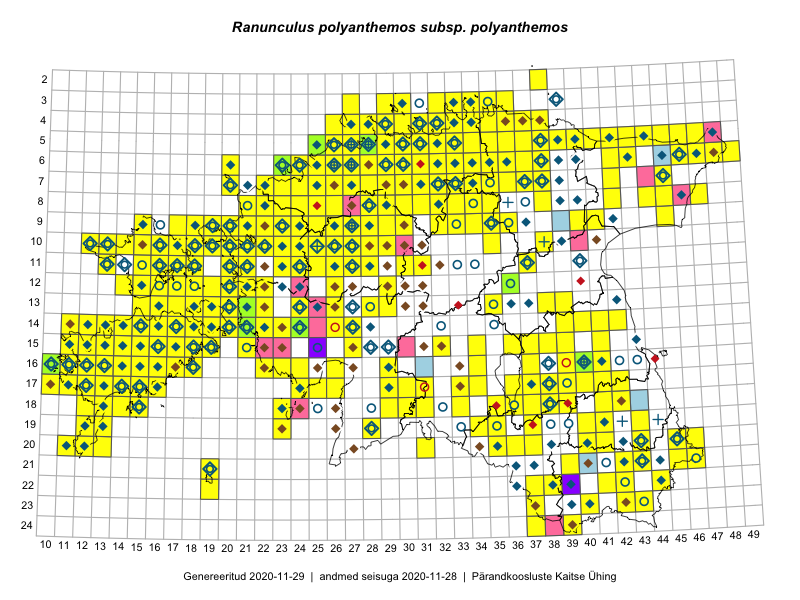

Ranunculus polyanthemos subsp. polyanthemos — mitmeõiene tulikas
Ranunculaceae :: Ranunculus polyanthemos subsp. polyanthemos L. (760); Ranunculus polyanthemos L. (698)

Kaart põhineb 2376 kirjel:
vaatlusi 1109
herbaareksemplare 349
PKÜ kirjeid1 763
ELFi kirjeid2 149
LVA kirjeid3 6
Taime kaasaegsed ja ajaloolised leiukohad asuvad 415 ruudus.
Tingmärgid ja leidudega ruutude arvud periooditi uues (u) ja 2005 andmestikus (v)
| █ | vahemik | u4 | v5 |
|---|---|---|---|
| █ | 2006–2020 | 349 | – |
| ◆/◇ | 1971–2005 | 255 | 230 |
| ○ | 1921–1970 | 122 | 33 |
| + | kuni 1920 | 11 | 0 |
| × | hävinud | – | 0 |
| ? | kaheldav | – | 0 |
| Ruut | Leidja(d) | Leiuaeg | Kirje |
|---|---|---|---|
| 15-18 | Toomas Kukk | 2020-09-11 | PKÜ: 20974 |
| 15-18 | Peedu Saar | 2020-09-11 | ruut/ala: Ranunculus polyanthemos subsp. polyanthemos L. |
| 15-18 | Peedu Saar | 2020-09-11 | PKÜ: 20980 |
| 16-17 | Peedu Saar | 2020-09-10 | ruut/ala: Ranunculus polyanthemos subsp. polyanthemos L. |
| 24-38 | Meeli Mesipuu | 2020-09-08 | PKÜ: 20696 |
| 24-38 | Meeli Mesipuu | 2020-09-07 | PKÜ: 20476 |
| 16-22 | Toomas Kukk | 2020-08-31 | PKÜ: 20701 |
| 16-22 | Toomas Kukk | 2020-08-31 | PKÜ: 20716 |
| 16-22 | Peedu Saar | 2020-08-31 | ruut/ala: Ranunculus polyanthemos subsp. polyanthemos L. |
| 16-22 | Peedu Saar | 2020-08-31 | PKÜ: 20644 |
| 16-22 | Peedu Saar | 2020-08-31 | PKÜ: 20655 |
| 15-22 | Meeli Mesipuu | 2020-08-30 | PKÜ: 21259 |
| 07-32 | Meeli Mesipuu | 2020-08-23 | punkt: Ranunculus polyanthemos L. |
| 07-32 | Meeli Mesipuu | 2020-08-23 | PKÜ: 20381 |
| 03-34 | Toomas Kukk, Ott Luuk, Kersti Tambets, Sten Mander, Kristine Fenske, Maie Itse | 2020-08-19 | ruut/ala: Ranunculus polyanthemos subsp. polyanthemos L. |
| 05-42 | Toomas Kukk, Ott Luuk, Kersti Tambets, Sten Mander, Kristine Fenske | 2020-08-18 | ruut/ala: Ranunculus polyanthemos subsp. polyanthemos L. |
| 16-10;16-11 | Meeli Mesipuu | 2020-08-14 | PKÜ: 20834 |
| 14-19 | Meeli Mesipuu | 2020-08-12 | ruut/ala: Ranunculus polyanthemos subsp. polyanthemos L. |
| 14-16 | Meeli Mesipuu | 2020-08-11 | PKÜ: 20316 |
| 09-21 | Ott Luuk | 2020-08-07 | ruut/ala: Ranunculus polyanthemos subsp. polyanthemos L. |
| 11-17 | Peedu Saar | 2020-08-06 | ruut/ala: Ranunculus polyanthemos subsp. polyanthemos L. |
| 07-44 | Peedu Saar | 2020-07-29 | PKÜ: 20512 |
| 07-44 | Peedu Saar | 2020-07-29 | PKÜ: 21085 |
| 09-26 | Peedu Saar | 2020-07-23 | punkt: Ranunculus polyanthemos subsp. polyanthemos L. |
| 08-25 | Ott Luuk | 2020-07-22–2020-07-23 | ruut/ala: Ranunculus polyanthemos subsp. polyanthemos L. |
| 09-26 | Ott Luuk | 2020-07-21–2020-07-23 | ruut/ala: Ranunculus polyanthemos subsp. polyanthemos L. |
| 14-21 | Meeli Mesipuu, Ott Luuk | 2020-07-18 | PKÜ: 21234 |
| 09-21 | Kaili Kattai | 2020-07-12 | punkt: Ranunculus polyanthemos L. |
| 17-11 | Rein Kalamees, Ott Luuk | 2020-07-03 | PKÜ: 20453 |
| 17-11 | Rein Kalamees, Ott Luuk | 2020-07-03 | PKÜ: 20454 |
| 17-11 | Rein Kalamees, Ott Luuk | 2020-07-03 | PKÜ: 20452 |
| 17-14 | Peedu Saar, Toomas Kukk | 2020-07-03 | ruut/ala: Ranunculus polyanthemos subsp. polyanthemos L. |
| 19-12 | Peedu Saar | 2020-07-02 | PKÜ: 20559 |
| 17-11 | Ott Luuk, Rein Kalamees | 2020-07-02 | PKÜ: 20227 |
| 17-11 | Ott Luuk, Rein Kalamees | 2020-07-02 | PKÜ: 20228 |
| 17-11 | Ott Luuk, Rein Kalamees | 2020-07-02 | PKÜ: 20229 |
| 17-11 | Ott Luuk, Rein Kalamees | 2020-07-02 | PKÜ: 21182 |
| 16-11 | Toomas Kukk | 2020-07-01 | PKÜ: 20496 |
| 16-11 | Toomas Kukk | 2020-07-01 | PKÜ: 20492 |
| 16-11 | Toomas Kukk | 2020-07-01 | PKÜ: 20500 |
| 17-10;17-11 | Peedu Saar | 2020-07-01 | PKÜ: 20471 |
| 17-11 | Ott Luuk, Rein Kalamees | 2020-07-01 | PKÜ: 20212 |
| 17-11 | Ott Luuk, Rein Kalamees | 2020-07-01 | PKÜ: 20207 |
| 17-11 | Ott Luuk, Rein Kalamees | 2020-07-01 | PKÜ: 20221 |
| 17-11 | Ott Luuk, Rein Kalamees | 2020-07-01 | PKÜ: 20222 |
| 17-11 | Ott Luuk, Rein Kalamees | 2020-07-01 | PKÜ: 20218 |
| 17-11 | Ott Luuk, Rein Kalamees | 2020-07-01 | PKÜ: 20226 |
| 14-22 | Ott Luuk, Rein Kalamees | 2020-06-30 | PKÜ: 20587 |
| 20-37 | Ott Luuk | 2020-06-27 | ruut/ala: Ranunculus polyanthemos subsp. polyanthemos L. |
| 04-33 | Rein Kalamees | 2020-06-22 | PKÜ: 20252 |
| 04-28 | Ott Luuk | 2020-06-22 | ruut/ala: Ranunculus polyanthemos subsp. polyanthemos L. |
| 08-28 | Ott Luuk | 2020-06-21 | ruut/ala: Ranunculus polyanthemos subsp. polyanthemos L. |
| 05-29 | Peedu Saar, Mart Meriste | 2020-06-19 | ruut/ala: Ranunculus polyanthemos subsp. polyanthemos L. |
| 12-21;13-21 | Toomas Kukk, Rein Kalamees, Martin Tikk | 2020-06-18 | PKÜ: 21101 |
| 13-21 | Rein Kalamees | 2020-06-18 | PKÜ: 21106 |
| 13-21 | Rein Kalamees | 2020-06-18 | PKÜ: 21107 |
| 11-21 | Meeli Mesipuu | 2020-06-18 | PKÜ: 20693 |
| 05-27 | Toomas Kukk, Rein Kalamees, Martin Tikk | 2020-06-17 | PKÜ: 20845 |
| 05-27 | Toomas Kukk, Rein Kalamees, Martin Tikk | 2020-06-17 | PKÜ: 20847 |
| 05-27 | Toomas Kukk, Rein Kalamees, Martin Tikk | 2020-06-17 | PKÜ: 20846 |
| 06-26 | Toomas Kukk, Martin Tikk | 2020-06-17 | PKÜ: 20771 |
| 06-26 | Toomas Kukk, Martin Tikk | 2020-06-17 | PKÜ: 20772 |
| 06-26 | Toomas Kukk, Martin Tikk | 2020-06-17 | PKÜ: 20783 |
| 06-26 | Rein Kalamees | 2020-06-17 | PKÜ: 20760 |
| 06-26 | Rein Kalamees | 2020-06-17 | PKÜ: 20762 |
| 06-26 | Rein Kalamees | 2020-06-17 | PKÜ: 20768 |
| 06-26 | Rein Kalamees | 2020-06-17 | PKÜ: 20756 |
| 06-26 | Rein Kalamees | 2020-06-17 | PKÜ: 20769 |
| 06-27 | Toomas Kukk, Rein Kalamees, Martin Tikk | 2020-06-16 | PKÜ: 20851 |
| 06-27 | Toomas Kukk, Rein Kalamees, Martin Tikk | 2020-06-16 | PKÜ: 20853 |
| 06-27 | Toomas Kukk, Rein Kalamees, Martin Tikk | 2020-06-16 | PKÜ: 20861 |
| 06-27 | Toomas Kukk, Rein Kalamees, Martin Tikk | 2020-06-16 | PKÜ: 20862 |
| 06-27 | Toomas Kukk, Rein Kalamees, Martin Tikk | 2020-06-16 | PKÜ: 20860 |
| 06-27 | Toomas Kukk, Martin Tikk, Rein Kalamees | 2020-06-16 | ruut/ala: Ranunculus polyanthemos subsp. polyanthemos L. |
| 05-26 | Rein Kalamees | 2020-06-16 | PKÜ: 20849 |
| 12-22 | Meeli Mesipuu | 2020-06-16 | PKÜ: 21143 |
| 08-27 | Toomas Kukk, Rein Kalamees | 2020-06-15 | PKÜ: 20462 |
| 09-28 | Toomas Kukk, Rein Kalamees | 2020-06-15 | PKÜ: 20466 |
| 08-27 | Toomas Kukk, Rein Kalamees | 2020-06-15 | PKÜ: 20487 |
| 10-30 | Ott Luuk, Peedu Saar | 2020-06-15 | PKÜ: 20393 |
| 10-30 | Ott Luuk, Peedu Saar | 2020-06-15 | PKÜ: 20394 |
| 10-30 | Ott Luuk, Peedu Saar | 2020-06-15 | PKÜ: 20400 |
| 10-30 | Ott Luuk, Peedu Saar | 2020-06-15 | PKÜ: 20401 |
| 10-30 | Ott Luuk, Peedu Saar | 2020-06-15 | PKÜ: 20402 |
| 10-30 | Ott Luuk, Peedu Saar | 2020-06-15 | PKÜ: 20408 |
| 10-30 | Ott Luuk, Peedu Saar | 2020-06-15 | PKÜ: 20409 |
| 04-32 | Peedu Saar, Ene Kook | 2020-06-11 | ruut/ala: Ranunculus polyanthemos subsp. polyanthemos L. |
| 04-32 | Peedu Saar | 2020-06-11 | PKÜ: 20374 |
| 04-33 | Meeli Mesipuu | 2020-06-11 | PKÜ: 21064 |
| 04-33 | Meeli Mesipuu | 2020-06-11 | PKÜ: 21068 |
| 05-32 | Ene Kook, Peedu Saar | 2020-06-11 | PKÜ: 20372 |
| 03-32;03-33 | Toomas Kukk | 2020-06-10 | PKÜ: 20801 |
| 03-33 | Toomas Kukk | 2020-06-10 | PKÜ: 20794 |
| 03-33 | Meeli Mesipuu, Toomas Kukk | 2020-06-10 | PKÜ: 20804 |
| 04-33 | Meeli Mesipuu | 2020-06-10 | PKÜ: 21058 |
| 05-33 | Rein Kalamees, Ott Luuk | 2020-06-09 | PKÜ: 20266 |
| 05-34 | Rein Kalamees, Ott Luuk | 2020-06-09 | PKÜ: 20269 |
| 05-33 | Rein Kalamees, Ott Luuk | 2020-06-09 | PKÜ: 20265 |
| 04-33 | Meeli Mesipuu | 2020-06-09 | PKÜ: 20831 |
| 07-36 | Toomas Kukk, Meeli Mesipuu | 2020-06-08 | ruut/ala: Ranunculus polyanthemos subsp. polyanthemos L. |
| 07-36 | Toomas Kukk, Meeli Mesipuu | 2020-06-08 | PKÜ: 20784 |
| 07-36 | Toomas Kukk, Meeli Mesipuu | 2020-06-08 | PKÜ: 20785 |
| 11-24 | Jane Pärnalaas | 2020-06-07 | punkt: Ranunculus polyanthemos L. |
| 05-28 | Tiiu Liimets, Ly Vetik, Jana-Maria Habicht | 2020-06-06 | punkt: Ranunculus polyanthemos L. |
| 05-28 | Leida Ojasoo | 2020-06-06 | punkt: Ranunculus polyanthemos L. |
| 05-27 | Karmel Ritson | 2020-06-06 | punkt: Ranunculus polyanthemos L. |
| 16-40 | Jelle Devalez | 2020-06-06 | punkt: Ranunculus polyanthemos L. |
| 14-21 | Kaili Kattai | 2020-06-04 | punkt: Ranunculus polyanthemos L. |
| 16-40 | Thea Kull | 2020-05-29–2020-07-03 | ruut/ala: Ranunculus polyanthemos subsp. polyanthemos L. |
| 12-18 | Toomas Kukk, Ott Luuk, Peeter Pärn | 2020-05-29–2020-05-31 | ruut/ala: Ranunculus polyanthemos subsp. polyanthemos L. |
| 15-19 | Meeli Mesipuu | 2020-05-29 | PKÜ: 20170 |
| 17-15 | Mari Reitalu, Sirje Azarov, Triin Reitalu | 2020-05-28 | ruut/ala: Ranunculus polyanthemos subsp. polyanthemos L. |
| 15-19 | Meeli Mesipuu | 2020-05-27 | PKÜ: 20171 |
| 15-19 | Meeli Mesipuu | 2020-05-27 | PKÜ: 20172 |
| 15-19 | Meeli Mesipuu | 2020-05-27 | PKÜ: 20963 |
| 15-19 | Meeli Mesipuu | 2020-05-27 | PKÜ: 20965 |
| 15-19 | Meeli Mesipuu | 2020-05-27 | PKÜ: 20982 |
| 17-14 | Mari Reitalu, Triin Reitalu, Sirje Azarov | 2020-05-26 | ruut/ala: Ranunculus polyanthemos subsp. polyanthemos L. |
| 15-19 | Meeli Mesipuu | 2020-05-25 | PKÜ: 20167 |
| 15-19 | Meeli Mesipuu | 2020-05-25 | PKÜ: 20173 |
| 09-20 | Ott Luuk | 2019-09-18 | ruut/ala: Ranunculus polyanthemos subsp. polyanthemos L. |
| 06-46 | Toomas Kukk, Thea Kull | 2019-09-11 | ruut/ala: Ranunculus polyanthemos subsp. polyanthemos L. |
| 05-43 | Ott Luuk, Meeli Mesipuu | 2019-09-11 | ruut/ala: Ranunculus polyanthemos subsp. polyanthemos L. |
| 13-29 | Mari Reitalu, Thea Kull | 2019-08-28 | ruut/ala: Ranunculus polyanthemos subsp. polyanthemos L. |
| 07-25 | Rein Kalamees | 2019-08-27 | ruut/ala: Ranunculus polyanthemos subsp. polyanthemos L. |
| 06-26 | Rein Kalamees | 2019-08-27 | ruut/ala: Ranunculus polyanthemos subsp. polyanthemos L. |
| 04-35 | Meeli Mesipuu | 2019-08-08 | ruut/ala: Ranunculus polyanthemos subsp. polyanthemos L. |
| 04-37 | Meeli Mesipuu | 2019-08-07 | ruut/ala: Ranunculus polyanthemos subsp. polyanthemos L. |
| 15-12 | Sirje Azarov, Mari Reitalu | 2019-08-06 | ELF: 2627 |
| 04-36 | Meeli Mesipuu | 2019-08-06 | punkt: Ranunculus polyanthemos subsp. polyanthemos L. |
| 04-36 | Meeli Mesipuu | 2019-08-06 | ruut/ala: Ranunculus polyanthemos subsp. polyanthemos L. |
| 02-38 | Meeli Mesipuu | 2019-08-06 | ruut/ala: Ranunculus polyanthemos subsp. polyanthemos L. |
| 15-12 | Mari Reitalu, Sirje Azarov | 2019-08-06 | ruut/ala: Ranunculus polyanthemos subsp. polyanthemos L. |
| 16-12 | Sirje Azarov, Mari Reitalu | 2019-08-05 | ELF: 61 |
| 07-31 | Peedu Saar, Timo Luhamäe | 2019-08-05 | ruut/ala: Ranunculus polyanthemos subsp. polyanthemos L. |
| 07-36 | Ott Luuk, Jaak-Albert Metsoja | 2019-08-05 | ruut/ala: Ranunculus polyanthemos subsp. polyanthemos L. |
| 16-12 | Mari Reitalu | 2019-07-23 | ELF: 734 |
| 10-26 | Rein Kalamees | 2019-07-17 | ruut/ala: Ranunculus polyanthemos subsp. polyanthemos L. |
| 16-40 | Meeli Mesipuu | 2019-07-17 | ruut/ala: Ranunculus polyanthemos subsp. polyanthemos L. |
| 22-44 | Ott Luuk, Tiit Hallikma | 2019-07-12 | ruut/ala: Ranunculus polyanthemos subsp. polyanthemos L. |
| 19-40 | Meeli Mesipuu | 2019-07-12 | ruut/ala: Ranunculus polyanthemos subsp. polyanthemos L. |
| 23-37 | Peedu Saar, Timo Luhamäe | 2019-07-11 | ruut/ala: Ranunculus polyanthemos subsp. polyanthemos L. |
| 20-46 | Ott Luuk, Tiit Hallikma | 2019-07-10 | ruut/ala: Ranunculus polyanthemos subsp. polyanthemos L. |
| 17-11 | Mari Reitalu, Sirje Azarov | 2019-07-10 | ELF: 9983 |
| 18-42 | Thea Kull, Meeli Mesipuu | 2019-07-09 | ruut/ala: Ranunculus polyanthemos subsp. polyanthemos L. |
| 20-43 | Ott Luuk, Tiit Hallikma | 2019-07-09 | ruut/ala: Ranunculus polyanthemos subsp. polyanthemos L. |
| 17-12 | Mari Reitalu | 2019-07-01 | ELF: 4696 |
| 10-17 | Eerik Leibak, Toomas Kukk | 2019-07-01 | ruut/ala: Ranunculus polyanthemos subsp. polyanthemos L. |
| 05-28 | Meeli Mesipuu | 2019-06-30 | ruut/ala: Ranunculus polyanthemos subsp. polyanthemos L. |
| 13-21 | Ott Luuk, Toomas Kukk, Thea Kull | 2019-06-25 | ruut/ala: Ranunculus polyanthemos subsp. polyanthemos L. |
| 06-27 | Meeli Mesipuu | 2019-06-16 | ruut/ala: Ranunculus polyanthemos subsp. polyanthemos L. |
| 06-27 | Meeli Mesipuu | 2019-06-16 | ruut/ala: Ranunculus polyanthemos subsp. polyanthemos L. |
| 05-27 | Meeli Mesipuu | 2019-06-16 | ruut/ala: Ranunculus polyanthemos subsp. polyanthemos L. |
| 19-41 | Merje Malkki | 2019-06-15 | punkt: Ranunculus polyanthemos L. |
| 05-27 | Leif-August Kirs, Anna-Grete Rebane, Urmas Lanto | 2019-06-14 | punkt: Ranunculus polyanthemos L. |
| 05-28 | Thea Kull | 2019-06-13 | ruut/ala: Ranunculus polyanthemos subsp. polyanthemos L. |
| 05-29 | Thea Kull | 2019-06-12 | ruut/ala: Ranunculus polyanthemos subsp. polyanthemos L. |
| 07-38 | Peedu Saar, Ott Luuk | 2019-06-12 | ruut/ala: Ranunculus polyanthemos subsp. polyanthemos L. |
| 05-26 | Marika Arro, Triin Edovald, Herdis Fridolin, Nele Jõessar, Timo Kark, Lauri Klein, Merit Otsus, Kristin Pille, Reigo Roasto, Kaire Sirel | 2019-06-12 | LVA: -30947114 |
| 04-33 | Peedu Saar, Ott Luuk | 2019-06-11 | ruut/ala: Ranunculus polyanthemos subsp. polyanthemos L. |
| 04-33 | Peedu Saar, Ott Luuk | 2019-06-11 | ruut/ala: Ranunculus polyanthemos subsp. polyanthemos L. |
| 05-32 | Peedu Saar, Ott Luuk | 2019-06-11 | punkt: Ranunculus polyanthemos subsp. polyanthemos L. |
| 05-33 | Ott Luuk, Peedu Saar | 2019-06-11 | ruut/ala: Ranunculus polyanthemos subsp. polyanthemos L. |
| 05-33 | Ott Luuk, Peedu Saar | 2019-06-11 | ruut/ala: Ranunculus polyanthemos subsp. polyanthemos L. |
| 11-37 | Ott Luuk, Peedu Saar | 2019-06-10 | ruut/ala: Ranunculus polyanthemos subsp. polyanthemos L. |
| 17-15 | Meeli Mesipuu | 2019-06-04 | ruut/ala: Ranunculus polyanthemos subsp. polyanthemos L. |
| 15-18 | Meeli Mesipuu | 2019-06-03 | ruut/ala: Ranunculus polyanthemos subsp. polyanthemos L. |
| 12-18 | Toomas Kukk, Indrek Tammekänd, Peeter Pärn | 2019-06-01 | ruut/ala: Ranunculus polyanthemos subsp. polyanthemos L. |
| 12-17 | Toomas Kukk, Indrek Tammekänd | 2019-06-01 | ruut/ala: Ranunculus polyanthemos subsp. polyanthemos L. |
| 12-18 | Toomas Kukk, Indrek Tammekänd | 2019-06-01 | ruut/ala: Ranunculus polyanthemos subsp. polyanthemos L. |
| 12-18 | Toomas Kukk | 2019-06-01 | ruut/ala: Ranunculus polyanthemos subsp. polyanthemos L. |
| 14-21 | Meeli Mesipuu | 2019-05-31 | ruut/ala: Ranunculus polyanthemos subsp. polyanthemos L. |
| 07-35 | Meeli Mesipuu | 2019-05-13 | ruut/ala: Ranunculus polyanthemos L. |
| 14-20 | Peedu Saar | 2018-09-19 | ruut/ala: Ranunculus polyanthemos subsp. polyanthemos L. |
| 15-21 | Toomas Kukk | 2018-09-18 | ruut/ala: Ranunculus polyanthemos subsp. polyanthemos L. |
| 04-28 | Ott Luuk | 2018-09-07 | ruut/ala: Ranunculus polyanthemos subsp. polyanthemos L. |
| 17-13 | Mari Reitalu, Sirje Azarov | 2018-08-23 | ELF: 2069 |
| 09-28 | Peedu Saar, Toomas Kukk, Ott Luuk, Kersti Tambets, Sten Mander | 2018-08-16 | ruut/ala: Ranunculus polyanthemos subsp. polyanthemos L. |
| 06-27 | Rein Kalamees | 2018-08-15 | ruut/ala: Ranunculus polyanthemos subsp. polyanthemos L. |
| 04-34 | Peedu Saar, Toomas Kukk | 2018-08-08 | ruut/ala: Ranunculus polyanthemos subsp. polyanthemos L. |
| 06-37 | Peedu Saar, Toomas Kukk | 2018-08-08 | ruut/ala: Ranunculus polyanthemos subsp. polyanthemos L. |
| 07-28 | Peedu Saar, Toomas Kukk | 2018-08-07 | ruut/ala: Ranunculus polyanthemos subsp. polyanthemos L. |
| 13-19 | Mari Reitalu, Sirje Azarov | 2018-08-07 | ELF: 24039 |
| 17-12 | Triin Reitalu, Mari Lepik | 2018-08-06 | punkt: Ranunculus polyanthemos L. |
| 17-12 | Triin Reitalu, Mari Lepik | 2018-08-06 | punkt: Ranunculus polyanthemos L. |
| 16-12 | Triin Reitalu, Mari Reitalu | 2018-08-03 | punkt: Ranunculus polyanthemos L. |
| 16-12 | Triin Reitalu, Mari Reitalu | 2018-08-03 | punkt: Ranunculus polyanthemos L. |
| 08-28 | Tiina Elvisto, Riima Niidas | 2018-08-01 | punkt: Ranunculus polyanthemos subsp. polyanthemos L. |
| 17-13 | Mari Reitalu, Sirje Azarov | 2018-07-24 | ELF: 486 |
| 14-40 | Peedu Saar | 2018-07-20 | ruut/ala: Ranunculus polyanthemos subsp. polyanthemos L. |
| 22-42 | Toomas Kukk | 2018-07-18 | ruut/ala: Ranunculus polyanthemos subsp. polyanthemos L. |
| 10-18 | Toomas Kukk, Meeli Mesipuu | 2018-07-11 | ruut/ala: Ranunculus polyanthemos subsp. polyanthemos L. |
| 10-17 | Peedu Saar | 2018-07-10 | ruut/ala: Ranunculus polyanthemos subsp. polyanthemos L. |
| 10-18 | Meeli Mesipuu | 2018-07-10 | ruut/ala: Ranunculus polyanthemos subsp. polyanthemos L. |
| 17-12 | Mari Reitalu, Sirje Azarov | 2018-07-10 | ELF: 16272 |
| 11-18 | Toomas Kukk | 2018-07-09 | ruut/ala: Ranunculus polyanthemos subsp. polyanthemos L. |
| 11-18 | Toomas Kukk | 2018-07-09 | ruut/ala: Ranunculus polyanthemos subsp. polyanthemos L. |
| 10-18 | Peedu Saar | 2018-07-09 | ruut/ala: Ranunculus polyanthemos subsp. polyanthemos L. |
| 11-18 | Peedu Saar | 2018-07-09 | ruut/ala: Ranunculus polyanthemos subsp. polyanthemos L. |
| 11-18 | Meeli Mesipuu | 2018-07-09 | ruut/ala: Ranunculus polyanthemos subsp. polyanthemos L. |
| 06-24 | Peedu Saar, Jaak-Albert Metsoja, Mari Metsoja | 2018-07-06 | ruut/ala: Ranunculus polyanthemos subsp. polyanthemos L. |
| 06-23 | Peedu Saar | 2018-07-05 | ruut/ala: Ranunculus polyanthemos subsp. polyanthemos L. |
| 06-23 | Ott Luuk, Meeli Mesipuu, Jaak-Albert Metsoja, Mari Metsoja, Peedu Saar | 2018-07-05 | ruut/ala: Ranunculus polyanthemos subsp. polyanthemos L. |
| 06-23 | Ott Luuk, Meeli Mesipuu, Jaak-Albert Metsoja, Mari Metsoja | 2018-07-05 | ruut/ala: Ranunculus polyanthemos subsp. polyanthemos L. |
| 06-23 | Ott Luuk, Meeli Mesipuu, Jaak-Albert Metsoja, Mari Metsoja, Peedu Saar | 2018-07-04–2018-07-06 | ruut/ala: Ranunculus polyanthemos subsp. polyanthemos L. |
| 06-23 | Peedu Saar | 2018-07-04 | ruut/ala: Ranunculus polyanthemos subsp. polyanthemos L. |
| 06-23 | Peedu Saar | 2018-07-04 | TAA0145887: Ranunculus polyanthemos L. |
| 05-32 | Rein Kalamees | 2018-06-28 | ruut/ala: Ranunculus polyanthemos subsp. polyanthemos L. |
| 08-29 | Alvar Jõekaar | 2018-06-27 | LVA: -2076562754 |
| 20-46 | Rein Kalamees | 2018-06-19 | ruut/ala: Ranunculus polyanthemos subsp. polyanthemos L. |
| 05-27 | Ranno Puumets | 2018-06-04 | ruut/ala: Ranunculus polyanthemos subsp. polyanthemos L. |
| 18-23 | Indrek Tammekänd | 2018-05-31–2018-06-02 | ruut/ala: Ranunculus polyanthemos L. |
| 16-14 | Toomas Kukk, Ilmar Uibopuu, Mari Reitalu | 2018-05-28 | ruut/ala: Ranunculus polyanthemos subsp. polyanthemos L. |
| 12-19 | Toomas Kukk, Ilmar Uibopuu, Mari Reitalu | 2018-05-27 | ruut/ala: Ranunculus polyanthemos subsp. polyanthemos L. |
| 16-15 | Toomas Kukk, Ilmar Uibopuu | 2018-05-27 | ruut/ala: Ranunculus polyanthemos subsp. polyanthemos L. |
| 13-18 | Toomas Kukk, Ilmar Uibopuu | 2018-05-26 | ruut/ala: Ranunculus polyanthemos subsp. polyanthemos L. |
| 14-20 | Toomas Kukk, Ilmar Uibopuu | 2018-05-26 | ruut/ala: Ranunculus polyanthemos subsp. polyanthemos L. |
| 15-21 | Toomas Kukk, Ilmar Uibopuu | 2018-05-25 | ruut/ala: Ranunculus polyanthemos subsp. polyanthemos L. |
| 15-19 | Mari Reitalu, Sirje Azarov, Maris Sepp | 2018-05-23 | ruut/ala: Ranunculus polyanthemos subsp. polyanthemos L. |
| 05-34 | Rein Kalamees | 2017-10-23 | ruut/ala: Ranunculus polyanthemos subsp. polyanthemos L. |
| 03-29 | Toomas Kukk | 2017-09-29 | ruut/ala: Ranunculus polyanthemos subsp. polyanthemos L. |
| 09-35 | Peedu Saar, Toomas Kukk | 2017-09-27 | ruut/ala: Ranunculus polyanthemos subsp. polyanthemos L. |
| 10-13 | Ott Luuk, Peedu Saar | 2017-09-14 | ruut/ala: Ranunculus polyanthemos subsp. polyanthemos L. |
| 12-14 | Toomas Kukk, Indrek Tammekänd | 2017-09-13 | ruut/ala: Ranunculus polyanthemos subsp. polyanthemos L. |
| 10-12 | Toomas Kukk, Indrek Tammekänd | 2017-09-12 | ruut/ala: Ranunculus polyanthemos subsp. polyanthemos L. |
| 09-17 | Peedu Saar, Ott Luuk | 2017-09-12 | ruut/ala: Ranunculus polyanthemos subsp. polyanthemos L. |
| 10-18 | Ott Luuk, Peedu Saar | 2017-09-12 | ruut/ala: Ranunculus polyanthemos subsp. polyanthemos L. |
| 12-17 | Toomas Kukk, Indrek Tammekänd | 2017-09-11 | ruut/ala: Ranunculus polyanthemos subsp. polyanthemos L. |
| 11-17 | Toomas Kukk, Indrek Tammekänd | 2017-09-11 | ruut/ala: Ranunculus polyanthemos subsp. polyanthemos L. |
| 10-17 | Ott Luuk, Peedu Saar | 2017-09-11 | ruut/ala: Ranunculus polyanthemos subsp. polyanthemos L. |
| 12-18 | Toomas Kukk, Peeter Pärn | 2017-09-09–2017-09-10 | ruut/ala: Ranunculus polyanthemos subsp. polyanthemos L. |
| 08-29 | Peedu Saar, Toomas Kukk | 2017-09-08 | ruut/ala: Ranunculus polyanthemos subsp. polyanthemos L. |
| 10-25 | Peedu Saar, Toomas Kukk | 2017-09-08 | ruut/ala: Ranunculus polyanthemos subsp. polyanthemos L. |
| 08-31 | Rein Kalamees | 2017-09-06 | ruut/ala: Ranunculus polyanthemos subsp. polyanthemos L. |
| 17-31 | Peedu Saar, Toomas Kukk | 2017-09-06 | ruut/ala: Ranunculus polyanthemos subsp. polyanthemos L. |
| 21-46 | Meeli Mesipuu | 2017-09-02 | punkt: Ranunculus polyanthemos L. |
| 09-24 | Mari Reitalu, Eerik Leibak | 2017-08-11 | ruut/ala: Ranunculus polyanthemos subsp. polyanthemos L. |
| 05-26 | Peedu Saar, Timo Luhamäe | 2017-08-10 | ruut/ala: Ranunculus polyanthemos subsp. polyanthemos L. |
| 11-20 | Ott Luuk, Ilmar Uibopuu | 2017-08-10 | ruut/ala: Ranunculus polyanthemos subsp. polyanthemos L. |
| 07-25 | Mari Reitalu, Indrek Tammekänd | 2017-08-10 | ruut/ala: Ranunculus polyanthemos subsp. polyanthemos L. |
| 11-21 | Ilmar Uibopuu, Ott Luuk | 2017-08-10 | ruut/ala: Ranunculus polyanthemos subsp. polyanthemos L. |
| 09-29 | Toomas Kukk, Ilmar Uibopuu, Kadri Kuusksalu | 2017-08-09 | ruut/ala: Ranunculus polyanthemos subsp. polyanthemos L. |
| 08-30 | Thea Kull, Ott Luuk | 2017-08-09 | ruut/ala: Ranunculus polyanthemos subsp. polyanthemos L. |
| 08-29 | Ott Luuk, Thea Kull | 2017-08-09 | ruut/ala: Ranunculus polyanthemos subsp. polyanthemos L. |
| 12-26 | Mari Reitalu, Eerik Leibak | 2017-08-09 | ruut/ala: Ranunculus polyanthemos subsp. polyanthemos L. |
| 09-28 | Ilmar Uibopuu, Kadri Kuusksalu, Toomas Kukk, Ott Luuk | 2017-08-09 | ruut/ala: Ranunculus polyanthemos subsp. polyanthemos L. |
| 08-26 | Toomas Kukk, Ilmar Uibopuu, Kadri Kuusksalu | 2017-08-08 | ruut/ala: Ranunculus polyanthemos subsp. polyanthemos L. |
| 10-28 | Thea Kull, Ott Luuk | 2017-08-08 | ruut/ala: Ranunculus polyanthemos subsp. polyanthemos L. |
| 11-13 | Rein Kalamees | 2017-08-08 | ruut/ala: Ranunculus polyanthemos subsp. polyanthemos L. |
| 07-28 | Peedu Saar, Timo Luhamäe | 2017-08-08 | ruut/ala: Ranunculus polyanthemos subsp. polyanthemos L. |
| 11-28 | Ott Luuk, Thea Kull | 2017-08-08 | ruut/ala: Ranunculus polyanthemos subsp. polyanthemos L. |
| 05-30 | Rein Kalamees | 2017-08-07 | ruut/ala: Ranunculus polyanthemos subsp. polyanthemos L. |
| 14-19 | Meeli Mesipuu | 2017-08-07 | ruut/ala: Ranunculus polyanthemos subsp. polyanthemos L. |
| 14-20 | Meeli Mesipuu | 2017-08-07 | ruut/ala: Ranunculus polyanthemos subsp. polyanthemos L. |
| 13-18 | Meeli Mesipuu | 2017-08-06 | ruut/ala: Ranunculus polyanthemos subsp. polyanthemos L. |
| 16-37 | Ott Luuk, Thea Kull | 2017-08-01 | ruut/ala: Ranunculus polyanthemos subsp. polyanthemos L. |
| 07-24 | Toomas Kukk, Ilmar Uibopuu | 2017-07-30 | ruut/ala: Ranunculus polyanthemos subsp. polyanthemos L. |
| 07-22 | Toomas Kukk, Ilmar Uibopuu | 2017-07-29 | ruut/ala: Ranunculus polyanthemos subsp. polyanthemos L. |
| 06-23 | Toomas Kukk | 2017-07-27 | ruut/ala: Ranunculus polyanthemos subsp. polyanthemos L. |
| 06-23 | Toomas Kukk | 2017-07-27 | ruut/ala: Ranunculus polyanthemos subsp. polyanthemos L. |
| 06-23 | Ilmar Uibopuu, Kadri Kuusksalu | 2017-07-27 | ruut/ala: Ranunculus polyanthemos subsp. polyanthemos L. |
| 06-24 | Ilmar Uibopuu, Kadri Kuusksalu | 2017-07-27 | ruut/ala: Ranunculus polyanthemos subsp. polyanthemos L. |
| 06-24 | Toomas Kukk, Ilmar Uibopuu, Kadri Kuusksalu | 2017-07-26 | ruut/ala: Ranunculus polyanthemos subsp. polyanthemos L. |
| 06-23 | Toomas Kukk, Ilmar Uibopuu, Kadri Kuusksalu | 2017-07-26 | ruut/ala: Ranunculus polyanthemos subsp. polyanthemos L. |
| 07-45 | Meeli Mesipuu | 2017-07-25 | ruut/ala: Ranunculus polyanthemos subsp. polyanthemos L. |
| 06-48 | Toomas Kukk | 2017-07-21 | ruut/ala: Ranunculus polyanthemos subsp. polyanthemos L. |
| 06-49 | Toomas Kukk | 2017-07-21 | ruut/ala: Ranunculus polyanthemos subsp. polyanthemos L. |
| 04-27 | Peedu Saar | 2017-07-20 | ruut/ala: Ranunculus polyanthemos subsp. polyanthemos L. |
| 03-27 | Ott Luuk | 2017-07-20 | ruut/ala: Ranunculus polyanthemos subsp. polyanthemos L. |
| 04-26 | Ott Luuk | 2017-07-20 | ruut/ala: Ranunculus polyanthemos subsp. polyanthemos L. |
| 06-34 | Peedu Saar, Ott Luuk | 2017-07-19 | ruut/ala: Ranunculus polyanthemos subsp. polyanthemos L. |
| 20-45 | Meeli Mesipuu | 2017-07-12–2017-07-18 | ruut/ala: Ranunculus polyanthemos subsp. polyanthemos L. |
| 19-37 | Helle Mäemets, Kadi Palmik | 2017-07-07 | ruut/ala: Ranunculus polyanthemos subsp. polyanthemos L. |
| 15-19 | Heete Ausmeel, Triin Edovald, Evelin Laanest, Ilmar Uibopuu, Marko Vainu | 2017-07-05 | LVA: -2010926754 |
| 15-19 | Heete Ausmeel, Triin Edovald, Evelin Laanest, Ilmar Uibopuu | 2017-07-04 | LVA: -1590505144 |
| 11-15 | Ott Luuk, Toomas Kukk, Peedu Saar, Sander Laherand | 2017-06-30 | ruut/ala: Ranunculus polyanthemos subsp. polyanthemos L. |
| 12-15 | Ott Luuk, Toomas Kukk, Peedu Saar, Sander Laherand | 2017-06-30 | ruut/ala: Ranunculus polyanthemos subsp. polyanthemos L. |
| 15-41 | Peedu Saar | 2017-06-22 | ruut/ala: Ranunculus polyanthemos subsp. polyanthemos L. |
| 17-37 | Thea Kull, Ott Luuk | 2017-06-21 | ruut/ala: Ranunculus polyanthemos subsp. polyanthemos L. |
| 18-29 | Helle Mäemets, Kadi Palmik | 2017-06-17 | ruut/ala: Ranunculus polyanthemos subsp. polyanthemos L. |
| 12-18 | Toomas Kukk, Peeter Pärn | 2017-06-15 | ruut/ala: Ranunculus polyanthemos subsp. polyanthemos L. |
| 12-18 | Toomas Kukk | 2017-06-15 | ruut/ala: Ranunculus polyanthemos subsp. polyanthemos L. |
| 12-18 | Peedu Saar, Ilmar Uibopuu | 2017-06-15 | ruut/ala: Ranunculus polyanthemos subsp. polyanthemos L. |
| 12-18 | Peedu Saar, Ilmar Uibopuu | 2017-06-15 | ruut/ala: Ranunculus polyanthemos subsp. polyanthemos L. |
| 12-18 | Ilmar Uibopuu, Peedu Saar | 2017-06-15 | ruut/ala: Ranunculus polyanthemos subsp. polyanthemos L. |
| 14-24 | Annaliisa Vask, Johanna Kasenurm | 2017-06-08 | TU284387: Ranunculus polyanthemos L. |
| 06-20 | Peedu Saar | 2017-05-30 | ruut/ala: Ranunculus polyanthemos subsp. polyanthemos L. |
| 07-20 | Peedu Saar, Elle Roosaluste, Kaili Orav | 2017-05-29–2017-05-30 | ruut/ala: Ranunculus polyanthemos subsp. polyanthemos L. |
| 03-30 | Tiina Elvisto | 2017-05-27 | ruut/ala: Ranunculus polyanthemos subsp. polyanthemos L. |
| 12-18 | Toomas Kukk | 2017-05-06 | ruut/ala: Ranunculus polyanthemos subsp. polyanthemos L. |
| 15-12 | Toomas Kukk, Meeli Mesipuu | 2016-10-08 | ruut/ala: Ranunculus polyanthemos subsp. polyanthemos L. |
| 17-13 | Ott Luuk, Peedu Saar | 2016-10-08 | ruut/ala: Ranunculus polyanthemos subsp. polyanthemos L. |
| 18-12 | Toomas Kukk, Meeli Mesipuu, Mari Reitalu | 2016-10-07 | ruut/ala: Ranunculus polyanthemos subsp. polyanthemos L. |
| 16-10 | Sirje Azarov | 2016-10-05 | ruut/ala: Ranunculus polyanthemos subsp. polyanthemos L. |
| 15-15 | Meeli Mesipuu | 2016-09-23 | ruut/ala: Ranunculus polyanthemos subsp. polyanthemos L. |
| 09-19 | Meeli Mesipuu, Ott Luuk | 2016-09-16 | ruut/ala: Ranunculus polyanthemos subsp. polyanthemos L. |
| 08-28 | Peedu Saar, Ott Luuk | 2016-09-07 | ruut/ala: Ranunculus polyanthemos subsp. polyanthemos L. |
| 09-30 | Ott Luuk, Peedu Saar | 2016-09-06–2016-09-07 | ruut/ala: Ranunculus polyanthemos subsp. polyanthemos L. |
| 06-24 | Peedu Saar, Ott Luuk | 2016-09-06 | ruut/ala: Ranunculus polyanthemos subsp. polyanthemos L. |
| 05-38 | Thea Kull, Toomas Kukk | 2016-09-05 | ruut/ala: Ranunculus polyanthemos subsp. polyanthemos L. |
| 16-17 | Peedu Saar, Ott Luuk | 2016-09-01 | ruut/ala: Ranunculus polyanthemos subsp. polyanthemos L. |
| 04-31 | Sander Laherand, Toomas Kukk | 2016-08-31 | ruut/ala: Ranunculus polyanthemos subsp. polyanthemos L. |
| 13-16 | Peedu Saar, Ott Luuk | 2016-08-31 | ruut/ala: Ranunculus polyanthemos subsp. polyanthemos L. |
| 14-16 | Ott Luuk, Peedu Saar | 2016-08-31 | ruut/ala: Ranunculus polyanthemos subsp. polyanthemos L. |
| 06-30 | Toomas Kukk, Sander Laherand | 2016-08-30 | ruut/ala: Ranunculus polyanthemos subsp. polyanthemos L. |
| 05-31 | Sander Laherand, Toomas Kukk | 2016-08-30 | ruut/ala: Ranunculus polyanthemos subsp. polyanthemos L. |
| 18-15 | Peedu Saar | 2016-08-30 | ruut/ala: Ranunculus polyanthemos subsp. polyanthemos L. |
| 05-29 | Toomas Kukk, Sander Laherand | 2016-08-29 | ruut/ala: Ranunculus polyanthemos subsp. polyanthemos L. |
| 06-29 | Sander Laherand, Toomas Kukk | 2016-08-29 | ruut/ala: Ranunculus polyanthemos subsp. polyanthemos L. |
| 13-17 | Peedu Saar, Ott Luuk | 2016-08-29 | ruut/ala: Ranunculus polyanthemos subsp. polyanthemos L. |
| 14-17 | Ott Luuk, Peedu Saar | 2016-08-29 | ruut/ala: Ranunculus polyanthemos subsp. polyanthemos L. |
| 16-12 | Mari Reitalu | 2016-08-28 | punkt: Ranunculus polyanthemos L. |
| 15-18 | Mari Reitalu, Hannes Pehlak | 2016-08-26 | ruut/ala: Ranunculus polyanthemos subsp. polyanthemos L. |
| 17-12 | Mari Reitalu | 2016-08-24 | punkt: Ranunculus polyanthemos L. |
| 20-36 | Thea Kull, Ott Luuk | 2016-08-23 | ruut/ala: Ranunculus polyanthemos subsp. polyanthemos L. |
| 14-19 | Mari Reitalu, Sirje Azarov | 2016-08-18 | ruut/ala: Ranunculus polyanthemos subsp. polyanthemos L. |
| 14-20 | Mari Reitalu, Sirje Azarov | 2016-08-17 | ruut/ala: Ranunculus polyanthemos subsp. polyanthemos L. |
| 13-19 | Mari Reitalu, Sirje Azarov | 2016-08-16 | ruut/ala: Ranunculus polyanthemos subsp. polyanthemos L. |
| 14-18 | Mari Reitalu | 2016-08-15 | ruut/ala: Ranunculus polyanthemos subsp. polyanthemos L. |
| 15-19 | Mari Reitalu, Triin Reitalu | 2016-08-14 | ruut/ala: Ranunculus polyanthemos subsp. polyanthemos L. |
| 17-16 | Toomas Kukk, Meeli Mesipuu | 2016-08-12 | ruut/ala: Ranunculus polyanthemos subsp. polyanthemos L. |
| 15-14 | Maret Gerz, Peedu Saar | 2016-08-12 | ruut/ala: Ranunculus polyanthemos subsp. polyanthemos L. |
| 12-17 | Thea Kull, Sander Laherand | 2016-08-11 | ruut/ala: Ranunculus polyanthemos subsp. polyanthemos L. |
| 12-16 | Sander Laherand, Thea Kull, Nele Jõessar | 2016-08-11 | ruut/ala: Ranunculus polyanthemos subsp. polyanthemos L. |
| 14-15 | Peedu Saar, Maret Gerz | 2016-08-11 | ruut/ala: Ranunculus polyanthemos subsp. polyanthemos L. |
| 17-15 | Meeli Mesipuu, Toomas Kukk, Johannes Kõdar | 2016-08-11 | ruut/ala: Ranunculus polyanthemos subsp. polyanthemos L. |
| 13-15 | Maret Gerz, Peedu Saar | 2016-08-11 | ruut/ala: Ranunculus polyanthemos subsp. polyanthemos L. |
| 11-13 | Thea Kull, Peedu Saar | 2016-08-10 | ruut/ala: Ranunculus polyanthemos subsp. polyanthemos L. |
| 08-47 | Ott Luuk, Kersti Tambets, Janika Sammasto, Ülle Jõgar, Sten Mander | 2016-08-10 | ruut/ala: Ranunculus polyanthemos subsp. polyanthemos L. |
| 05-47 | Ott Luuk, Kersti Tambets, Janika Sammasto, Ülle Jõgar, Sten Mander | 2016-08-10 | ruut/ala: Ranunculus polyanthemos subsp. polyanthemos L. |
| 06-47 | Ott Luuk, Kersti Tambets, Janika Sammasto, Ülle Jõgar, Sten Mander | 2016-08-10 | ruut/ala: Ranunculus polyanthemos subsp. polyanthemos L. |
| 10-13 | Maret Gerz, Sander Laherand | 2016-08-10 | ruut/ala: Ranunculus polyanthemos subsp. polyanthemos L. |
| 14-18 | Mari Reitalu, Sirje Azarov | 2016-08-09–2016-08-10 | ruut/ala: Ranunculus polyanthemos subsp. polyanthemos L. |
| 10-15 | Toomas Kukk, Sander Laherand, Nele Jõessar | 2016-08-09 | ruut/ala: Ranunculus polyanthemos subsp. polyanthemos L. |
| 10-14 | Sander Laherand, Toomas Kukk, Nele Jõessar | 2016-08-09 | ruut/ala: Ranunculus polyanthemos subsp. polyanthemos L. |
| 14-15 | Mari Reitalu, Sirje Azarov | 2016-08-09 | ruut/ala: Ranunculus polyanthemos subsp. polyanthemos L. |
| 11-16 | Toomas Kukk, Thea Kull | 2016-08-08 | ruut/ala: Ranunculus polyanthemos subsp. polyanthemos L. |
| 11-18 | Sander Laherand, Peedu Saar, Nele Jõessar | 2016-08-08 | ruut/ala: Ranunculus polyanthemos subsp. polyanthemos L. |
| 10-38 | Ott Luuk, Eerik Leibak | 2016-08-08 | ruut/ala: Ranunculus polyanthemos subsp. polyanthemos L. |
| 16-18 | Mari Reitalu, Sirje Azarov | 2016-08-08 | ruut/ala: Ranunculus polyanthemos subsp. polyanthemos L. |
| 20-12 | Mari Reitalu, Sirje Azarov | 2016-08-08 | ruut/ala: Ranunculus polyanthemos subsp. polyanthemos L. |
| 05-28 | Toomas Kukk, Peedu Saar | 2016-08-03 | ruut/ala: Ranunculus polyanthemos subsp. polyanthemos L. |
| 18-13 | Mari Reitalu, Sirje Azarov | 2016-07-31 | ruut/ala: Ranunculus polyanthemos subsp. polyanthemos L. |
| 19-13 | Mari Reitalu, Sirje Azarov | 2016-07-31 | ruut/ala: Ranunculus polyanthemos subsp. polyanthemos L. |
| 04-30 | Sander Laherand, Eerik Leibak | 2016-07-29 | ruut/ala: Ranunculus polyanthemos subsp. polyanthemos L. |
| 05-30 | Sander Laherand, Eerik Leibak | 2016-07-29 | ruut/ala: Ranunculus polyanthemos subsp. polyanthemos L. |
| 05-40 | Peedu Saar, Sander Laherand | 2016-07-28 | ruut/ala: Ranunculus polyanthemos subsp. polyanthemos L. |
| 05-39 | Ott Luuk, Tiit Hallikma | 2016-07-28 | ruut/ala: Ranunculus polyanthemos subsp. polyanthemos L. |
| 07-38 | Liina Oja, Eerik Leibak | 2016-07-28 | ruut/ala: Ranunculus polyanthemos subsp. polyanthemos L. |
| 08-38 | Liina Oja, Eerik Leibak | 2016-07-28 | ruut/ala: Ranunculus polyanthemos subsp. polyanthemos L. |
| 19-23 | Karin Kaljund, Kaire Lanno, Indrek Melts | 2016-07-28 | ruut/ala: Ranunculus polyanthemos subsp. polyanthemos L. |
| 05-38 | Hannes Pehlak, Toomas Kukk, Susanna Vain | 2016-07-28 | ruut/ala: Ranunculus polyanthemos subsp. polyanthemos L. |
| 05-37 | Tõnu Ploompuu, Eerik Leibak | 2016-07-27 | ruut/ala: Ranunculus polyanthemos subsp. polyanthemos L. |
| 07-35 | Toomas Kukk, Sander Laherand, Nele Jõessar | 2016-07-27 | ruut/ala: Ranunculus polyanthemos subsp. polyanthemos L. |
| 08-35 | Sander Laherand, Toomas Kukk, Nele Jõessar | 2016-07-27 | ruut/ala: Ranunculus polyanthemos subsp. polyanthemos L. |
| 06-36 | Peedu Saar, Liina Oja, Susanna Vain | 2016-07-27 | ruut/ala: Ranunculus polyanthemos subsp. polyanthemos L. |
| 05-35 | Peedu Saar, Liina Oja, Susanna Vain | 2016-07-27 | ruut/ala: Ranunculus polyanthemos subsp. polyanthemos L. |
| 05-33 | Ott Luuk, Hannes Pehlak | 2016-07-27 | ruut/ala: Ranunculus polyanthemos subsp. polyanthemos L. |
| 05-34 | Ott Luuk, Hannes Pehlak | 2016-07-27 | ruut/ala: Ranunculus polyanthemos subsp. polyanthemos L. |
| 16-41 | Kersti Püssa, Rein Kalamees | 2016-07-27 | ruut/ala: Ranunculus polyanthemos subsp. polyanthemos L. |
| 18-23 | Karin Kaljund, Kaire Lanno, Indrek Melts | 2016-07-27 | ruut/ala: Ranunculus polyanthemos subsp. polyanthemos L. |
| 05-42 | Tiit Hallikma, Tõnu Ploompuu | 2016-07-26 | ruut/ala: Ranunculus polyanthemos subsp. polyanthemos L. |
| 04-38 | Thea Kull, Susanna Vain, Eerik Leibak | 2016-07-26 | ruut/ala: Ranunculus polyanthemos subsp. polyanthemos L. |
| 04-37 | Thea Kull, Eerik Leibak, Susanna Vain | 2016-07-26 | ruut/ala: Ranunculus polyanthemos subsp. polyanthemos L. |
| 04-32 | Peedu Saar, Timo Luhamäe | 2016-07-26 | ruut/ala: Ranunculus polyanthemos subsp. polyanthemos L. |
| 14-14 | Mari Reitalu, Sirje Azarov | 2016-07-26 | ruut/ala: Ranunculus polyanthemos subsp. polyanthemos L. |
| 04-34 | Hannes Pehlak, Toomas Kukk | 2016-07-26 | ruut/ala: Ranunculus polyanthemos subsp. polyanthemos L. |
| 04-29 | Sander Laherand, Tõnu Ploompuu, Nele Jõessar | 2016-07-25 | ruut/ala: Ranunculus polyanthemos subsp. polyanthemos L. |
| 09-34 | Ott Luuk, Eerik Leibak | 2016-07-25 | ruut/ala: Ranunculus polyanthemos subsp. polyanthemos L. |
| 17-38 | Kersti Püssa, Rein Kalamees | 2016-07-25 | ruut/ala: Ranunculus polyanthemos subsp. polyanthemos L. |
| 15-37 | Karin Kaljund, Kaire Lanno | 2016-07-25 | ruut/ala: Ranunculus polyanthemos subsp. polyanthemos L. |
| 06-38 | Hannes Pehlak, Thea Kull | 2016-07-25 | ruut/ala: Ranunculus polyanthemos subsp. polyanthemos L. |
| 08-31 | Erkki Otsman, Sergei Smirnov | 2016-07-24 | ruut/ala: Ranunculus polyanthemos subsp. polyanthemos L. |
| 13-38 | Eeva-Maria Jeletsky, Tarmo Niitla | 2016-07-23 | ruut/ala: Ranunculus polyanthemos subsp. polyanthemos L. |
| 11-31 | Peedu Saar, Toivo Sepp | 2016-07-22 | ruut/ala: Ranunculus polyanthemos subsp. polyanthemos L. |
| 07-31 | Erkki Otsman, Sergei Smirnov | 2016-07-22 | ruut/ala: Ranunculus polyanthemos subsp. polyanthemos L. |
| 15-32 | Toomas Kukk, Liina Oja | 2016-07-21 | ruut/ala: Ranunculus polyanthemos subsp. polyanthemos L. |
| 17-39 | Rein Kalamees, Kersti Püssa | 2016-07-21 | ruut/ala: Ranunculus polyanthemos subsp. polyanthemos L. |
| 18-37 | Rein Kalamees, Kersti Püssa | 2016-07-21 | ruut/ala: Ranunculus polyanthemos subsp. polyanthemos L. |
| 17-34 | Toivo Sepp, Meeli Mesipuu, Susanna Vain | 2016-07-20 | ruut/ala: Ranunculus polyanthemos subsp. polyanthemos L. |
| 17-36 | Rein Kalamees, Kersti Püssa | 2016-07-20 | ruut/ala: Ranunculus polyanthemos subsp. polyanthemos L. |
| 17-37 | Rein Kalamees, Kersti Püssa | 2016-07-20 | ruut/ala: Ranunculus polyanthemos subsp. polyanthemos L. |
| 17-30 | Oliver Parrest, Timo Luhamäe | 2016-07-20 | ruut/ala: Ranunculus polyanthemos subsp. polyanthemos L. |
| 18-35 | Mari Metsoja, Peedu Saar | 2016-07-20 | ruut/ala: Ranunculus polyanthemos subsp. polyanthemos L. |
| 15-38 | Kaire Lanno, Karin Kaljund | 2016-07-20 | ruut/ala: Ranunculus polyanthemos subsp. polyanthemos L. |
| 16-34 | Jaak-Albert Metsoja, Lena Neuenkamp, Sirje Azarov | 2016-07-20 | ruut/ala: Ranunculus polyanthemos subsp. polyanthemos L. |
| 17-29 | Aat Sarv, Raivo Kalle | 2016-07-20 | ruut/ala: Ranunculus polyanthemos subsp. polyanthemos L. |
| 18-29 | Aat Sarv, Raivo Kalle | 2016-07-20 | ruut/ala: Ranunculus polyanthemos subsp. polyanthemos L. |
| 20-31 | Mari Metsoja, Meeli Mesipuu | 2016-07-19 | ruut/ala: Ranunculus polyanthemos subsp. polyanthemos L. |
| 15-39 | Kaire Lanno, Karin Kaljund | 2016-07-19 | ruut/ala: Ranunculus polyanthemos subsp. polyanthemos L. |
| 07-31 | Peedu Saar, Toivo Sepp | 2016-07-18 | ruut/ala: Ranunculus polyanthemos subsp. polyanthemos L. |
| 06-38 | Tõnu Ploompuu | 2016-07-17 | ruut/ala: Ranunculus polyanthemos subsp. polyanthemos L. |
| 07-28 | Erkki Otsman, Sergei Smirnov | 2016-07-15 | ruut/ala: Ranunculus polyanthemos subsp. polyanthemos L. |
| 09-15 | Eeva-Maria Jeletsky, Tarmo Niitla | 2016-07-13 | ruut/ala: Ranunculus polyanthemos subsp. polyanthemos L. |
| 13-28 | Thea Kull, Tiit Hallikma | 2016-07-08 | ruut/ala: Ranunculus polyanthemos subsp. polyanthemos L. |
| 08-29 | Sander Laherand, Rein Kalamees | 2016-07-08 | ruut/ala: Ranunculus polyanthemos subsp. polyanthemos L. |
| 07-29 | Rein Kalamees, Sander Laherand | 2016-07-08 | ruut/ala: Ranunculus polyanthemos subsp. polyanthemos L. |
| 14-26 | Maret Gerz, Liina Oja | 2016-07-08 | ruut/ala: Ranunculus polyanthemos subsp. polyanthemos L. |
| 08-24 | Jaak-Albert Metsoja, Mari Metsoja | 2016-07-08 | ruut/ala: Ranunculus polyanthemos subsp. polyanthemos L. |
| 09-24 | Jaak-Albert Metsoja, Mari Metsoja | 2016-07-08 | ruut/ala: Ranunculus polyanthemos subsp. polyanthemos L. |
| 07-23 | Aat Sarv, Helle Mäemets, Mari Reitalu, Sirje Azarov | 2016-07-08 | ruut/ala: Ranunculus polyanthemos subsp. polyanthemos L. |
| 08-23 | Aat Sarv, Helle Mäemets | 2016-07-08 | ruut/ala: Ranunculus polyanthemos subsp. polyanthemos L. |
| 09-18 | Toomas Kukk, Sander Laherand | 2016-07-07 | ruut/ala: Ranunculus polyanthemos subsp. polyanthemos L. |
| 06-24 | Thea Kull, Helle Mäemets | 2016-07-07 | ruut/ala: Ranunculus polyanthemos subsp. polyanthemos L. |
| 10-22 | Sirje Azarov, Oliver Parrest | 2016-07-07 | ruut/ala: Ranunculus polyanthemos subsp. polyanthemos L. |
| 10-18 | Sander Laherand, Toomas Kukk | 2016-07-07 | ruut/ala: Ranunculus polyanthemos subsp. polyanthemos L. |
| 09-19 | Rein Kalamees, Liina Oja | 2016-07-07 | ruut/ala: Ranunculus polyanthemos subsp. polyanthemos L. |
| 10-19 | Rein Kalamees, Liina Oja | 2016-07-07 | ruut/ala: Ranunculus polyanthemos subsp. polyanthemos L. |
| 11-20 | Aat Sarv, Maret Gerz | 2016-07-07 | ruut/ala: Ranunculus polyanthemos subsp. polyanthemos L. |
| 11-21 | Aat Sarv, Maret Gerz | 2016-07-07 | ruut/ala: Ranunculus polyanthemos subsp. polyanthemos L. |
| 17-25 | Tiit Hallikma, Tõnu Ploompuu | 2016-07-06 | ruut/ala: Ranunculus polyanthemos subsp. polyanthemos L. |
| 09-27 | Rein Kalamees, Liina Oja | 2016-07-06 | ruut/ala: Ranunculus polyanthemos subsp. polyanthemos L. |
| 09-28 | Rein Kalamees, Liina Oja | 2016-07-06 | ruut/ala: Ranunculus polyanthemos subsp. polyanthemos L. |
| 09-23 | Jaak-Albert Metsoja, Mari Metsoja | 2016-07-06 | ruut/ala: Ranunculus polyanthemos subsp. polyanthemos L. |
| 09-22 | Jaak-Albert Metsoja, Mari Metsoja | 2016-07-06 | ruut/ala: Ranunculus polyanthemos subsp. polyanthemos L. |
| 06-25 | Toomas Kukk, Sander Laherand | 2016-07-05 | ruut/ala: Ranunculus polyanthemos subsp. polyanthemos L. |
| 14-23 | Thea Kull, Eerik Leibak | 2016-07-05 | ruut/ala: Ranunculus polyanthemos subsp. polyanthemos L. |
| 05-25 | Sander Laherand, Toomas Kukk | 2016-07-05 | ruut/ala: Ranunculus polyanthemos subsp. polyanthemos L. |
| 07-25 | Helle Mäemets, Tiina Elvisto | 2016-07-05 | ruut/ala: Ranunculus polyanthemos subsp. polyanthemos L. |
| 13-22 | Aat Sarv, Maret Gerz | 2016-07-05 | ruut/ala: Ranunculus polyanthemos subsp. polyanthemos L. |
| 13-21 | Aat Sarv, Maret Gerz | 2016-07-05 | ruut/ala: Ranunculus polyanthemos subsp. polyanthemos L. |
| 05-26 | Tiina Elvisto, Eerik Leibak | 2016-07-04 | ruut/ala: Ranunculus polyanthemos subsp. polyanthemos L. |
| 06-26 | Tiina Elvisto, Eerik Leibak | 2016-07-04 | ruut/ala: Ranunculus polyanthemos subsp. polyanthemos L. |
| 07-30 | Rein Kalamees, Liina Oja | 2016-07-04 | ruut/ala: Ranunculus polyanthemos subsp. polyanthemos L. |
| 16-22 | Peedu Saar, Timo Luhamäe, Johannes Kõdar | 2016-07-04 | ruut/ala: Ranunculus polyanthemos subsp. polyanthemos L. |
| 14-21 | Mari Reitalu, Oliver Parrest | 2016-07-04 | ruut/ala: Ranunculus polyanthemos subsp. polyanthemos L. |
| 07-26 | Jaak-Albert Metsoja, Mari Metsoja | 2016-07-04 | ruut/ala: Ranunculus polyanthemos subsp. polyanthemos L. |
| 08-26 | Jaak-Albert Metsoja, Mari Metsoja | 2016-07-04 | ruut/ala: Ranunculus polyanthemos subsp. polyanthemos L. |
| 16-26 | Aat Sarv, Maret Gerz | 2016-07-04 | ruut/ala: Ranunculus polyanthemos subsp. polyanthemos L. |
| 08-23 | Jaak-Albert Metsoja, Mari Metsoja | 2016-07-02 | ruut/ala: Ranunculus polyanthemos subsp. polyanthemos L. |
| 08-32 | Rein Kalamees, Kersti Püssa | 2016-07-01 | ruut/ala: Ranunculus polyanthemos subsp. polyanthemos L. |
| 07-20 | Jaak-Albert Metsoja, Mari Metsoja | 2016-07-01 | ruut/ala: Ranunculus polyanthemos subsp. polyanthemos L. |
| 06-20 | Jaak-Albert Metsoja, Mari Metsoja | 2016-06-30 | ruut/ala: Ranunculus polyanthemos subsp. polyanthemos L. |
| 14-21 | Ott Luuk, Peedu Saar | 2016-06-29 | punkt: Ranunculus polyanthemos subsp. polyanthemos L. |
| 06-35 | Karin Kikas, Elle Rajandu | 2016-06-29 | ruut/ala: Ranunculus polyanthemos subsp. polyanthemos L. |
| 16-15 | Meeli Mesipuu | 2016-06-28 | ruut/ala: Ranunculus polyanthemos subsp. polyanthemos L. |
| 16-40 | Kersti Püssa, Rein Kalamees | 2016-06-25 | ruut/ala: Ranunculus polyanthemos subsp. polyanthemos L. |
| 14-21 | Erkki Otsman, Sergei Smirnov | 2016-06-24 | ruut/ala: Ranunculus polyanthemos subsp. polyanthemos L. |
| 07-32 | Rein Kalamees, Kersti Püssa | 2016-06-23 | ruut/ala: Ranunculus polyanthemos subsp. polyanthemos L. |
| 14-22 | Erkki Otsman, Sergei Smirnov | 2016-06-23 | ruut/ala: Ranunculus polyanthemos subsp. polyanthemos L. |
| 14-23 | Erkki Otsman, Sergei Smirnov | 2016-06-22 | ruut/ala: Ranunculus polyanthemos subsp. polyanthemos L. |
| 05-46 | Erkki Otsman, Sergei Smirnov | 2016-06-17–2016-06-18 | ruut/ala: Ranunculus polyanthemos subsp. polyanthemos L. |
| 06-46 | Erkki Otsman, Sergei Smirnov | 2016-06-17–2016-06-18 | ruut/ala: Ranunculus polyanthemos subsp. polyanthemos L. |
| 21-39 | Rein Kalamees, Eerik Leibak | 2016-06-17 | ruut/ala: Ranunculus polyanthemos subsp. polyanthemos L. |
| 21-43 | Meeli Mesipuu, Timo Luhamäe | 2016-06-17 | ruut/ala: Ranunculus polyanthemos subsp. polyanthemos L. |
| 20-43 | Meeli Mesipuu, Timo Luhamäe | 2016-06-17 | ruut/ala: Ranunculus polyanthemos subsp. polyanthemos L. |
| 20-41 | Peedu Saar, Tarmo Niitla | 2016-06-16 | ruut/ala: Ranunculus polyanthemos subsp. polyanthemos L. |
| 22-37 | Jaak-Albert Metsoja, Mari Metsoja | 2016-06-16 | ruut/ala: Ranunculus polyanthemos subsp. polyanthemos L. |
| 05-47 | Erkki Otsman, Sergei Smirnov | 2016-06-16 | ruut/ala: Ranunculus polyanthemos subsp. polyanthemos L. |
| 23-43 | Meeli Mesipuu, Timo Luhamäe | 2016-06-15 | ruut/ala: Ranunculus polyanthemos subsp. polyanthemos L. |
| 23-37 | Maret Gerz, Liina Oja | 2016-06-15 | ruut/ala: Ranunculus polyanthemos subsp. polyanthemos L. |
| 09-40 | Kersti Püssa, Rein Kalamees | 2016-06-15 | ruut/ala: Ranunculus polyanthemos subsp. polyanthemos L. |
| 09-41 | Kersti Püssa, Rein Kalamees | 2016-06-15 | ruut/ala: Ranunculus polyanthemos subsp. polyanthemos L. |
| 22-44 | Jaak-Albert Metsoja, Mari Metsoja | 2016-06-15 | ruut/ala: Ranunculus polyanthemos subsp. polyanthemos L. |
| 21-46 | Timo Luhamäe, Meeli Mesipuu | 2016-06-14 | ruut/ala: Ranunculus polyanthemos subsp. polyanthemos L. |
| 23-40 | Sander Laherand, Ott Luuk, Susanna Vain | 2016-06-14 | ruut/ala: Ranunculus polyanthemos subsp. polyanthemos L. |
| 24-39 | Maret Gerz, Liina Oja | 2016-06-14 | ruut/ala: Ranunculus polyanthemos subsp. polyanthemos L. |
| 24-39 | Liina Oja, Maret Gerz | 2016-06-14 | punkt: Ranunculus polyanthemos subsp. polyanthemos L. |
| 24-39 | Liina Oja, Maret Gerz | 2016-06-14 | punkt: Ranunculus polyanthemos subsp. polyanthemos L. |
| 20-45 | Jaak-Albert Metsoja, Mari Metsoja | 2016-06-14 | ruut/ala: Ranunculus polyanthemos subsp. polyanthemos L. |
| 18-38 | Meeli Mesipuu, Timo Luhamäe | 2016-06-13 | ruut/ala: Ranunculus polyanthemos subsp. polyanthemos L. |
| 17-42 | Jaak-Albert Metsoja, Mari Metsoja | 2016-06-13 | ruut/ala: Ranunculus polyanthemos subsp. polyanthemos L. |
| 16-40 | Ülo Niinemets | 2016-06-11 | TAA0144936: Ranunculus polyanthemos L. |
| 08-42 | Rein Kalamees, Kersti Püssa | 2016-06-07 | ruut/ala: Ranunculus polyanthemos subsp. polyanthemos L. |
| 17-26 | Toomas Kukk, Tiit Hallikma | 2016-06-04 | ruut/ala: Ranunculus polyanthemos subsp. polyanthemos L. |
| 07-27 | Thea Kull, Meeli Mesipuu | 2016-06-03 | ruut/ala: Ranunculus polyanthemos subsp. polyanthemos L. |
| 07-26 | Thea Kull | 2016-06-03 | punkt: Ranunculus polyanthemos L. |
| 07-26 | Meeli Mesipuu, Thea Kull | 2016-06-03 | ruut/ala: Ranunculus polyanthemos subsp. polyanthemos L. |
| 06-28 | Toomas Kukk | 2016-06-02 | ruut/ala: Ranunculus polyanthemos subsp. polyanthemos L. |
| 07-29 | Thea Kull, Meeli Mesipuu | 2016-06-02 | ruut/ala: Ranunculus polyanthemos subsp. polyanthemos L. |
| 07-28 | Meeli Mesipuu, Thea Kull | 2016-06-02 | ruut/ala: Ranunculus polyanthemos subsp. polyanthemos L. |
| 17-12 | Mari Reitalu | 2016-06-01 | punkt: Ranunculus polyanthemos L. |
| 08-29 | Thea Kull, Ott Luuk | 2016-05-30 | ruut/ala: Ranunculus polyanthemos subsp. polyanthemos L. |
| 04-27 | Toomas Kukk | 2016-05-25 | ruut/ala: Ranunculus polyanthemos subsp. polyanthemos L. |
| 04-26 | Peedu Saar, Thea Kull | 2016-05-25 | ruut/ala: Ranunculus polyanthemos subsp. polyanthemos L. |
| 03-27 | Peedu Saar, Thea Kull | 2016-05-25 | ruut/ala: Ranunculus polyanthemos subsp. polyanthemos L. |
| 05-29 | Peedu Saar | 2016-05-24 | ruut/ala: Ranunculus polyanthemos subsp. polyanthemos L. |
| 13-17 | Kadri Tali | 2016-05-24 | ruut/ala: Ranunculus polyanthemos subsp. polyanthemos L. |
| 05-39 | Ott Luuk, Tiit Hallikma | 2016-05-19 | ruut/ala: Ranunculus polyanthemos subsp. polyanthemos L. |
| 11-28 | Jaak-Albert Metsoja | 2015-11-05 | PKÜ: 19393 |
| 10-27 | Jaak-Albert Metsoja | 2015-11-03 | PKÜ: 19608 |
| 16-16 | Ott Luuk, Jaak-Albert Metsoja | 2015-10-30 | PKÜ: 19453 |
| 16-16 | Ott Luuk, Jaak-Albert Metsoja | 2015-10-30 | PKÜ: 19454 |
| 16-22 | Peedu Saar | 2015-10-27 | PKÜ: 19049 |
| 16-22 | Peedu Saar | 2015-10-27 | PKÜ: 19051 |
| 15-30 | Meeli Mesipuu, Jaak-Albert Metsoja | 2015-10-27 | PKÜ: 19134 |
| 04-34 | Peedu Saar | 2015-10-21 | PKÜ: 19237 |
| 16-12 | Toomas Kukk, Eerik Leibak | 2015-10-14 | PKÜ: 19199 |
| 06-25;06-26 | Ott Luuk | 2015-10-08 | PKÜ: 19746 |
| 06-26 | Meeli Mesipuu | 2015-10-07 | PKÜ: 18309 |
| 17-12 | Mari Reitalu | 2015-09-25 | punkt: Ranunculus polyanthemos L. |
| 04-38 | Rein Kalamees, Kersti Püssa | 2015-09-24 | ruut/ala: Ranunculus polyanthemos subsp. polyanthemos L. |
| 09-23 | Tõnu Ploompuu | 2015-09-19 | ruut/ala: Ranunculus polyanthemos subsp. polyanthemos L. |
| 16-17 | Ott Luuk | 2015-09-18 | PKÜ: 19680 |
| 15-12 | Peedu Saar | 2015-09-17 | PKÜ: 18483 |
| 16-11 | Ott Luuk | 2015-09-17 | PKÜ: 18491 |
| 15-11 | Eerik Leibak, Meeli Mesipuu | 2015-09-16 | PKÜ: 18894 |
| 06-31 | Rein Kalamees, Kersti Püssa | 2015-09-13 | ruut/ala: Ranunculus polyanthemos subsp. polyanthemos L. |
| 04-33 | Rein Kalamees, Kersti Püssa | 2015-09-12 | ruut/ala: Ranunculus polyanthemos subsp. polyanthemos L. |
| 05-33 | Rein Kalamees, Kersti Püssa | 2015-09-12 | ruut/ala: Ranunculus polyanthemos subsp. polyanthemos L. |
| 06-33 | Rein Kalamees, Kersti Püssa | 2015-09-11 | ruut/ala: Ranunculus polyanthemos subsp. polyanthemos L. |
| 16-17 | Peedu Saar | 2015-09-11 | PKÜ: 18295 |
| 15-18 | Ott Luuk, Tiit Hallikma | 2015-09-11 | PKÜ: 18527 |
| 16-17 | Peedu Saar | 2015-09-10 | PKÜ: 18300 |
| 16-17 | Peedu Saar | 2015-09-10 | PKÜ: 18318 |
| 15-18 | Ott Luuk, Tiit Hallikma | 2015-09-10 | PKÜ: 18547 |
| 15-18 | Tiit Hallikma, Ott Luuk | 2015-09-09 | PKÜ: 18560 |
| 15-18 | Tiit Hallikma, Ott Luuk | 2015-09-09 | PKÜ: 18584 |
| 15-18 | Tiit Hallikma, Ott Luuk | 2015-09-08 | PKÜ: 18569 |
| 16-17 | Peedu Saar | 2015-09-07–2015-09-11 | ruut/ala: Ranunculus polyanthemos subsp. polyanthemos L. |
| 03-32 | Rein Kalamees, Kersti Püssa | 2015-09-06 | ruut/ala: Ranunculus polyanthemos subsp. polyanthemos L. |
| 05-30 | Peedu Saar, Ott Luuk | 2015-09-04 | PKÜ: 18673 |
| 06-30;07-30 | Ott Luuk, Peedu Saar | 2015-09-04 | PKÜ: 18676 |
| 03-36 | Rein Kalamees, Kersti Püssa | 2015-09-02 | ruut/ala: Ranunculus polyanthemos subsp. polyanthemos L. |
| 04-30 | Rein Kalamees, Kersti Püssa | 2015-09-01 | ruut/ala: Ranunculus polyanthemos subsp. polyanthemos L. |
| 05-30 | Rein Kalamees, Kersti Püssa | 2015-09-01 | ruut/ala: Ranunculus polyanthemos subsp. polyanthemos L. |
| 04-32 | Rein Kalamees, Kersti Püssa | 2015-08-31 | ruut/ala: Ranunculus polyanthemos subsp. polyanthemos L. |
| 16-13 | Mari Reitalu | 2015-08-29 | ruut/ala: Ranunculus polyanthemos subsp. polyanthemos L. |
| 12-21 | Tiit Hallikma, Toomas Kukk | 2015-08-28 | PKÜ: 18612 |
| 12-21 | Peedu Saar, Ott Luuk | 2015-08-28 | PKÜ: 19761 |
| 12-21 | Ott Luuk, Peedu Saar | 2015-08-28 | PKÜ: 19762 |
| 12-21 | Tiit Hallikma, Toomas Kukk | 2015-08-27 | ruut/ala: Ranunculus polyanthemos subsp. polyanthemos L. |
| 12-22 | Thea Kull, Eerik Leibak | 2015-08-27 | ruut/ala: Ranunculus polyanthemos subsp. polyanthemos L. |
| 12-22 | Thea Kull, Eerik Leibak | 2015-08-27 | PKÜ: 19815 |
| 12-21 | Peedu Saar, Ott Luuk | 2015-08-27 | PKÜ: 19789 |
| 12-21 | Meeli Mesipuu, Maret Gerz | 2015-08-27 | PKÜ: 18679 |
| 12-21 | Meeli Mesipuu, Maret Gerz | 2015-08-27 | PKÜ: 18688 |
| 12-21 | Meeli Mesipuu, Maret Gerz | 2015-08-27 | PKÜ: 18697 |
| 12-21 | Meeli Mesipuu, Maret Gerz | 2015-08-27 | PKÜ: 18682 |
| 17-12 | Mari Reitalu | 2015-08-27 | ruut/ala: Ranunculus polyanthemos subsp. polyanthemos L. |
| 09-28 | Aat Sarv | 2015-08-27 | ruut/ala: Ranunculus polyanthemos subsp. polyanthemos L. |
| 09-21 | Peedu Saar, Ott Luuk | 2015-08-26 | PKÜ: 19833 |
| 09-21 | Peedu Saar, Ott Luuk | 2015-08-26 | PKÜ: 19834 |
| 09-21 | Peedu Saar, Ott Luuk | 2015-08-26 | PKÜ: 19835 |
| 12-20 | Meeli Mesipuu, Maret Gerz | 2015-08-26 | PKÜ: 18653 |
| 12-21 | Meeli Mesipuu, Maret Gerz | 2015-08-26 | PKÜ: 18678 |
| 12-20 | Meeli Mesipuu, Maret Gerz | 2015-08-26 | PKÜ: 19795 |
| 03-35 | Rein Kalamees, Kersti Püssa | 2015-08-25 | ruut/ala: Ranunculus polyanthemos subsp. polyanthemos L. |
| 04-35 | Rein Kalamees, Kersti Püssa | 2015-08-25 | ruut/ala: Ranunculus polyanthemos subsp. polyanthemos L. |
| 12-20 | Meeli Mesipuu, Maret Gerz | 2015-08-25 | ruut/ala: Ranunculus polyanthemos subsp. polyanthemos L. |
| 12-20 | Meeli Mesipuu, Maret Gerz | 2015-08-25 | PKÜ: 18628 |
| 12-20 | Meeli Mesipuu, Maret Gerz | 2015-08-25 | PKÜ: 18639 |
| 04-37 | Rein Kalamees, Kersti Püssa | 2015-08-24 | ruut/ala: Ranunculus polyanthemos subsp. polyanthemos L. |
| 03-34 | Rein Kalamees, Kersti Püssa | 2015-08-23 | ruut/ala: Ranunculus polyanthemos subsp. polyanthemos L. |
| 16-12 | Mari Reitalu | 2015-08-23 | ruut/ala: Ranunculus polyanthemos subsp. polyanthemos L. |
| 10-22 | Tõnu Ploompuu | 2015-08-21 | ruut/ala: Ranunculus polyanthemos subsp. polyanthemos L. |
| 10-29 | Ott Luuk, Toivo Sepp | 2015-08-21 | ruut/ala: Ranunculus polyanthemos subsp. polyanthemos L. |
| 11-30 | Toivo Sepp, Ott Luuk | 2015-08-20 | ruut/ala: Ranunculus polyanthemos subsp. polyanthemos L. |
| 09-24 | Tõnu Ploompuu, Sirje Lagle | 2015-08-18 | ruut/ala: Ranunculus polyanthemos subsp. polyanthemos L. |
| 08-24 | Sirje Lagle, Tõnu Ploompuu | 2015-08-18 | ruut/ala: Ranunculus polyanthemos subsp. polyanthemos L. |
| 19-12 | Oliver Parrest | 2015-08-18 | ruut/ala: Ranunculus polyanthemos subsp. polyanthemos L. |
| 17-16 | Sirje Azarov, Aira Alasi | 2015-08-17 | ruut/ala: Ranunculus polyanthemos subsp. polyanthemos L. |
| 09-25 | Meelis Muuga, Tõnu Ploompuu | 2015-08-17 | ruut/ala: Ranunculus polyanthemos subsp. polyanthemos L. |
| 08-25 | Meelis Muuga, Tõnu Ploompuu | 2015-08-17 | ruut/ala: Ranunculus polyanthemos subsp. polyanthemos L. |
| 05-34 | Rein Kalamees, Kersti Püssa | 2015-08-16 | ruut/ala: Ranunculus polyanthemos subsp. polyanthemos L. |
| 16-22 | Maret Gerz, Leena Gerz | 2015-08-16 | ruut/ala: Ranunculus polyanthemos subsp. polyanthemos L. |
| 05-37 | Rein Kalamees, Kersti Püssa | 2015-08-15 | ruut/ala: Ranunculus polyanthemos subsp. polyanthemos L. |
| 20-13 | Oliver Parrest | 2015-08-15 | ruut/ala: Ranunculus polyanthemos subsp. polyanthemos L. |
| 17-12 | Mari Reitalu | 2015-08-13 | ruut/ala: Ranunculus polyanthemos subsp. polyanthemos L. |
| 19-41 | Kadi Palmik, Helle Mäemets | 2015-08-13 | ruut/ala: Ranunculus polyanthemos subsp. polyanthemos L. |
| 11-21 | Hanna-Eliisa Luts, Tõnu Ploompuu | 2015-08-13 | ruut/ala: Ranunculus polyanthemos subsp. polyanthemos L. |
| 11-20 | Hanna-Eliisa Luts, Tõnu Ploompuu | 2015-08-13 | ruut/ala: Ranunculus polyanthemos subsp. polyanthemos L. |
| 10-17 | Toomas Kukk, Eerik Leibak | 2015-08-12 | ruut/ala: Ranunculus polyanthemos subsp. polyanthemos L. |
| 09-17 | Toomas Kukk, Eerik Leibak | 2015-08-12 | ruut/ala: Ranunculus polyanthemos subsp. polyanthemos L. |
| 23-42 | Peedu Saar, Ott Luuk | 2015-08-12 | ruut/ala: Ranunculus polyanthemos subsp. polyanthemos L. |
| 17-13 | Mari Reitalu, Oliver Parrest | 2015-08-12 | ruut/ala: Ranunculus polyanthemos subsp. polyanthemos L. |
| 17-24 | Maret Gerz, Leena Gerz | 2015-08-12 | ruut/ala: Ranunculus polyanthemos subsp. polyanthemos L. |
| 17-12 | Mari Reitalu | 2015-08-11–2015-08-25 | ruut/ala: Ranunculus polyanthemos subsp. polyanthemos L. |
| 06-27 | Tõnu Ploompuu | 2015-08-11 | ruut/ala: Ranunculus polyanthemos subsp. polyanthemos L. |
| 05-38 | Kersti Püssa, Rein Kalamees | 2015-08-11 | ruut/ala: Ranunculus polyanthemos subsp. polyanthemos L. |
| 16-11 | Triin Reitalu, Mari Reitalu | 2015-08-09–2015-08-10 | ruut/ala: Ranunculus polyanthemos subsp. polyanthemos L. |
| 16-11 | Mari Reitalu, Triin Reitalu | 2015-08-09–2015-08-10 | ruut/ala: Ranunculus polyanthemos subsp. polyanthemos L. |
| 04-28 | Tiina Elvisto, Maria Ksenofontov | 2015-08-09 | ruut/ala: Ranunculus polyanthemos subsp. polyanthemos L. |
| 05-31 | Rein Kalamees | 2015-08-09 | ruut/ala: Ranunculus polyanthemos subsp. polyanthemos L. |
| 16-24 | Maret Gerz, Leena Gerz | 2015-08-09 | ruut/ala: Ranunculus polyanthemos subsp. polyanthemos L. |
| 16-10 | Peedu Saar | 2015-08-07 | ruut/ala: Ranunculus polyanthemos subsp. polyanthemos L. |
| 17-14 | Toomas Kukk, Peedu Saar, Kersti Tambets, Sten Mander, Janika Sammasto | 2015-08-05 | ruut/ala: Ranunculus polyanthemos subsp. polyanthemos L. |
| 20-11 | Toomas Kukk, Peedu Saar | 2015-08-05 | ruut/ala: Ranunculus polyanthemos subsp. polyanthemos L. |
| 17-11 | Mari Reitalu, Triin Reitalu | 2015-08-05 | ruut/ala: Ranunculus polyanthemos subsp. polyanthemos L. |
| 21-45 | Kersti Püssa, Rein Kalamees | 2015-08-05 | ruut/ala: Ranunculus polyanthemos subsp. polyanthemos L. |
| 03-33 | Rein Kalamees, Kersti Püssa | 2015-08-04 | ruut/ala: Ranunculus polyanthemos subsp. polyanthemos L. |
| 16-10 | Mari Reitalu, Oliver Parrest | 2015-08-04 | ruut/ala: Ranunculus polyanthemos subsp. polyanthemos L. |
| 17-13 | Mari Reitalu, Oliver Parrest | 2015-08-04 | ruut/ala: Ranunculus polyanthemos subsp. polyanthemos L. |
| 17-10 | Mari Reitalu, Oliver Parrest | 2015-08-04 | ruut/ala: Ranunculus polyanthemos subsp. polyanthemos L. |
| 11-23 | Hanna-Eliisa Luts, Marian Hiie, Tõnu Ploompuu | 2015-08-04 | ruut/ala: Ranunculus polyanthemos subsp. polyanthemos L. |
| 13-39 | Thea Kull | 2015-08-03 | ruut/ala: Ranunculus polyanthemos subsp. polyanthemos L. |
| 18-12 | Mari Reitalu, Sirje Azarov, Oliver Parrest | 2015-08-02 | ruut/ala: Ranunculus polyanthemos subsp. polyanthemos L. |
| 18-41 | Vivika Väli, Ülo Väli | 2015-07-31 | ruut/ala: Ranunculus polyanthemos subsp. polyanthemos L. |
| 06-24 | Mari Metsoja, Jaak-Albert Metsoja | 2015-07-31 | ruut/ala: Ranunculus polyanthemos subsp. polyanthemos L. |
| 08-34 | Jana-Maria Habicht, Ester Valdvee | 2015-07-31 | ruut/ala: Ranunculus polyanthemos subsp. polyanthemos L. |
| 16-41 | Peedu Saar, Eerik Leibak | 2015-07-30 | ruut/ala: Ranunculus polyanthemos subsp. polyanthemos L. |
| 15-34 | Maria Abakumova, Helle Mäemets | 2015-07-30 | ruut/ala: Ranunculus polyanthemos subsp. polyanthemos L. |
| 05-25 | Mari Metsoja, Jaak-Albert Metsoja | 2015-07-30 | ruut/ala: Ranunculus polyanthemos subsp. polyanthemos L. |
| 05-46 | Kadi-Liis Kesler, Tiina Elvisto | 2015-07-30 | ruut/ala: Ranunculus polyanthemos subsp. polyanthemos L. |
| 09-35 | Jana-Maria Habicht, Ester Valdvee, Kirke Pilvik, Anu Nurk | 2015-07-30 | ruut/ala: Ranunculus polyanthemos subsp. polyanthemos L. |
| 06-26 | Mari Metsoja, Jaak-Albert Metsoja | 2015-07-29 | ruut/ala: Ranunculus polyanthemos subsp. polyanthemos L. |
| 16-13 | Sirje Azarov, Aira Alasi | 2015-07-28 | ruut/ala: Ranunculus polyanthemos subsp. polyanthemos L. |
| 16-16 | Sirje Azarov, Aira Alasi | 2015-07-28 | ruut/ala: Ranunculus polyanthemos subsp. polyanthemos L. |
| 15-27 | Kadi-Liis Kesler, Tiina Elvisto | 2015-07-28 | ruut/ala: Ranunculus polyanthemos subsp. polyanthemos L. |
| 11-25 | Hanna-Eliisa Luts, Tõnu Ploompuu | 2015-07-28 | ruut/ala: Ranunculus polyanthemos subsp. polyanthemos L. |
| 20-40 | Malle Leht, Raivo Leht | 2015-07-27–2015-07-30 | ruut/ala: Ranunculus polyanthemos subsp. polyanthemos L. |
| 10-35 | Peedu Saar, Ott Luuk | 2015-07-27 | ruut/ala: Ranunculus polyanthemos subsp. polyanthemos L. |
| 16-13 | Mari Reitalu, Oliver Parrest | 2015-07-27 | ruut/ala: Ranunculus polyanthemos subsp. polyanthemos L. |
| 21-42 | Vivika Väli, Ülo Väli | 2015-07-26 | ruut/ala: Ranunculus polyanthemos subsp. polyanthemos L. |
| 09-34 | Jana-Maria Habicht, Ester Valdvee, Kirke Pilvik | 2015-07-25–2015-07-26 | ruut/ala: Ranunculus polyanthemos subsp. polyanthemos L. |
| 06-25 | Mari Metsoja, Jaak-Albert Metsoja | 2015-07-25 | ruut/ala: Ranunculus polyanthemos subsp. polyanthemos L. |
| 11-27 | Aat Sarv | 2015-07-25 | ruut/ala: Ranunculus polyanthemos subsp. polyanthemos L. |
| 09-45 | Peedu Saar, Liina Oja | 2015-07-24 | ruut/ala: Ranunculus polyanthemos subsp. polyanthemos L. |
| 14-13 | Mari Reitalu, Oliver Parrest | 2015-07-24 | ruut/ala: Ranunculus polyanthemos subsp. polyanthemos L. |
| 13-24 | Kersti Püssa, Rein Kalamees | 2015-07-24 | ruut/ala: Ranunculus polyanthemos subsp. polyanthemos L. |
| 15-18 | Karin Kikas, Elle Rajandu | 2015-07-24 | ruut/ala: Ranunculus polyanthemos subsp. polyanthemos L. |
| 08-26 | Aat Sarv | 2015-07-24 | ruut/ala: Ranunculus polyanthemos subsp. polyanthemos L. |
| 15-14 | Karin Kikas, Elle Rajandu | 2015-07-23 | ruut/ala: Ranunculus polyanthemos subsp. polyanthemos L. |
| 15-15 | Karin Kikas, Elle Rajandu | 2015-07-23 | ruut/ala: Ranunculus polyanthemos subsp. polyanthemos L. |
| 15-16 | Karin Kikas, Elle Rajandu | 2015-07-23 | ruut/ala: Ranunculus polyanthemos subsp. polyanthemos L. |
| 14-40 | Erkki Otsman, Sergei Smirnov | 2015-07-22–2015-07-23 | ruut/ala: Ranunculus polyanthemos subsp. polyanthemos L. |
| 05-42 | Thea Kull, Eerik Leibak | 2015-07-22 | ruut/ala: Ranunculus polyanthemos subsp. polyanthemos L. |
| 08-45 | Peedu Saar, Liina Oja | 2015-07-22 | ruut/ala: Ranunculus polyanthemos subsp. polyanthemos L. |
| 07-45 | Ott Luuk, Hannes Pehlak | 2015-07-22 | ruut/ala: Ranunculus polyanthemos subsp. polyanthemos L. |
| 17-14 | Karin Kikas, Elle Rajandu | 2015-07-22 | ruut/ala: Ranunculus polyanthemos subsp. polyanthemos L. |
| 17-15 | Karin Kikas, Elle Rajandu | 2015-07-22 | ruut/ala: Ranunculus polyanthemos subsp. polyanthemos L. |
| 14-18 | Karin Kikas, Elle Rajandu | 2015-07-21–2015-07-24 | ruut/ala: Ranunculus polyanthemos subsp. polyanthemos L. |
| 14-39 | Erkki Otsman, Sergei Smirnov | 2015-07-21–2015-07-23 | ruut/ala: Ranunculus polyanthemos subsp. polyanthemos L. |
| 15-12 | Mari Reitalu, Oliver Parrest | 2015-07-21 | ruut/ala: Ranunculus polyanthemos subsp. polyanthemos L. |
| 15-13 | Mari Reitalu, Oliver Parrest | 2015-07-21 | ruut/ala: Ranunculus polyanthemos subsp. polyanthemos L. |
| 15-17 | Elle Rajandu | 2015-07-21 | ruut/ala: Ranunculus polyanthemos subsp. polyanthemos L. |
| 11-26 | Aat Sarv | 2015-07-21 | ruut/ala: Ranunculus polyanthemos subsp. polyanthemos L. |
| 10-20 | Tõnu Ploompuu, Anna-Grete Rebane, Hanna-Eliisa Luts | 2015-07-20 | ruut/ala: Ranunculus polyanthemos subsp. polyanthemos L. |
| 16-13 | Sirje Azarov, Aira Alasi | 2015-07-20 | ruut/ala: Ranunculus polyanthemos subsp. polyanthemos L. |
| 16-14 | Karin Kikas, Elle Rajandu | 2015-07-20 | ruut/ala: Ranunculus polyanthemos subsp. polyanthemos L. |
| 16-15 | Karin Kikas, Elle Rajandu | 2015-07-20 | ruut/ala: Ranunculus polyanthemos subsp. polyanthemos L. |
| 06-38 | Kaili Orav, Silvia Pihu | 2015-07-20 | ruut/ala: Ranunculus polyanthemos subsp. polyanthemos L. |
| 07-34 | Jana-Maria Habicht, Ester Valdvee | 2015-07-20 | ruut/ala: Ranunculus polyanthemos subsp. polyanthemos L. |
| 10-24 | Hanna-Eliisa Luts, Tõnu Ploompuu, Anna-Grete Rebane | 2015-07-19 | ruut/ala: Ranunculus polyanthemos subsp. polyanthemos L. |
| 07-25 | Erkki Otsman, Sergei Smirnov | 2015-07-17–2015-07-19 | ruut/ala: Ranunculus polyanthemos subsp. polyanthemos L. |
| 20-46 | Rein Kalamees, Kersti Püssa | 2015-07-16 | ruut/ala: Ranunculus polyanthemos subsp. polyanthemos L. |
| 09-23 | Hanna-Eliisa Luts, Tõnu Ploompuu | 2015-07-16 | ruut/ala: Ranunculus polyanthemos subsp. polyanthemos L. |
| 15-39 | Peedu Saar | 2015-07-15 | ruut/ala: Ranunculus polyanthemos subsp. polyanthemos L. |
| 08-35 | Jana-Maria Habicht, Ester Valdvee, Kirke Pilvik | 2015-07-14–2015-07-26 | ruut/ala: Ranunculus polyanthemos subsp. polyanthemos L. |
| 15-38 | Peedu Saar | 2015-07-14 | ruut/ala: Ranunculus polyanthemos subsp. polyanthemos L. |
| 15-12 | Mari Reitalu, Oliver Parrest | 2015-07-14 | ruut/ala: Ranunculus polyanthemos subsp. polyanthemos L. |
| 14-12 | Mari Reitalu, Oliver Parrest | 2015-07-14 | ruut/ala: Ranunculus polyanthemos subsp. polyanthemos L. |
| 13-20 | Meeli Mesipuu | 2015-07-13 | ruut/ala: Ranunculus polyanthemos subsp. polyanthemos L. |
| 05-29 | Erkki Otsman, Sergei Smirnov | 2015-07-12–2015-07-13 | ruut/ala: Ranunculus polyanthemos subsp. polyanthemos L. |
| 13-20 | Peedu Saar, Elle Roosaluste | 2015-07-12 | ruut/ala: Ranunculus polyanthemos subsp. polyanthemos L. |
| 19-34 | Silvia Pihu, Illi Tarmu | 2015-07-11 | punkt: Ranunculus polyanthemos subsp. polyanthemos L. |
| 14-19 | Meeli Mesipuu | 2015-07-11 | ruut/ala: Ranunculus polyanthemos subsp. polyanthemos L. |
| 18-33 | Maria Abakumova, Tiit Hallikma | 2015-07-11 | ruut/ala: Ranunculus polyanthemos subsp. polyanthemos L. |
| 14-16 | Meeli Mesipuu | 2015-07-10 | ruut/ala: Ranunculus polyanthemos subsp. polyanthemos L. |
| 18-39 | Malle Leht | 2015-07-09–2015-07-19 | ruut/ala: Ranunculus polyanthemos subsp. polyanthemos L. |
| 13-16 | Meeli Mesipuu | 2015-07-09 | ruut/ala: Ranunculus polyanthemos subsp. polyanthemos L. |
| 14-19 | Meeli Mesipuu | 2015-07-09 | PKÜ: 19946 |
| 13-17 | Meeli Mesipuu, Kadri Tali | 2015-07-08 | ruut/ala: Ranunculus polyanthemos subsp. polyanthemos L. |
| 16-12 | Mari Reitalu | 2015-07-08 | ruut/ala: Ranunculus polyanthemos subsp. polyanthemos L. |
| 05-27 | Erkki Otsman, Sergei Smirnov | 2015-07-08 | ruut/ala: Ranunculus polyanthemos subsp. polyanthemos L. |
| 06-42 | Eerik Leibak, Jaanus Paal, Uudo Timm | 2015-07-08 | ruut/ala: Ranunculus polyanthemos subsp. polyanthemos L. |
| 09-36 | Jana-Maria Habicht, Ester Valdvee, Tiiu Liimets | 2015-07-07 | ruut/ala: Ranunculus polyanthemos subsp. polyanthemos L. |
| 16-17 | Meeli Mesipuu, Kadri Tali | 2015-07-06 | ruut/ala: Ranunculus polyanthemos subsp. polyanthemos L. |
| 15-36 | Helle Mäemets, Mare Leis | 2015-07-06 | ruut/ala: Ranunculus polyanthemos subsp. polyanthemos L. |
| 16-39 | Thea Kull, Eerik Leibak | 2015-07-03 | ruut/ala: Ranunculus polyanthemos subsp. polyanthemos L. |
| 17-34 | Maria Abakumova, Helle Mäemets | 2015-07-03 | ruut/ala: Ranunculus polyanthemos subsp. polyanthemos L. |
| 16-12 | Mari Reitalu, Triin Reitalu | 2015-07-03 | ruut/ala: Ranunculus polyanthemos subsp. polyanthemos L. |
| 17-12 | Mari Reitalu | 2015-07-02 | ruut/ala: Ranunculus polyanthemos subsp. polyanthemos L. |
| 21-19 | Silvia Pihu | 2015-07-01 | ruut/ala: Ranunculus polyanthemos subsp. polyanthemos L. |
| 09-33 | Erkki Otsman, Sergei Smirnov | 2015-07-01 | ruut/ala: Ranunculus polyanthemos subsp. polyanthemos L. |
| 04-31 | Rein Kalamees, Kersti Püssa | 2015-06-30 | ruut/ala: Ranunculus polyanthemos subsp. polyanthemos L. |
| 13-24 | Rein Kalamees, Kersti Püssa | 2015-06-29 | ruut/ala: Ranunculus polyanthemos subsp. polyanthemos L. |
| 17-33 | Maria Abakumova | 2015-06-29 | ruut/ala: Ranunculus polyanthemos subsp. polyanthemos L. |
| 08-34 | Jana-Maria Habicht, Ester Valdvee | 2015-06-28–2015-07-26 | ruut/ala: Ranunculus polyanthemos subsp. polyanthemos L. |
| 13-26 | Toomas Kukk, Thea Kull, Timo Luhamäe, Ott Luuk, Peedu Saar | 2015-06-28 | ruut/ala: Ranunculus polyanthemos subsp. polyanthemos L. |
| 13-26 | Toomas Kukk, Thea Kull, Timo Luhamäe, Ott Luuk, Peedu Saar | 2015-06-28 | ruut/ala: Ranunculus polyanthemos subsp. polyanthemos L. |
| 13-21 | Rein Kalamees, Kersti Püssa | 2015-06-28 | ruut/ala: Ranunculus polyanthemos subsp. polyanthemos L. |
| 16-12 | Mari Reitalu | 2015-06-28 | ruut/ala: Ranunculus polyanthemos subsp. polyanthemos L. |
| 06-30 | Kadi-Liis Kesler, Tiina Elvisto, Maria Ksenofontov | 2015-06-27–2015-08-20 | ruut/ala: Ranunculus polyanthemos subsp. polyanthemos L. |
| 06-29 | Kadi-Liis Kesler, Tiina Elvisto, Maria Ksenofontov | 2015-06-27 | ruut/ala: Ranunculus polyanthemos subsp. polyanthemos L. |
| 07-34 | Jana-Maria Habicht, Ester Valdvee | 2015-06-27 | ruut/ala: Ranunculus polyanthemos subsp. polyanthemos L. |
| 05-28 | Erkki Otsman, Sergei Smirnov | 2015-06-26–2015-07-06 | ruut/ala: Ranunculus polyanthemos subsp. polyanthemos L. |
| 14-20 | Meeli Mesipuu, Kadri Tali | 2015-06-26 | ruut/ala: Ranunculus polyanthemos subsp. polyanthemos L. |
| 17-12 | Mari Reitalu | 2015-06-26 | ruut/ala: Ranunculus polyanthemos subsp. polyanthemos L. |
| 09-20 | Kadi-Liis Kesler | 2015-06-25–2015-10-11 | ruut/ala: Ranunculus polyanthemos subsp. polyanthemos L. |
| 13-18 | Meeli Mesipuu, Kadri Tali | 2015-06-25 | ruut/ala: Ranunculus polyanthemos subsp. polyanthemos L. |
| 11-24 | Aat Sarv | 2015-06-24–2015-06-29 | ruut/ala: Ranunculus polyanthemos subsp. polyanthemos L. |
| 13-19 | Meeli Mesipuu, Kadri Tali | 2015-06-24 | ruut/ala: Ranunculus polyanthemos subsp. polyanthemos L. |
| 18-36 | Helle Mäemets, Mare Leis | 2015-06-24 | ruut/ala: Ranunculus polyanthemos subsp. polyanthemos L. |
| 16-11 | Sirje Azarov, Mari Reitalu | 2015-06-22–2015-06-23 | ruut/ala: Ranunculus polyanthemos subsp. polyanthemos L. |
| 16-10 | Sirje Azarov, Mari Reitalu | 2015-06-22 | ruut/ala: Ranunculus polyanthemos subsp. polyanthemos L. |
| 18-37 | Helle Mäemets, Mare Leis | 2015-06-22 | ruut/ala: Ranunculus polyanthemos subsp. polyanthemos L. |
| 07-24 | Erkki Otsman, Sergei Smirnov | 2015-06-22 | ruut/ala: Ranunculus polyanthemos subsp. polyanthemos L. |
| 14-41 | Peedu Saar, Ott Luuk | 2015-06-21 | ruut/ala: Ranunculus polyanthemos subsp. polyanthemos L. |
| 15-19 | Meeli Mesipuu | 2015-06-21 | ruut/ala: Ranunculus polyanthemos subsp. polyanthemos L. |
| 17-40 | Thea Kull, Peedu Saar | 2015-06-19 | ruut/ala: Ranunculus polyanthemos subsp. polyanthemos L. |
| 17-41 | Thea Kull, Peedu Saar | 2015-06-19 | ruut/ala: Ranunculus polyanthemos subsp. polyanthemos L. |
| 17-12 | Mari Reitalu | 2015-06-19 | ruut/ala: Ranunculus polyanthemos subsp. polyanthemos L. |
| 05-39 | Kaili Orav, Silvia Pihu | 2015-06-19 | ruut/ala: Ranunculus polyanthemos subsp. polyanthemos L. |
| 05-42 | Kaili Orav, Silvia Pihu | 2015-06-18 | ruut/ala: Ranunculus polyanthemos subsp. polyanthemos L. |
| 05-41 | Kaili Orav, Silvia Pihu | 2015-06-18 | ruut/ala: Ranunculus polyanthemos subsp. polyanthemos L. |
| 17-39 | Thea Kull, Peedu Saar | 2015-06-17 | ruut/ala: Ranunculus polyanthemos subsp. polyanthemos L. |
| 17-38 | Thea Kull, Peedu Saar | 2015-06-17 | ruut/ala: Ranunculus polyanthemos subsp. polyanthemos L. |
| 07-38 | Kaili Orav, Silvia Pihu | 2015-06-17 | ruut/ala: Ranunculus polyanthemos subsp. polyanthemos L. |
| 18-15 | Ott Luuk, Elle Roosaluste, Jaak-Albert Metsoja | 2015-06-16 | ruut/ala: Ranunculus polyanthemos subsp. polyanthemos L. |
| 14-16 | Ott Luuk, Elle Roosaluste, Jaak-Albert Metsoja | 2015-06-15 | ruut/ala: Ranunculus polyanthemos subsp. polyanthemos L. |
| 10-14 | Thea Kull | 2015-06-14 | ruut/ala: Ranunculus polyanthemos subsp. polyanthemos L. |
| 10-13 | Thea Kull | 2015-06-14 | ruut/ala: Ranunculus polyanthemos subsp. polyanthemos L. |
| 04-30 | Rein Kalamees, Kersti Püssa | 2015-06-12 | ruut/ala: Ranunculus polyanthemos subsp. polyanthemos L. |
| 13-35 | Peedu Saar, Liina Oja | 2015-06-12 | ruut/ala: Ranunculus polyanthemos subsp. polyanthemos L. |
| 12-36 | Peedu Saar, Liina Oja | 2015-06-12 | ruut/ala: Ranunculus polyanthemos subsp. polyanthemos L. |
| 12-36 | Peedu Saar, Liina Oja | 2015-06-12 | TAA0135222: Ranunculus polyanthemos L. |
| 10-29 | Tiit Hallikma, Toomas Kukk | 2015-06-11 | ruut/ala: Ranunculus polyanthemos subsp. polyanthemos L. |
| 16-29 | Peedu Saar, Liina Oja | 2015-06-11 | ruut/ala: Ranunculus polyanthemos subsp. polyanthemos L. |
| 05-28 | Taimi Paal | 2015-06-10 | TAA0118814: Ranunculus polyanthemos L. |
| 16-12 | Mari Reitalu | 2015-06-10 | ruut/ala: Ranunculus polyanthemos subsp. polyanthemos L. |
| 12-29 | Tiit Hallikma, Indrek Tammekänd, Toomas Kukk | 2015-06-09 | ruut/ala: Ranunculus polyanthemos subsp. polyanthemos L. |
| 05-32 | Rein Kalamees | 2015-06-08 | ruut/ala: Ranunculus polyanthemos subsp. polyanthemos L. |
| 18-30 | Mari Metsoja, Jaak-Albert Metsoja | 2015-06-08 | ruut/ala: Ranunculus polyanthemos subsp. polyanthemos L. |
| 18-31 | Mari Metsoja, Jaak-Albert Metsoja | 2015-06-08 | ruut/ala: Ranunculus polyanthemos subsp. polyanthemos L. |
| 04-30 | Rein Kalamees, Kersti Püssa | 2015-06-07 | ruut/ala: Ranunculus polyanthemos subsp. polyanthemos L. |
| 06-33 | Rein Kalamees, Kersti Püssa | 2015-06-07 | ruut/ala: Ranunculus polyanthemos subsp. polyanthemos L. |
| 06-32 | Rein Kalamees, Kersti Püssa | 2015-06-07 | ruut/ala: Ranunculus polyanthemos subsp. polyanthemos L. |
| 17-12 | Mari Reitalu | 2015-06-07 | ruut/ala: Ranunculus polyanthemos subsp. polyanthemos L. |
| 05-34 | Rein Kalamees, Kersti Püssa | 2015-06-06 | ruut/ala: Ranunculus polyanthemos subsp. polyanthemos L. |
| 05-35 | Rein Kalamees, Kersti Püssa | 2015-06-06 | ruut/ala: Ranunculus polyanthemos subsp. polyanthemos L. |
| 05-36 | Rein Kalamees, Kersti Püssa | 2015-06-06 | ruut/ala: Ranunculus polyanthemos subsp. polyanthemos L. |
| 04-33 | Rein Kalamees, Kersti Püssa | 2015-06-06 | ruut/ala: Ranunculus polyanthemos subsp. polyanthemos L. |
| 05-33 | Rein Kalamees, Kersti Püssa | 2015-06-06 | ruut/ala: Ranunculus polyanthemos subsp. polyanthemos L. |
| 13-20 | Kadri Tali | 2015-06-05–2015-07-30 | ruut/ala: Ranunculus polyanthemos subsp. polyanthemos L. |
| 05-32 | Rein Kalamees | 2015-06-05 | ruut/ala: Ranunculus polyanthemos subsp. polyanthemos L. |
| 06-24 | Jaak-Albert Metsoja, Mari Metsoja, Ott Luuk | 2015-06-05 | ruut/ala: Ranunculus polyanthemos subsp. polyanthemos L. |
| 06-23 | Jaak-Albert Metsoja, Mari Metsoja, Ott Luuk | 2015-06-05 | ruut/ala: Ranunculus polyanthemos subsp. polyanthemos L. |
| 06-23 | Mari Metsoja, Jaak-Albert Metsoja, Ott Luuk | 2015-06-04 | ruut/ala: Ranunculus polyanthemos subsp. polyanthemos L. |
| 13-19 | Kadri Tali | 2015-06-03–2015-07-06 | ruut/ala: Ranunculus polyanthemos subsp. polyanthemos L. |
| 07-37 | Karin Kikas, Elle Rajandu | 2015-06-02–2015-06-05 | ruut/ala: Ranunculus polyanthemos subsp. polyanthemos L. |
| 04-34 | Rein Kalamees, Kersti Püssa | 2015-06-02 | ruut/ala: Ranunculus polyanthemos subsp. polyanthemos L. |
| 07-45 | Toomas Kukk, Tiit Hallikma | 2015-06-01 | ruut/ala: Ranunculus polyanthemos subsp. polyanthemos L. |
| 08-44 | Toomas Kukk, Tiit Hallikma | 2015-06-01 | ruut/ala: Ranunculus polyanthemos subsp. polyanthemos L. |
| 06-31 | Rein Kalamees, Kersti Püssa | 2015-06-01 | ruut/ala: Ranunculus polyanthemos subsp. polyanthemos L. |
| 07-42 | Peedu Saar, Sander Laherand | 2015-06-01 | ruut/ala: Ranunculus polyanthemos subsp. polyanthemos L. |
| 05-45 | Meeli Mesipuu | 2015-06-01 | ruut/ala: Ranunculus polyanthemos subsp. polyanthemos L. |
| 05-44 | Meeli Mesipuu | 2015-06-01 | ruut/ala: Ranunculus polyanthemos subsp. polyanthemos L. |
| 03-35 | Rein Kalamees, Kersti Püssa | 2015-05-31 | ruut/ala: Ranunculus polyanthemos subsp. polyanthemos L. |
| 03-36 | Rein Kalamees, Kersti Püssa | 2015-05-31 | ruut/ala: Ranunculus polyanthemos subsp. polyanthemos L. |
| 04-37 | Rein Kalamees, Kersti Püssa | 2015-05-31 | ruut/ala: Ranunculus polyanthemos subsp. polyanthemos L. |
| 04-35 | Rein Kalamees, Kersti Püssa | 2015-05-31 | ruut/ala: Ranunculus polyanthemos subsp. polyanthemos L. |
| 08-25 | Mari Metsoja, Jaak-Albert Metsoja | 2015-05-31 | ruut/ala: Ranunculus polyanthemos subsp. polyanthemos L. |
| 22-38 | Kaili Kattai | 2015-05-31 | ruut/ala: Ranunculus polyanthemos subsp. polyanthemos L. |
| 05-26 | Kadi-Liis Kesler | 2015-05-31 | ruut/ala: Ranunculus polyanthemos subsp. polyanthemos L. |
| 05-27 | Kadi-Liis Kesler | 2015-05-30 | ruut/ala: Ranunculus polyanthemos subsp. polyanthemos L. |
| 08-34 | Jana-Maria Habicht, Ester Valdvee | 2015-05-30 | ruut/ala: Ranunculus polyanthemos subsp. polyanthemos L. |
| 05-25 | Jaak-Albert Metsoja | 2015-05-30 | TAA0140402: Ranunculus polyanthemos L. |
| 21-19 | Oliver Parrest | 2015-05-29–2015-05-31 | ruut/ala: Ranunculus polyanthemos subsp. polyanthemos L. |
| 22-19 | Oliver Parrest | 2015-05-29–2015-05-31 | ruut/ala: Ranunculus polyanthemos subsp. polyanthemos L. |
| 04-38 | Rein Kalamees, Kersti Püssa | 2015-05-29 | ruut/ala: Ranunculus polyanthemos subsp. polyanthemos L. |
| 05-37 | Rein Kalamees, Kersti Püssa | 2015-05-29 | ruut/ala: Ranunculus polyanthemos subsp. polyanthemos L. |
| 07-33 | Jana-Maria Habicht, Ester Valdvee | 2015-05-29 | ruut/ala: Ranunculus polyanthemos subsp. polyanthemos L. |
| 08-33 | Jana-Maria Habicht, Ester Valdvee | 2015-05-29 | ruut/ala: Ranunculus polyanthemos subsp. polyanthemos L. |
| 06-24 | Erkki Otsman, Sergei Smirnov | 2015-05-29 | ruut/ala: Ranunculus polyanthemos subsp. polyanthemos L. |
| 21-45 | Rein Kalamees, Kersti Püssa | 2015-05-28 | ruut/ala: Ranunculus polyanthemos subsp. polyanthemos L. |
| 20-46 | Rein Kalamees, Kersti Püssa | 2015-05-28 | ruut/ala: Ranunculus polyanthemos subsp. polyanthemos L. |
| 21-46 | Rein Kalamees, Kersti Püssa | 2015-05-28 | ruut/ala: Ranunculus polyanthemos subsp. polyanthemos L. |
| 20-45 | Rein Kalamees, Kersti Püssa | 2015-05-28 | ruut/ala: Ranunculus polyanthemos subsp. polyanthemos L. |
| 11-17 | Peedu Saar, Toomas Kukk | 2015-05-28 | ruut/ala: Ranunculus polyanthemos subsp. polyanthemos L. |
| 10-15 | Peedu Saar, Toomas Kukk | 2015-05-28 | ruut/ala: Ranunculus polyanthemos subsp. polyanthemos L. |
| 16-11 | Mari Reitalu, Triin Reitalu | 2015-05-28 | ruut/ala: Ranunculus polyanthemos subsp. polyanthemos L. |
| 05-30 | Rein Kalamees, Kersti Püssa | 2015-05-27 | ruut/ala: Ranunculus polyanthemos subsp. polyanthemos L. |
| 12-22 | Ott Luuk, Jaak-Albert Metsoja | 2015-05-27 | ruut/ala: Ranunculus polyanthemos subsp. polyanthemos L. |
| 18-13 | Mari Reitalu, Oliver Parrest | 2015-05-27 | ruut/ala: Ranunculus polyanthemos subsp. polyanthemos L. |
| 10-16 | Peedu Saar, Toomas Kukk | 2015-05-26–2017-05-27 | ruut/ala: Ranunculus polyanthemos subsp. polyanthemos L. |
| 10-17 | Peedu Saar, Toomas Kukk | 2015-05-26 | ruut/ala: Ranunculus polyanthemos subsp. polyanthemos L. |
| 11-18 | Meeli Mesipuu, Timo Luhamäe | 2015-05-26 | ruut/ala: Ranunculus polyanthemos subsp. polyanthemos L. |
| 20-11 | Mari Reitalu, Oliver Parrest | 2015-05-26 | ruut/ala: Ranunculus polyanthemos subsp. polyanthemos L. |
| 20-13 | Mari Reitalu, Oliver Parrest | 2015-05-26 | ruut/ala: Ranunculus polyanthemos subsp. polyanthemos L. |
| 06-30 | Kadi-Liis Kesler, Tiina Elvisto | 2015-05-26 | ruut/ala: Ranunculus polyanthemos subsp. polyanthemos L. |
| 18-33 | Maria Abakumova, Helle Mäemets | 2015-05-25 | ruut/ala: Ranunculus polyanthemos subsp. polyanthemos L. |
| 22-41 | Karin Kikas, Elle Rajandu | 2015-05-25 | ruut/ala: Ranunculus polyanthemos subsp. polyanthemos L. |
| 08-22 | Marju Erit | 2015-05-24–2015-07-29 | ruut/ala: Ranunculus polyanthemos subsp. polyanthemos L. |
| 08-22 | Marju Erit | 2015-05-24–2015-07-29 | ruut/ala: Ranunculus polyanthemos subsp. polyanthemos L. |
| 14-11 | Mari Reitalu, Triin Reitalu | 2015-05-24 | ruut/ala: Ranunculus polyanthemos subsp. polyanthemos L. |
| 06-26 | Mari Metsoja, Jaak-Albert Metsoja | 2015-05-24 | ruut/ala: Ranunculus polyanthemos subsp. polyanthemos L. |
| 09-33 | Jana-Maria Habicht, Ester Valdvee, Arto-Randel Servet | 2015-05-23–2015-05-30 | ruut/ala: Ranunculus polyanthemos subsp. polyanthemos L. |
| 16-10 | Sirje Azarov, Mari Reitalu | 2015-05-22–2015-05-23 | ruut/ala: Ranunculus polyanthemos subsp. polyanthemos L. |
| 16-11 | Mari Reitalu | 2015-05-22 | ruut/ala: Ranunculus polyanthemos subsp. polyanthemos L. |
| 10-22 | Tõnu Ploompuu | 2015-05-20–2015-06-03 | ruut/ala: Ranunculus polyanthemos subsp. polyanthemos L. |
| 09-26 | Tõnu Ploompuu | 2015-05-20 | ruut/ala: Ranunculus polyanthemos subsp. polyanthemos L. |
| 19-43 | Maret Gerz, Jaak-Albert Metsoja | 2015-05-20 | ruut/ala: Ranunculus polyanthemos subsp. polyanthemos L. |
| 14-42 | Karin Kikas, Elle Rajandu | 2015-05-18 | ruut/ala: Ranunculus polyanthemos subsp. polyanthemos L. |
| 12-26 | Andrus Jair, Tõnu Ploompuu | 2015-05-17 | ruut/ala: Ranunculus polyanthemos subsp. polyanthemos L. |
| 09-21 | Sirje Lagle, Tõnu Ploompuu | 2015-05-16 | ruut/ala: Ranunculus polyanthemos subsp. polyanthemos L. |
| 15-19 | Mari Reitalu, Sirje Azarov | 2015-05-16 | ruut/ala: Ranunculus polyanthemos subsp. polyanthemos L. |
| 06-25 | Mari Metsoja, Jaak-Albert Metsoja | 2015-05-16 | ruut/ala: Ranunculus polyanthemos subsp. polyanthemos L. |
| 19-35 | Kai Rünk, Ülle Jõgar, Illi Tarmu | 2015-05-16 | ruut/ala: Ranunculus polyanthemos subsp. polyanthemos L. |
| 20-35 | Kai Rünk, Ülle Jõgar, Illi Tarmu | 2015-05-16 | ruut/ala: Ranunculus polyanthemos subsp. polyanthemos L. |
| 09-22 | Sirje Lagle, Tõnu Ploompuu | 2015-05-15 | ruut/ala: Ranunculus polyanthemos subsp. polyanthemos L. |
| 10-23 | Sirje Lagle, Tõnu Ploompuu | 2015-05-15 | ruut/ala: Ranunculus polyanthemos subsp. polyanthemos L. |
| 03-32 | Rein Kalamees, Kersti Püssa | 2015-05-15 | ruut/ala: Ranunculus polyanthemos subsp. polyanthemos L. |
| 16-23 | Peedu Saar, Liina Oja | 2015-05-15 | ruut/ala: Ranunculus polyanthemos subsp. polyanthemos L. |
| 09-32 | Ott Luuk, Toivo Sepp | 2015-05-14 | ruut/ala: Ranunculus polyanthemos subsp. polyanthemos L. |
| 06-38 | Toomas Kukk, Raivo Kalle | 2015-05-13 | ruut/ala: Ranunculus polyanthemos subsp. polyanthemos L. |
| 06-36 | Ott Luuk, Liina Oja | 2015-05-13 | ruut/ala: Ranunculus polyanthemos subsp. polyanthemos L. |
| 05-28 | Kadi-Liis Kesler, Tiina Elvisto | 2015-05-12–2015-06-05 | ruut/ala: Ranunculus polyanthemos subsp. polyanthemos L. |
| 14-16 | Mari Reitalu, Sirje Azarov | 2015-05-09 | ruut/ala: Ranunculus polyanthemos subsp. polyanthemos L. |
| 13-20 | Kadri Tali | 2015-05-08 | ruut/ala: Ranunculus polyanthemos subsp. polyanthemos L. |
| 14-18 | Kadri Tali | 2015-05-04 | ruut/ala: Ranunculus polyanthemos subsp. polyanthemos L. |
| 10-21 | Tõnu Ploompuu | 2015-05-02 | ruut/ala: Ranunculus polyanthemos subsp. polyanthemos L. |
| 10-20 | Tõnu Ploompuu | 2015-05-02 | ruut/ala: Ranunculus polyanthemos subsp. polyanthemos L. |
| 07-22 | Marju Erit | 2015-05-01–2015-08-20 | ruut/ala: Ranunculus polyanthemos subsp. polyanthemos L. |
| 15-39 | Karin Kikas, Elle Rajandu | 2015-04-30 | ruut/ala: Ranunculus polyanthemos subsp. polyanthemos L. |
| 17-14 | Sirje Azarov, Mari Reitalu | 2015-04-27 | ruut/ala: Ranunculus polyanthemos subsp. polyanthemos L. |
| 08-21 | Marju Erit | 2015-04-25–2015-07-27 | ruut/ala: Ranunculus polyanthemos subsp. polyanthemos L. |
| 16-12 | Mari Reitalu | 2014-09-07 | punkt: Ranunculus polyanthemos L. |
| 14-27 | Aat Sarv | 2014-09-06 | punkt: Ranunculus polyanthemos L. |
| 14-27 | Aat Sarv | 2014-09-06 | punkt: Ranunculus polyanthemos L. |
| 10-27 | Maris Rattur, Sille Janson | 2014-09-03 | punkt: Ranunculus polyanthemos L. |
| 17-12 | Mari Reitalu | 2014-09-02 | ruut/ala: Ranunculus polyanthemos subsp. polyanthemos L. |
| 17-12 | Mari Reitalu | 2014-08-31 | ruut/ala: Ranunculus polyanthemos subsp. polyanthemos L. |
| 20-12 | Aat Sarv | 2014-08-17 | punkt: Ranunculus polyanthemos L. |
| 17-12 | Mari Reitalu | 2014-08-09 | punkt: Ranunculus polyanthemos L. |
| 19-13 | Aat Sarv | 2014-08-07 | punkt: Ranunculus polyanthemos L. |
| 19-12 | Aat Sarv | 2014-08-07 | punkt: Ranunculus polyanthemos L. |
| 15-11 | Mari Reitalu | 2014-08-06 | ruut/ala: Ranunculus polyanthemos subsp. polyanthemos L. |
| 15-11 | Mari Reitalu | 2014-08-06 | punkt: Ranunculus polyanthemos L. |
| 15-12 | Mari Reitalu | 2014-07-31 | ruut/ala: Ranunculus polyanthemos subsp. polyanthemos L. |
| 18-42 | Toomas Kukk, Kersti Tambets, Timo Luhamäe, Janika Sammasto, Sten Mander | 2014-07-29 | ruut/ala: Ranunculus polyanthemos subsp. polyanthemos L. |
| 10-20 | Ott Luuk, Peedu Saar | 2014-07-29 | ruut/ala: Ranunculus polyanthemos subsp. polyanthemos L. |
| 10-20 | Ott Luuk, Peedu Saar | 2014-07-29 | PKÜ: 18110 |
| 10-20 | Ott Luuk, Peedu Saar | 2014-07-29 | PKÜ: 18099 |
| 16-14 | Mari Reitalu | 2014-07-21 | ruut/ala: Ranunculus polyanthemos subsp. polyanthemos L. |
| 17-14 | Mari Reitalu | 2014-07-21 | ruut/ala: Ranunculus polyanthemos subsp. polyanthemos L. |
| 09-20 | Aat Sarv | 2014-07-20 | punkt: Ranunculus polyanthemos L. |
| 08-31 | Thea Kull | 2014-07-17 | ruut/ala: Ranunculus polyanthemos subsp. polyanthemos L. |
| 18-15 | Mari Reitalu | 2014-07-17 | ruut/ala: Ranunculus polyanthemos subsp. polyanthemos L. |
| 05-29 | Thea Kull | 2014-07-14 | ruut/ala: Ranunculus polyanthemos subsp. polyanthemos L. |
| 06-43 | Meeli Mesipuu, Thea Kull, Eerik Leibak | 2014-07-10 | ELF: 24152 |
| 06-43 | Thea Kull, Meeli Mesipuu, Eerik Leibak | 2014-07-09–2014-07-10 | ruut/ala: Ranunculus polyanthemos subsp. polyanthemos L. |
| 14-21 | Toomas Kukk, Peedu Saar | 2014-07-03 | ruut/ala: Ranunculus polyanthemos subsp. polyanthemos L. |
| 13-21 | Ott Luuk, Maret Gerz | 2014-07-03 | ruut/ala: Ranunculus polyanthemos subsp. polyanthemos L. |
| 14-21 | Ott Luuk | 2014-06-30 | TAA0137932: Ranunculus polyanthemos subsp. polyanthemos L. |
| 14-21 | Ott Luuk | 2014-06-30 | TAA0137933: Ranunculus polyanthemos subsp. polyanthemos L. |
| 16-12 | Peedu Saar, Toomas Kukk, Mari Reitalu, Thea Kull | 2014-06-28 | ruut/ala: Ranunculus polyanthemos subsp. polyanthemos L. |
| 14-16 | Toomas Kukk, Thea Kull, Ott Luuk, Peedu Saar | 2014-06-27 | ruut/ala: Ranunculus polyanthemos subsp. polyanthemos L. |
| 17-14 | Meeli Mesipuu | 2014-06-25 | PKÜ: 17533 |
| 17-14 | Meeli Mesipuu | 2014-06-25 | PKÜ: 17535 |
| 16-40 | Maret Gerz, Ott Luuk | 2014-06-25 | ruut/ala: Ranunculus polyanthemos subsp. polyanthemos L. |
| 13-24 | Marek Sammul, Ott Luuk | 2014-06-21 | ruut/ala: Ranunculus polyanthemos subsp. polyanthemos L. |
| 18-14 | Toomas Kukk | 2014-06-18 | ruut/ala: Ranunculus polyanthemos subsp. polyanthemos L. |
| 15-19 | Toomas Kukk | 2014-06-17 | ruut/ala: Ranunculus polyanthemos subsp. polyanthemos L. |
| 18-13 | Mari Reitalu | 2014-06-14 | ruut/ala: Ranunculus polyanthemos subsp. polyanthemos L. |
| 10-26 | Thea Kull, Meeli Mesipuu | 2014-06-12 | ruut/ala: Ranunculus polyanthemos subsp. polyanthemos L. |
| 09-26 | Thea Kull, Meeli Mesipuu, Eerik Leibak | 2014-06-11 | ruut/ala: Ranunculus polyanthemos subsp. polyanthemos L. |
| 11-26 | Thea Kull, Meeli Mesipuu, Eerik Leibak | 2014-06-11 | ruut/ala: Ranunculus polyanthemos subsp. polyanthemos L. |
| 10-25 | Ott Luuk, Jaak-Albert Metsoja, Maret Gerz | 2014-06-11 | ruut/ala: Ranunculus polyanthemos subsp. polyanthemos L. |
| 10-26 | Maret Gerz, Jaak-Albert Metsoja, Ott Luuk, Toomas Kukk, Meeli Mesipuu, Thea Kull | 2014-06-11 | ruut/ala: Ranunculus polyanthemos subsp. polyanthemos L. |
| 10-26 | Jaak-Albert Metsoja, Ott Luuk, Maret Gerz | 2014-06-11 | ruut/ala: Ranunculus polyanthemos subsp. polyanthemos L. |
| 10-27 | Peedu Saar, Ott Luuk, Meeli Mesipuu, Thea Kull, Kersti Püssa, Rein Kalamees, Toomas Kukk | 2014-06-10 | ruut/ala: Ranunculus polyanthemos subsp. polyanthemos L. |
| 10-29 | Peedu Saar, Ott Luuk, Meeli Mesipuu, Thea Kull, Kersti Püssa, Rein Kalamees, Toomas Kukk | 2014-06-10 | ruut/ala: Ranunculus polyanthemos subsp. polyanthemos L. |
| 24-39 | Meeli Mesipuu, Thea Kull, Eerik Leibak | 2014-06-09 | ruut/ala: Ranunculus polyanthemos subsp. polyanthemos L. |
| 16-15 | Meeli Mesipuu | 2014-06-03 | PKÜ: 17547 |
| 16-15 | Meeli Mesipuu | 2014-06-02 | PKÜ: 17526 |
| 14-19 | Meeli Mesipuu | 2014-06-01 | punkt: Ranunculus polyanthemos subsp. polyanthemos L. |
| 15-11 | Mari Reitalu | 2014-05-18 | ruut/ala: Ranunculus polyanthemos subsp. polyanthemos L. |
| 10-28 | Ruth Aguraiuja, Mare Raidma, Kalle Kõllamaa | 2013-08-30 | punkt: Ranunculus polyanthemos L. |
| 17-12 | Mari Reitalu | 2013-08-21 | punkt: Ranunculus polyanthemos L. |
| 16-12 | Mari Reitalu | 2013-08-09 | punkt: Ranunculus polyanthemos L. |
| 16-12 | Mari Reitalu | 2013-08-09 | punkt: Ranunculus polyanthemos L. |
| 16-12 | Mari Reitalu | 2013-07-31 | punkt: Ranunculus polyanthemos L. |
| 18-23 | Elin Soomets | 2013-07-25 | punkt: Ranunculus polyanthemos L. |
| 13-18 | Elin Soomets | 2013-07-24 | punkt: Ranunculus polyanthemos L. |
| 13-18 | Elin Soomets | 2013-07-24 | punkt: Ranunculus polyanthemos L. |
| 13-18 | Elin Soomets | 2013-07-24 | punkt: Ranunculus polyanthemos L. |
| 19-12 | Elin Soomets, Karin Kaljund | 2013-07-23 | punkt: Ranunculus polyanthemos L. |
| 19-12 | Elin Soomets, Karin Kaljund | 2013-07-23 | punkt: Ranunculus polyanthemos L. |
| 19-12 | Elin Soomets, Karin Kaljund | 2013-07-23 | punkt: Ranunculus polyanthemos L. |
| 14-15 | Elin Soomets, Karin Kaljund | 2013-07-22 | punkt: Ranunculus polyanthemos L. |
| 05-29 | Peedu Saar, Sander Laherand | 2013-07-07 | ruut/ala: Ranunculus polyanthemos subsp. polyanthemos L. |
| 24-37 | Meeli Mesipuu, Thea Kull | 2013-06-27 | punkt: Ranunculus polyanthemos L. |
| 17-12 | Mari Reitalu | 2012-09-02 | ELF: 23998 |
| 15-13 | Mari Reitalu | 2012-08-21 | ruut/ala: Ranunculus polyanthemos subsp. polyanthemos L. |
| 17-13 | Sirje Azarov | 2012-08-19 | ELF: 23024 |
| 14-11 | Mari Reitalu | 2012-08-18 | ELF: 23973 |
| 12-22 | Elin Soomets, Silja Kana, Karin Kaljund | 2012-08-07 | punkt: Ranunculus polyanthemos L. |
| 12-22 | Elin Soomets, Silja Kana, Karin Kaljund | 2012-08-07 | punkt: Ranunculus polyanthemos L. |
| 18-13 | Eerik Leibak | 2012-08-05 | ELF: 23809 |
| 17-12 | Mari Reitalu | 2012-08-01 | ELF: 1312 |
| 14-17 | Sirje Azarov | 2012-06-28 | ELF: 23050 |
| 14-21 | Toomas Kukk | 2012-06-25 | ruut/ala: Ranunculus polyanthemos subsp. polyanthemos L. |
| 14-21 | Toomas Kukk | 2012-06-25 | ruut/ala: Ranunculus polyanthemos subsp. polyanthemos L. |
| 15-19 | Meeli Mesipuu, Virve Sõber | 2012-06-08 | punkt: Ranunculus polyanthemos L. |
| 17-13 | Siret Aste | 2012-06-01 | LVA: 1392558562 |
| 05-35 | Peedu Saar, Ott Luuk | 2011-09-05 | PKÜ: 17253 |
| 04-35 | Meeli Mesipuu | 2011-09-05 | PKÜ: 16927 |
| 04-36 | Meeli Mesipuu, Thea Kull | 2011-08-30 | PKÜ: 17032 |
| 03-36 | Meeli Mesipuu | 2011-08-17 | PKÜ: 17092 |
| 03-36 | Meeli Mesipuu | 2011-08-17 | PKÜ: 17093 |
| 04-34 | Peedu Saar, Ott Luuk | 2011-08-06 | PKÜ: 16921 |
| 04-34 | Peedu Saar, Ott Luuk | 2011-08-05 | PKÜ: 16911 |
| 04-34 | Ott Luuk, Peedu Saar | 2011-08-03 | PKÜ: 16909 |
| 04-35 | Ott Luuk, Peedu Saar | 2011-08-03 | PKÜ: 16857 |
| 04-35 | Meeli Mesipuu | 2011-07-28 | PKÜ: 17164 |
| 04-34 | Ott Luuk, Peedu Saar | 2011-07-25 | PKÜ: 16849 |
| 04-34 | Ott Luuk, Peedu Saar | 2011-07-24 | PKÜ: 16830 |
| 04-34 | Ott Luuk, Peedu Saar | 2011-07-24 | PKÜ: 16829 |
| 04-34 | Ott Luuk, Peedu Saar | 2011-07-24 | PKÜ: 16833 |
| 04-35 | Ott Luuk, Peedu Saar | 2011-07-23 | PKÜ: 16836 |
| 04-35 | Ott Luuk, Peedu Saar | 2011-07-23 | PKÜ: 16825 |
| 04-35 | Ott Luuk, Peedu Saar | 2011-07-23 | PKÜ: 16823 |
| 04-35 | Meeli Mesipuu | 2011-07-11 | PKÜ: 17149 |
| 04-35 | Meeli Mesipuu | 2011-07-11 | PKÜ: 17148 |
| 04-34 | Peedu Saar, Ott Luuk | 2011-07-06 | PKÜ: 16916 |
| 14-21 | Toomas Kukk, Meeli Mesipuu | 2011-07-01 | ruut/ala: Ranunculus polyanthemos subsp. polyanthemos L. |
| 14-21 | Toomas Kukk, Meeli Mesipuu | 2011-07-01 | ruut/ala: Ranunculus polyanthemos subsp. polyanthemos L. |
| 04-37 | Meeli Mesipuu | 2011-06-16 | PKÜ: 17167 |
| 04-37 | Meeli Mesipuu | 2011-06-16 | PKÜ: 17168 |
| 16-10 | J.-M. Habicht | 2011-06-14 | TAM0030797: Ranunculus polyanthemos L. |
| 15-38 | Jaan Luig | 2011 | punkt: Ranunculus polyanthemos L. |
| 17-40 | Jaan Luig | 2011 | punkt: Ranunculus polyanthemos L. |
| 18-42 | Jaan Luig | 2011 | punkt: Ranunculus polyanthemos L. |
| 14-17 | Kadri Tali | 2010-11-23 | ELF: 20310 |
| 14-17 | Kadri Tali | 2010-11-20 | ELF: 20338 |
| 11-23 | Tõnu Ploompuu | 2010-11-06 | ELF: 17902 |
| 16-13 | Mari Reitalu | 2010-10-07 | ELF: 17148 |
| 16-13 | Mari Reitalu | 2010-10-07 | ELF: 17149 |
| 16-13 | Mari Reitalu | 2010-10-02 | ELF: 17182 |
| 16-13 | Mari Reitalu | 2010-10-01 | ELF: 17141 |
| 16-13 | Mari Reitalu | 2010-10-01 | ELF: 17144 |
| 16-12 | Mari Reitalu | 2010-09-30 | ELF: 17085 |
| 16-12 | Mari Reitalu | 2010-09-26 | ELF: 17103 |
| 16-13 | Mari Reitalu | 2010-09-25 | ELF: 17127 |
| 16-13 | Mari Reitalu | 2010-09-25 | ELF: 17128 |
| 15-13;16-13 | Mari Reitalu, Elo Hermann | 2010-09-23 | ELF: 17170 |
| 16-12 | Mari Reitalu | 2010-09-17 | ELF: 17093 |
| 15-12 | Mari Reitalu | 2010-09-16 | ELF: 19539 |
| 15-12 | Mari Reitalu | 2010-09-16 | ELF: 19540 |
| 15-12 | Mari Reitalu | 2010-09-14 | ELF: 19528 |
| 15-11 | Mari Reitalu | 2010-09-05 | ELF: 16470 |
| 15-11 | Mari Reitalu | 2010-09-01 | ELF: 16454 |
| 15-11 | Mari Reitalu | 2010-09-01 | ELF: 16459 |
| 15-11 | Mari Reitalu | 2010-09-01 | ELF: 16460 |
| 17-12;17-13 | Mari Reitalu | 2010-08-31 | ELF: 16378 |
| 17-13 | Mari Reitalu | 2010-08-31 | ELF: 2068 |
| 14-14 | Katre Halliko, Laine Opp | 2010-08-17 | ELF: 15927 |
| 17-12 | Mari Reitalu | 2010-08-11 | ELF: 16370 |
| 17-11 | Mari Reitalu | 2010-08-10 | ELF: 16306 |
| 06-23 | Liis Multer, Kuldar Pärn | 2010-08-08 | ELF: 21380 |
| 04-34 | Ott Luuk, Peedu Saar | 2010-08-03 | PKÜ: 16478 |
| 04-32 | Ott Luuk, Peedu Saar | 2010-08-03 | PKÜ: 16492 |
| 04-33 | Meeli Mesipuu, Thea Kull | 2010-08-03 | PKÜ: 16549 |
| 04-33 | Meeli Mesipuu, Thea Kull | 2010-08-03 | PKÜ: 16552 |
| 03-33 | Maarja Kukk, Kertu Lõhmus | 2010-08-03 | PKÜ: 16488 |
| 04-34 | Meeli Mesipuu, Thea Kull | 2010-08-02 | PKÜ: 16518 |
| 03-33 | Maarja Kukk, Kertu Lõhmus | 2010-08-02 | PKÜ: 16461 |
| 04-34 | Jaak-Albert Metsoja, Mari Metsoja | 2010-08-02 | PKÜ: 16513 |
| 04-34 | Jaak-Albert Metsoja, Mari Metsoja | 2010-08-02 | PKÜ: 16510 |
| 04-34 | Jaak-Albert Metsoja, Mari Metsoja | 2010-08-02 | PKÜ: 16514 |
| 14-11 | Mari Reitalu | 2010-08-01 | ELF: 16383 |
| 14-11;15-11 | Mari Reitalu | 2010-08-01 | ELF: 16386 |
| 15-12 | Mari Reitalu | 2010-07-30 | ELF: 17058 |
| 15-12 | Mari Reitalu | 2010-07-30 | ELF: 17059 |
| 15-12 | Mari Reitalu | 2010-07-30 | ELF: 17060 |
| 16-17 | Kadri Tali | 2010-07-28 | ELF: 18644 |
| 17-12 | Mari Reitalu | 2010-07-25 | ELF: 16355 |
| 17-12 | Mari Reitalu | 2010-07-23 | ELF: 16351 |
| 22-42 | Kai Koppel, Jaana Luik | 2010-07-15 | ELF: 20040 |
| 16-18 | Kadri Tali | 2010-07-15 | ELF: 18626 |
| 04-33 | Meeli Mesipuu, Thea Kull | 2010-07-12 | PKÜ: 16238 |
| 04-33 | Meeli Mesipuu, Thea Kull | 2010-07-12 | PKÜ: 16248 |
| 04-33 | Meeli Mesipuu, Thea Kull | 2010-07-12 | PKÜ: 16240 |
| 04-33 | Meeli Mesipuu, Thea Kull | 2010-07-12 | PKÜ: 16244 |
| 04-33 | Ott Luuk, Thea Kull | 2010-07-11 | PKÜ: 16204 |
| 04-34 | Meeli Mesipuu, Thea Kull | 2010-07-11 | PKÜ: 16802 |
| 04-34 | Jaak-Albert Metsoja, Mari Metsoja | 2010-07-11 | PKÜ: 16358 |
| 04-34 | Jaak-Albert Metsoja, Mari Metsoja | 2010-07-11 | PKÜ: 16353 |
| 04-34 | Jaak-Albert Metsoja, Mari Metsoja | 2010-07-11 | PKÜ: 16352 |
| 05-34 | Ott Luuk, Thea Kull | 2010-07-10 | PKÜ: 16189 |
| 05-34 | Ott Luuk, Thea Kull | 2010-07-10 | PKÜ: 16197 |
| 05-34 | Ott Luuk, Thea Kull | 2010-07-10 | PKÜ: 16198 |
| 05-33 | Jaak-Albert Metsoja, Mari Metsoja | 2010-07-10 | PKÜ: 16374 |
| 05-33 | Jaak-Albert Metsoja, Mari Metsoja | 2010-07-10 | PKÜ: 16376 |
| 05-33 | Jaak-Albert Metsoja, Mari Metsoja | 2010-07-10 | PKÜ: 16375 |
| 09-24 | Johanna-Iisebel Järvelill, Sirje Sildever | 2010-07-09 | ELF: 21271 |
| 05-34 | Meeli Mesipuu, Thea Kull | 2010-07-04 | PKÜ: 16432 |
| 05-34 | Meeli Mesipuu, Thea Kull | 2010-07-04 | PKÜ: 16439 |
| 04-33 | Jaak-Albert Metsoja, Mari Metsoja, Ott Luuk | 2010-07-04 | PKÜ: 16370 |
| 04-33 | Jaak-Albert Metsoja, Mari Metsoja | 2010-07-04 | PKÜ: 16363 |
| 04-33 | Jaak-Albert Metsoja, Mari Metsoja | 2010-07-04 | PKÜ: 16364 |
| 05-34 | Virve Sõber, Inga Hiiesalu | 2010-07-03 | PKÜ: 16284 |
| 05-34 | Virve Sõber, Inga Hiiesalu | 2010-07-03 | PKÜ: 16287 |
| 05-34 | Virve Sõber, Inga Hiiesalu | 2010-07-03 | PKÜ: 16286 |
| 04-34;05-34 | Virve Sõber, Inga Hiiesalu | 2010-07-03 | PKÜ: 16279 |
| 05-32 | Ott Luuk, Peedu Saar | 2010-07-03 | PKÜ: 16407 |
| 05-32 | Meeli Mesipuu, Thea Kull, Ott Luuk | 2010-07-03 | PKÜ: 16403 |
| 05-34 | Meeli Mesipuu, Thea Kull | 2010-07-03 | PKÜ: 16420 |
| 05-34 | Meeli Mesipuu, Thea Kull | 2010-07-03 | PKÜ: 16424 |
| 05-34 | Meeli Mesipuu, Thea Kull | 2010-07-03 | PKÜ: 16422 |
| 05-32 | Meeli Mesipuu, Thea Kull | 2010-07-03 | PKÜ: 16404 |
| 04-33 | Jaak-Albert Metsoja, Mari Metsoja | 2010-07-03 | PKÜ: 16398 |
| 04-33 | Jaak-Albert Metsoja, Mari Metsoja | 2010-07-03 | PKÜ: 16399 |
| 05-33 | Virve Sõber, Inga Hiiesalu | 2010-07-02 | PKÜ: 16299 |
| 04-33 | Virve Sõber, Inga Hiiesalu | 2010-07-02 | PKÜ: 16312 |
| 14-19 | Meeli Mesipuu | 2010-06-29 | PKÜ: 20162 |
| 16-31;17-31 | Maria Knüpffer | 2010-06-28 | ELF: 22442 |
| 11-15 | Ülo Väli | 2010-06-26 | ELF: 10476 |
| 21-40 | Kai Koppel | 2010-06-26 | ELF: 14380 |
| 14-19 | Meeli Mesipuu | 2010-06-24 | ELF: 18224 |
| 16-11 | Mari Reitalu | 2010-06-21 | ELF: 16232 |
| 06-45 | Triin Tekko, Anne Palm | 2010-06-19 | ELF: 15407 |
| 17-13 | Oliver Parrest | 2010-06-18 | ELF: 16714 |
| 10-21;10-22 | Karin Kaja | 2010-06-16 | ELF: 1512 |
| 10-22 | Karin Kaja | 2010-06-16 | ELF: 14365 |
| 13-21 | J.-M. Habicht | 2010-06-16 | TAM0020970: Ranunculus polyanthemos subsp. polyanthemos L. |
| 17-12 | Mari Reitalu | 2010-06-14 | ELF: 16272 |
| 04-34 | Peedu Saar, Maarja Kukk | 2010-06-10 | PKÜ: 16233 |
| 16-11 | Mari Reitalu | 2010-06-06 | ELF: 4369 |
| 04-29 | Karin Kaja, Liis Multer | 2010-06-02 | ELF: 10785 |
| 13-18 | Meeli Mesipuu | 2010-05-31 | ELF: 18271 |
| 15-25 | Indrek Tammekänd | 2010-05-29 | ELF: 21582 |
| 15-38 | Jaan Luig | 2010 | punkt: Ranunculus polyanthemos L. |
| 17-40 | Jaan Luig | 2010 | punkt: Ranunculus polyanthemos L. |
| 18-42 | Jaan Luig | 2010 | punkt: Ranunculus polyanthemos L. |
| 08-33 | Meeli Mesipuu, Thea Kull | 2009-10-10 | PKÜ: 15857 |
| 08-33 | Meeli Mesipuu, Thea Kull | 2009-10-10 | PKÜ: 15859 |
| 08-32 | Meeli Mesipuu, Virve Sõber | 2009-09-27 | PKÜ: 15855 |
| 17-13 | Mari Reitalu | 2009-09-24 | ELF: 2637 |
| 17-13 | Mari Reitalu | 2009-09-23 | ELF: 11129 |
| 16-13 | Mari Reitalu | 2009-09-17 | ELF: 11113 |
| 16-13 | Mari Reitalu | 2009-09-17 | ELF: 11117 |
| 18-23 | Vivika Meltsov, Thea Kull | 2009-09-12 | PKÜ: 15715 |
| 18-23 | Vivika Meltsov, Thea Kull | 2009-09-12 | PKÜ: 15717 |
| 18-23 | Vivika Meltsov, Thea Kull | 2009-09-12 | PKÜ: 15724 |
| 18-23 | Toomas Kukk, Ott Luuk | 2009-09-12 | PKÜ: 15596 |
| 18-24 | Thea Kull, Vivika Meltsov | 2009-09-11 | PKÜ: 15701 |
| 04-33 | Meeli Mesipuu, Karin Kaljund | 2009-09-02 | PKÜ: 15478 |
| 08-27 | Meeli Mesipuu, Karin Kaljund | 2009-09-02 | PKÜ: 15466 |
| 04-35 | Meeli Mesipuu, Karin Kaljund | 2009-09-01 | PKÜ: 15462 |
| 04-34 | Meeli Mesipuu, Thea Kull | 2009-08-28 | PKÜ: 15459 |
| 04-34 | Meeli Mesipuu, Thea Kull | 2009-08-28 | PKÜ: 15484 |
| 17-16 | Sirje Azarov | 2009-08-23 | ELF: 10188 |
| 09-39 | Alar Soppe | 2009-08-06 | ELF: 13435 |
| 16-15;17-15 | Sirje Azarov | 2009-07-31 | ELF: 10163 |
| 16-15;17-15 | Sirje Azarov | 2009-07-31 | ELF: 10165 |
| 04-32 | Tanel Kosk, Toomas Kukk | 2009-07-30 | PKÜ: 14836 |
| 17-12 | Mari Reitalu | 2009-07-30 | ELF: 11174 |
| 13-21 | Meeli Mesipuu | 2009-07-23 | PKÜ: 15291 |
| 13-21 | Meeli Mesipuu | 2009-07-23 | PKÜ: 15293 |
| 17-12 | Mari Reitalu | 2009-07-23 | ELF: 4711 |
| 14-21 | Meeli Mesipuu | 2009-07-21 | PKÜ: 15820 |
| 13-24 | Jaanus Paal, Eli Fremstad | 2009-07-21 | ELF: 13372 |
| 07-32 | Ott Luuk, Karin Kaljund | 2009-07-12 | PKÜ: 15781 |
| 07-32 | Ott Luuk, Karin Kaljund | 2009-07-12 | PKÜ: 15776 |
| 07-32 | Ott Luuk, Karin Kaljund | 2009-07-12 | PKÜ: 15777 |
| 07-32 | Ott Luuk, Karin Kaljund | 2009-07-12 | PKÜ: 15775 |
| 07-32 | Meeli Mesipuu | 2009-07-12 | PKÜ: 15809 |
| 07-32 | Meeli Mesipuu | 2009-07-12 | PKÜ: 15830 |
| 07-32 | Meeli Mesipuu | 2009-07-12 | PKÜ: 15811 |
| 17-12 | Mari Reitalu | 2009-07-10 | ELF: 11275 |
| 20-41 | Kai Koppel | 2009-07-07 | ELF: 11371 |
| 16-12;17-12 | Mari Reitalu | 2009-07-03 | ELF: 11272 |
| 17-12 | Mari Reitalu | 2009-07-02 | ELF: 11266 |
| 12-24 | Kaili Kattai, Karin Kaljund | 2009-07-02 | PKÜ: 15213 |
| 17-12 | Mari Reitalu | 2009-06-30 | ELF: 11263 |
| 17-12 | Mari Reitalu | 2009-06-30 | ELF: 11264 |
| 18-43;19-43 | Heidi Öövel, Mihkel Tiido, Tõnu Laasi | 2009-06-30 | ELF: 5217 |
| 14-21 | Toomas Kukk, Ott Luuk | 2009-06-29 | ruut/ala: Ranunculus polyanthemos subsp. polyanthemos L. |
| 14-21 | Toomas Kukk, Ott Luuk | 2009-06-29 | ruut/ala: Ranunculus polyanthemos subsp. polyanthemos L. |
| 14-21 | Toomas Kukk, Ott Luuk | 2009-06-29 | ruut/ala: Ranunculus polyanthemos subsp. polyanthemos L. |
| 12-24 | Meeli Mesipuu, Thea Kull | 2009-06-29 | PKÜ: 15225 |
| 19-34 | Aglis Part, Mare Toom | 2009-06-28–2009-07-03 | punkt: Ranunculus polyanthemos L. |
| 17-16 | Mari Reitalu, Reet Viira | 2009-06-26 | ELF: 4314 |
| 17-16 | Mari Reitalu | 2009-06-25 | ruut/ala: Ranunculus polyanthemos subsp. polyanthemos L. |
| 14-21 | Toomas Kukk, Ott Luuk | 2009-06-07 | ruut/ala: Ranunculus polyanthemos subsp. polyanthemos L. |
| 14-21 | Toomas Kukk | 2009-06-07 | ruut/ala: Ranunculus polyanthemos subsp. polyanthemos L. |
| 14-21 | Toomas Kukk | 2009-06-07 | ruut/ala: Ranunculus polyanthemos subsp. polyanthemos L. |
| 14-21 | Toomas Kukk | 2009-06-07 | ruut/ala: Ranunculus polyanthemos subsp. polyanthemos L. |
| 14-21 | Toomas Kukk | 2009-06-06 | ruut/ala: Ranunculus polyanthemos subsp. polyanthemos L. |
| 14-21 | Toomas Kukk | 2009-06-06 | ruut/ala: Ranunculus polyanthemos subsp. polyanthemos L. |
| 16-12 | Mari Reitalu | 2009-06-02 | ELF: 4695 |
| 17-12 | Mari Reitalu | 2009-05-31 | ELF: 6786 |
| 18-12 | Mari Reitalu | 2008-11-20 | ruut/ala: Ranunculus polyanthemos subsp. polyanthemos L. |
| 16-12 | Mari Reitalu, Eerik Leibak | 2008-10-04 | ELF: 9855 |
| 18-13 | Mari Reitalu, Eerik Leibak | 2008-10-02 | ELF: 9837 |
| 18-13 | Mari Reitalu, Eerik Leibak | 2008-10-02 | ELF: 9838 |
| 09-21;09-22 | Meeli Mesipuu, Bert Holm | 2008-09-20 | PKÜ: 14720 |
| 10-27 | Toomas Kukk, Eerik Leibak, Marko Vaino | 2008-09-14 | PKÜ: 14793 |
| 10-28 | Toomas Kukk, Eerik Leibak, Marko Vaino | 2008-09-13 | PKÜ: 14779 |
| 10-28 | Toomas Kukk, Eerik Leibak, Marko Vaino | 2008-09-13 | PKÜ: 14780 |
| 10-25;11-25 | Meeli Mesipuu, Helen Toom | 2008-09-13 | PKÜ: 14772 |
| 10-25 | Meeli Mesipuu, Helen Toom | 2008-09-13 | PKÜ: 14801 |
| 23-37 | Meeli Mesipuu, Ott Luuk | 2008-09-08 | PKÜ: 14813 |
| 13-24 | Elle Roosaluste | 2008-08-30 | PKÜ: 15133 |
| 13-24 | Elle Roosaluste | 2008-08-30 | PKÜ: 15134 |
| 13-24 | Elle Roosaluste | 2008-08-30 | PKÜ: 15180 |
| 13-16 | Mari Reitalu | 2008-08-26 | ruut/ala: Ranunculus polyanthemos subsp. polyanthemos L. |
| 22-39 | Madli Linder, Eerik Absalon | 2008-08-26 | ELF: 19936 |
| 15-11 | Mari Reitalu | 2008-08-22 | ruut/ala: Ranunculus polyanthemos subsp. polyanthemos L. |
| 05-34 | Meeli Mesipuu | 2008-08-20 | PKÜ: 14963 |
| 05-34 | Meeli Mesipuu | 2008-08-20 | PKÜ: 14965 |
| 05-34 | Meeli Mesipuu | 2008-08-20 | PKÜ: 14959 |
| 05-34 | Meeli Mesipuu | 2008-08-20 | PKÜ: 14957 |
| 05-34 | Meeli Mesipuu | 2008-08-20 | PKÜ: 14964 |
| 05-34 | Meeli Mesipuu | 2008-08-20 | PKÜ: 14956 |
| 05-34 | Meeli Mesipuu | 2008-08-20 | PKÜ: 14968 |
| 03-32 | Mare Leis, Maarja Kukk | 2008-08-19 | PKÜ: 14940 |
| 04-33 | Meeli Mesipuu, Ott Luuk | 2008-08-01 | PKÜ: 14709 |
| 04-33 | Meeli Mesipuu, Ott Luuk | 2008-08-01 | PKÜ: 14707 |
| 04-33 | Meeli Mesipuu, Ott Luuk | 2008-08-01 | PKÜ: 14708 |
| 04-33 | Meeli Mesipuu, Ott Luuk | 2008-08-01 | PKÜ: 14711 |
| 04-33 | Meeli Mesipuu, Ott Luuk | 2008-08-01 | PKÜ: 14714 |
| 03-34 | 2008-07-31 | PKÜ: 14912 | |
| 15-12 | Mari Reitalu, Triin Reitalu | 2008-07-21 | ruut/ala: Ranunculus polyanthemos subsp. polyanthemos L. |
| 14-21 | Toomas Kukk | 2008-07-09 | ruut/ala: Ranunculus polyanthemos subsp. polyanthemos L. |
| 14-21 | Toomas Kukk | 2008-07-09 | PKÜ: 15171 |
| 12-21 | Martin Silts, Kai Vellak, Mare Toom, Aveliina Helm | 2008-07-07 | punkt: Ranunculus polyanthemos L. |
| 13-21 | Toomas Kukk | 2008-07-04 | ruut/ala: Ranunculus polyanthemos subsp. polyanthemos L. |
| 14-21 | Toomas Kukk | 2008-07-03 | ruut/ala: Ranunculus polyanthemos subsp. polyanthemos L. |
| 14-21 | Toomas Kukk | 2008-07-03 | ruut/ala: Ranunculus polyanthemos subsp. polyanthemos L. |
| 14-21 | Toomas Kukk | 2008-07-03 | PKÜ: 15167 |
| 14-21 | Toomas Kukk | 2008-07-03 | PKÜ: 15169 |
| 12-21 | 2008-07-01 | punkt: Ranunculus polyanthemos L. | |
| 19-28 | 2008-06-27 | punkt: Ranunculus polyanthemos L. | |
| 03-33 | Vivika Meltsov, Ott Luuk | 2008-06-19 | PKÜ: 14976 |
| 03-32 | Meeli Mesipuu | 2008-06-19 | PKÜ: 14930 |
| 03-32 | Mare Leis, Maarja Kukk | 2008-06-19 | PKÜ: 14954 |
| 03-32 | Vivika Meltsov, Ott Luuk | 2008-06-18 | PKÜ: 14974 |
| 03-32 | Vivika Meltsov, Ott Luuk | 2008-06-18 | PKÜ: 14971 |
| 03-32 | Vivika Meltsov, Ott Luuk | 2008-06-18 | PKÜ: 14973 |
| 03-33 | Meeli Mesipuu, Mare Leis, Maarja Kukk | 2008-06-18 | PKÜ: 15039 |
| 03-33 | Meeli Mesipuu | 2008-06-18 | PKÜ: 15042 |
| 03-33 | Maarja Kukk, Mare Leis | 2008-06-18 | PKÜ: 15034 |
| 03-33 | Maarja Kukk, Mare Leis | 2008-06-18 | PKÜ: 15035 |
| 03-33 | Maarja Kukk, Mare Leis | 2008-06-18 | PKÜ: 15036 |
| 03-33 | Maarja Kukk, Mare Leis | 2008-06-18 | PKÜ: 15037 |
| 03-33 | 2008-06-18 | PKÜ: 15040 | |
| 03-33 | Vivika Meltsov, Ott Luuk | 2008-06-17 | PKÜ: 15090 |
| 04-33 | Thea Kull, Mare Leis | 2008-06-17 | PKÜ: 14673 |
| 04-33 | Meeli Mesipuu, Maarja Kukk | 2008-06-17 | PKÜ: 14982 |
| 04-33 | Meeli Mesipuu, Maarja Kukk | 2008-06-17 | PKÜ: 14983 |
| 04-33 | Meeli Mesipuu, Maarja Kukk | 2008-06-17 | PKÜ: 14984 |
| 04-33 | Meeli Mesipuu, Maarja Kukk | 2008-06-17 | PKÜ: 14988 |
| 03-33 | Vivika Meltsov, Ott Luuk | 2008-06-16 | PKÜ: 14649 |
| 03-33 | Vivika Meltsov, Ott Luuk | 2008-06-16 | PKÜ: 14651 |
| 03-33 | Vivika Meltsov, Ott Luuk | 2008-06-16 | PKÜ: 14650 |
| 04-33 | Thea Kull, Mare Leis | 2008-06-16 | PKÜ: 14670 |
| 04-33 | Meeli Mesipuu, Maarja Kukk | 2008-06-16 | PKÜ: 14874 |
| 04-33 | Meeli Mesipuu, Maarja Kukk | 2008-06-16 | PKÜ: 14870 |
| 04-33 | Meeli Mesipuu, Maarja Kukk | 2008-06-16 | PKÜ: 14871 |
| 04-33 | Meeli Mesipuu, Maarja Kukk | 2008-06-16 | PKÜ: 14873 |
| 18-12 | Mari Reitalu | 2008-06-02 | ruut/ala: Ranunculus polyanthemos subsp. polyanthemos L. |
| 05-27 | Rain Päären | 2008-05-19 | LVA: 116750040 |
| 18-39 | Mare Toom | 2008 | ruut/ala: Ranunculus polyanthemos subsp. polyanthemos L. |
| 15-38 | Jaan Luig | 2008 | punkt: Ranunculus polyanthemos L. |
| 17-40 | Jaan Luig | 2008 | punkt: Ranunculus polyanthemos L. |
| 18-42 | Jaan Luig | 2008 | punkt: Ranunculus polyanthemos L. |
| 08-44 | Toomas Kukk, Eerik Leibak | 2007-09-23 | PKÜ: 13970 |
| 08-46 | Meeli Mesipuu, Pille Urbas | 2007-09-21 | PKÜ: 13820 |
| 05-42;05-43 | Meeli Mesipuu, Kadri Tali | 2007-08-17 | PKÜ: 14108 |
| 16-11 | Mari Reitalu | 2007-08-09–2007-09-25 | ruut/ala: Ranunculus polyanthemos subsp. polyanthemos L. |
| 06-47 | Meeli Mesipuu, Jaak-Albert Metsoja | 2007-08-05 | PKÜ: 14164 |
| 05-48;06-48 | Meeli Mesipuu, Jaak-Albert Metsoja | 2007-08-04 | PKÜ: 14146 |
| 06-48 | Meeli Mesipuu, Jaak-Albert Metsoja | 2007-08-03 | PKÜ: 14602 |
| 04-33 | Meeli Mesipuu | 2007-07-30 | PKÜ: 14375 |
| 04-33;05-33 | Meeli Mesipuu | 2007-07-30 | PKÜ: 14377 |
| 05-33 | Meeli Mesipuu | 2007-07-27 | PKÜ: 14022 |
| 05-33 | Meeli Mesipuu | 2007-07-27 | PKÜ: 14423 |
| 10-19 | Toomas Kukk, Mari Reitalu, Mare Leis | 2007-07-25 | ruut/ala: Ranunculus polyanthemos subsp. polyanthemos L. |
| 10-19 | Toomas Kukk, Mari Reitalu, Mare Leis | 2007-07-25 | ruut/ala: Ranunculus polyanthemos subsp. polyanthemos L. |
| 04-33 | Meeli Mesipuu | 2007-07-10 | PKÜ: 13722 |
| 05-41 | Thea Kull, Jaak-Albert Metsoja | 2007-07-09 | PKÜ: 14566 |
| 05-41 | Thea Kull, Jaak-Albert Metsoja | 2007-07-09 | PKÜ: 14565 |
| 22-42 | Kaili Kattai, Vivika Meltsov | 2007-06-14 | PKÜ: 13875 |
| 03-33 | Meeli Mesipuu, Katrin Jürgens | 2007-06-13 | PKÜ: 14497 |
| 03-33 | Meeli Mesipuu | 2007-06-13 | PKÜ: 14496 |
| 04-33 | Meeli Mesipuu, Katrin Jürgens | 2007-06-12 | PKÜ: 13726 |
| 03-33 | Meeli Mesipuu, Katrin Jürgens | 2007-06-12 | PKÜ: 14414 |
| 03-33 | Meeli Mesipuu, Katrin Jürgens | 2007-06-12 | PKÜ: 14413 |
| 04-33 | Meeli Mesipuu, Katrin Jürgens | 2007-06-11 | PKÜ: 13938 |
| 05-33 | Meeli Mesipuu | 2007-06-10 | PKÜ: 14337 |
| 04-33;05-33 | Meeli Mesipuu | 2007-06-10 | PKÜ: 14327 |
| 05-33 | Meeli Mesipuu | 2007-06-10 | PKÜ: 14339 |
| 15-11 | Mari Reitalu | 2007-05-31–2007-09-14 | ruut/ala: Ranunculus polyanthemos subsp. polyanthemos L. |
| 14-19 | Mari Reitalu | 2007-05-03–2007-08-03 | ruut/ala: Ranunculus polyanthemos subsp. polyanthemos L. |
| 16-13 | Mari Reitalu | 2007-04-26–2007-07-12 | ruut/ala: Ranunculus polyanthemos subsp. polyanthemos L. |
| 15-12 | Mari Reitalu | 2007-04-26–2007-07-10 | ruut/ala: Ranunculus polyanthemos subsp. polyanthemos L. |
| 15-38 | Jaan Luig | 2007 | punkt: Ranunculus polyanthemos L. |
| 17-40 | Jaan Luig | 2007 | punkt: Ranunculus polyanthemos L. |
| 18-42 | Jaan Luig | 2007 | punkt: Ranunculus polyanthemos L. |
| 05-38 | Toomas Kukk, Eerik Leibak | 2006-10-08 | PKÜ: 13236 |
| 05-38 | Toomas Kukk, Eerik Leibak | 2006-10-08 | PKÜ: 13238 |
| 05-38 | Toomas Kukk, Eerik Leibak | 2006-10-08 | PKÜ: 13237 |
| 22-39 | Meeli Mesipuu, Thea Kull | 2006-09-30 | PKÜ: 12910 |
| 17-15 | Mari Reitalu | 2006-09-12 | ruut/ala: Ranunculus polyanthemos subsp. polyanthemos L. |
| 10-40 | Kaili Kattai, Vivika Meltsov | 2006-09-10 | PKÜ: 13129 |
| 13-25 | Margit Reintal, Ott Luuk | 2006-08-24 | PKÜ: 12667 |
| 04-35 | Tsipe Aavik, Helen Toom | 2006-08-18 | PKÜ: 13107 |
| 15-27 | Jaan Liira | 2006-08-17 | PKÜ: 3402 |
| 15-27 | Jaan Liira | 2006-08-17 | PKÜ: 3404 |
| 04-35 | Helen Toom, Tsipe Aavik | 2006-08-16 | PKÜ: 12930 |
| 15-22;15-23 | Elle Meier, Aive Rahula | 2006-08-03 | PKÜ: 13611 |
| 15-22 | Elle Meier, Aive Rahula | 2006-08-03 | PKÜ: 13618 |
| 14-27 | Virve Sõber, Helen Toom, Meeli Mesipuu | 2006-08-02 | PKÜ: 13654 |
| 14-23 | Elle Meier, Aive Rahula | 2006-08-02 | PKÜ: 13630 |
| 14-22;14-23 | Elle Meier, Aive Rahula | 2006-08-02 | PKÜ: 13628 |
| 04-36 | Margit Reintal, Thea Kull | 2006-07-19 | PKÜ: 13294 |
| 04-35 | Meeli Mesipuu, Helen Toom | 2006-07-18 | PKÜ: 12997 |
| 04-35 | Margit Reintal, Thea Kull | 2006-07-18 | PKÜ: 13306 |
| 04-35 | Margit Reintal, Thea Kull | 2006-07-18 | PKÜ: 13304 |
| 04-35 | Margit Reintal, Thea Kull | 2006-07-17 | PKÜ: 13335 |
| 16-16 | Mari Reitalu | 2006-07-13 | ruut/ala: Ranunculus polyanthemos subsp. polyanthemos L. |
| 16-11 | Mari Reitalu | 2006-07-06 | ruut/ala: Ranunculus polyanthemos subsp. polyanthemos L. |
| 16-22 | Helen Toom, Katrin Jürgens | 2006-06-22 | PKÜ: 13490 |
| 15-22 | Meeli Mesipuu, Karin Kikas | 2006-06-21 | PKÜ: 13457 |
| 15-22 | Helen Toom, Katrin Jürgens | 2006-06-21 | PKÜ: 13475 |
| 14-21 | Meeli Mesipuu, Karin Kikas | 2006-06-20 | PKÜ: 13542 |
| 15-25 | Thea Kull, Jaak-Albert Metsoja | 2006-06-06 | PKÜ: 12454 |
| 14-25 | Thea Kull, Jaak-Albert Metsoja | 2006-06-05 | PKÜ: 12447 |
| 13-21 | Meeli Mesipuu, Helen Toom | 2005-08-05 | PKÜ: 12194 |
| 13-21 | Meeli Mesipuu, Helen Toom | 2005-08-05 | PKÜ: 12191 |
| 13-21 | Meeli Mesipuu, Helen Toom | 2005-08-04 | PKÜ: 12189 |
| 12-21 | Meeli Mesipuu, Helen Toom | 2005-08-04 | PKÜ: 12185 |
| 10-13 | Aleksander Sennikov, Rein Kalamees, Raul Sulbi, Toomas Kukk | 2005-07-11–2005-07-12 | ruut/ala: Ranunculus polyanthemos subsp. polyanthemos L. |
| 11-22;12-22 | Meeli Mesipuu, Katrin Jürgens | 2005-06-17 | PKÜ: 12252 |
| 11-22;12-22 | Meeli Mesipuu, Katrin Jürgens | 2005-06-17 | PKÜ: 12254 |
| 12-23 | Aveliina Helm, Katrin Jürgens, Oliver Parrest | 2005-06-13 | PKÜ: 12267 |
| 03-34 | Meeli Mesipuu, Katrin Jürgens | 2005-06-08 | PKÜ: 11868 |
| 03-34 | Meeli Mesipuu, Katrin Jürgens | 2005-06-08 | PKÜ: 11869 |
| 03-34 | Meeli Mesipuu, Katrin Jürgens | 2005-06-08 | PKÜ: 11871 |
| 03-34 | Meeli Mesipuu, Katrin Jürgens | 2005-06-08 | PKÜ: 11866 |
| 03-34 | Meeli Mesipuu, Katrin Jürgens | 2005-06-08 | PKÜ: 11870 |
| 03-34 | Meeli Mesipuu, Katrin Jürgens | 2005-06-07 | PKÜ: 11853 |
| 03-34 | Meeli Mesipuu, Katrin Jürgens | 2005-06-07 | PKÜ: 11851 |
| 03-34 | Meeli Mesipuu, Katrin Jürgens | 2005-06-07 | PKÜ: 11852 |
| 03-34 | Meeli Mesipuu, Katrin Jürgens | 2005-06-07 | PKÜ: 11850 |
| 03-34 | Meeli Mesipuu, Katrin Jürgens | 2005-06-07 | PKÜ: 11854 |
| 03-34 | Meeli Mesipuu, Katrin Jürgens | 2005-06-06 | PKÜ: 11837 |
| 03-34 | Meeli Mesipuu, Katrin Jürgens | 2005-06-06 | PKÜ: 11836 |
| 07-22 | Tõnu Ploompuu | 2005 | ruut/ala: Ranunculus polyanthemos L. |
| 17-15 | Mari Reitalu | 2005 | ruut/ala: Ranunculus polyanthemos subsp. polyanthemos L. |
| 13-16 | Mari Reitalu | 2005 | ruut/ala: Ranunculus polyanthemos subsp. polyanthemos L. |
| 16-18 | Mari Reitalu | 2005 | ruut/ala: Ranunculus polyanthemos subsp. polyanthemos L. |
| 15-14 | Mari Reitalu | 2005 | ruut/ala: Ranunculus polyanthemos subsp. polyanthemos L. |
| 10-20 | Meeli Mesipuu | 2004-09-05 | PKÜ: 11841 |
| 10-20 | Meeli Mesipuu | 2004-09-05 | PKÜ: 11839 |
| 11-24 | Tõnu Ploompuu | 2004-06-30–2004-07-06 | ruut/ala: Ranunculus polyanthemos L. |
| 16-11;17-11 | Meeli Mesipuu, Katrin Jürgens | 2004-06-13 | PKÜ: 11801 |
| 17-10;17-11 | Meeli Mesipuu, Katrin Jürgens | 2004-06-12 | PKÜ: 11792 |
| 16-10;16-11 | Meeli Mesipuu, Katrin Jürgens | 2004-06-12 | PKÜ: 11796 |
| 17-11 | Meeli Mesipuu, Katrin Jürgens | 2004-06-11 | PKÜ: 11790 |
| 11-13 | Meeli Mesipuu, Katrin Jürgens | 2003-10-09 | PKÜ: 11771 |
| 11-13;11-14 | Meeli Mesipuu, Katrin Jürgens | 2003-10-09 | PKÜ: 11770 |
| 11-13 | Meeli Mesipuu, Katrin Jürgens | 2003-10-09 | PKÜ: 11747 |
| 11-13 | Meeli Mesipuu, Katrin Jürgens | 2003-10-09 | PKÜ: 11767 |
| 11-13 | Meeli Mesipuu, Katrin Jürgens | 2003-10-08 | PKÜ: 11737 |
| 10-13 | Meeli Mesipuu, Katrin Jürgens | 2003-10-07 | PKÜ: 11722 |
| 11-13 | Meeli Mesipuu, Katrin Jürgens | 2003-10-07 | PKÜ: 11702 |
| 11-13 | Meeli Mesipuu, Katrin Jürgens | 2003-10-07 | PKÜ: 11697 |
| 10-13 | Meeli Mesipuu, Katrin Jürgens | 2003-10-07 | PKÜ: 11719 |
| 11-13 | Meeli Mesipuu, Katrin Jürgens | 2003-10-07 | PKÜ: 11694 |
| 10-12 | Meeli Mesipuu, Katrin Jürgens | 2003-10-05 | PKÜ: 11656 |
| 10-12 | Meeli Mesipuu, Katrin Jürgens | 2003-10-05 | PKÜ: 11657 |
| 10-12 | Meeli Mesipuu, Katrin Jürgens | 2003-10-05 | PKÜ: 11655 |
| 10-12 | Meeli Mesipuu, Katrin Jürgens | 2003-10-04 | PKÜ: 11650 |
| 14-27 | Meeli Mesipuu, Katrin Jürgens | 2003-10-02 | PKÜ: 10712 |
| 17-14 | Meeli Mesipuu, Katrin Jürgens | 2003-08-28 | PKÜ: 11618 |
| 15-18 | Meeli Mesipuu, Katrin Jürgens | 2003-08-26 | PKÜ: 11639 |
| 15-18 | Meeli Mesipuu, Katrin Jürgens | 2003-08-26 | PKÜ: 11642 |
| 15-16 | Meeli Mesipuu, Katrin Jürgens | 2003-08-25 | PKÜ: 11628 |
| 17-14 | Meeli Mesipuu, Katrin Jürgens | 2003-08-24 | PKÜ: 11620 |
| 15-18 | Meeli Mesipuu, Katrin Jürgens | 2003-08-22 | PKÜ: 11594 |
| 15-18 | Meeli Mesipuu, Katrin Jürgens | 2003-08-22 | PKÜ: 11593 |
| 20-27 | Vivika Meltsov, Katrin Jürgens | 2003-08-17 | PKÜ: 11318 |
| 20-27 | Vivika Meltsov, Katrin Jürgens | 2003-08-17 | PKÜ: 11323 |
| 20-27 | Vivika Meltsov, Katrin Jürgens | 2003-08-17 | PKÜ: 11321 |
| 19-28 | Vivika Meltsov, Katrin Jürgens | 2003-08-16 | PKÜ: 11333 |
| 04-32 | Meeli Mesipuu, Katrin Jürgens | 2003-08-12 | PKÜ: 11497 |
| 10-20 | Tõnu Ploompuu | 2003-08-06–2003-08-09 | ruut/ala: Ranunculus polyanthemos L. |
| 16-22 | Meeli Mesipuu, Katrin Jürgens | 2003-08-05 | PKÜ: 11453 |
| 14-27 | Meeli Mesipuu, Katrin Jürgens | 2003-08-02 | PKÜ: 11431 |
| 16-18 | Mari Reitalu | 2003-07-31 | ruut/ala: Ranunculus polyanthemos subsp. polyanthemos L. |
| 12-31 | Aveliina Helm, Katrin Jürgens | 2003-07-11 | PKÜ: 11398 |
| 12-31 | Aveliina Helm, Katrin Jürgens | 2003-07-11 | PKÜ: 11397 |
| 12-31 | Aveliina Helm, Katrin Jürgens | 2003-07-11 | PKÜ: 11399 |
| 12-31 | Aveliina Helm, Katrin Jürgens | 2003-07-11 | PKÜ: 11392 |
| 06-39 | Tõnu Ploompuu | 2003-07-03–2003-07-09 | ruut/ala: Ranunculus polyanthemos L. |
| 07-39 | Tõnu Ploompuu | 2003-07 | ruut/ala: Ranunculus polyanthemos L. |
| 17-12 | Mari Reitalu | 2002-10-28 | ELF: 4696 |
| 09-30 | Elle Meier, Eerik Leibak | 2002-10-02 | PKÜ: 7383 |
| 14-21 | Marek Sammul, Silvia Sepp | 2002-09-27 | PKÜ: 390 |
| 14-21 | Marek Sammul, Silvia Sepp | 2002-09-27 | PKÜ: 391 |
| 18-23 | Meeli Mesipuu, Bert Holm | 2002-09-06 | PKÜ: 9440 |
| 23-37 | Meeli Mesipuu, Katrin Jürgens | 2002-08-31 | PKÜ: 9892 |
| 15-18 | Toomas Kukk, Bert Holm | 2002-08-26 | PKÜ: 10599 |
| 13-19 | Meeli Mesipuu, Katrin Jürgens | 2002-08-21 | PKÜ: 8900 |
| 14-19 | Meeli Mesipuu, Katrin Jürgens | 2002-08-21 | PKÜ: 8896 |
| 13-19 | Meeli Mesipuu, Katrin Jürgens | 2002-08-20 | PKÜ: 8957 |
| 13-19 | Meeli Mesipuu, Katrin Jürgens | 2002-08-20 | PKÜ: 8890 |
| 13-19 | Meeli Mesipuu, Katrin Jürgens | 2002-08-20 | PKÜ: 8891 |
| 13-19;14-19 | Meeli Mesipuu, Katrin Jürgens | 2002-08-19 | PKÜ: 8955 |
| 13-19 | Meeli Mesipuu, Katrin Jürgens | 2002-08-19 | PKÜ: 8956 |
| 14-19 | Meeli Mesipuu, Katrin Jürgens | 2002-08-19 | PKÜ: 8872 |
| 14-19 | Meeli Mesipuu | 2002-08-19 | PKÜ: 8959 |
| 14-20 | Meeli Mesipuu, Katrin Jürgens | 2002-08-18 | PKÜ: 8857 |
| 05-31 | Meeli Mesipuu, Thea Kull | 2002-08-07 | PKÜ: 9612 |
| 05-31 | Meeli Mesipuu, Thea Kull | 2002-08-07 | PKÜ: 9610 |
| 23-42 | Ülle Reier, Jaan Liira | 2002-07-24 | PKÜ: 8826 |
| 10-41 | Meeli Mesipuu, Thea Kull | 2002-07-24 | PKÜ: 8845 |
| 12-20 | Loore Ehrlich | 2002-07-20 | TAM0027312: Ranunculus polyanthemos L. |
| 23-42 | Meeli Mesipuu, Katrin Jürgens | 2002-06-16 | PKÜ: 8573 |
| 15-18 | Elle Meier, Katrin Jürgens | 2002-06-14 | PKÜ: 8517 |
| 14-16 | Elle Meier, Katrin Jürgens | 2002-06-13 | PKÜ: 8548 |
| 16-15 | Elle Meier, Katrin Jürgens | 2002-06-12 | PKÜ: 8534 |
| 16-15 | Elle Meier, Katrin Jürgens | 2002-06-12 | PKÜ: 8529 |
| 14-14;14-15 | Elle Meier, Katrin Jürgens | 2002-06-12 | PKÜ: 8542 |
| 16-15 | Elle Meier, Katrin Jürgens | 2002-06-11 | PKÜ: 8528 |
| 16-15 | Elle Meier, Katrin Jürgens | 2002-06-11 | PKÜ: 8522 |
| 05-28 | Irina Tsõpova | 2002-06-10 | TAM0135516: Ranunculus polyanthemos L. |
| 11-29 | Malle Leht, Raivo Leht | 2002-06-06 | PKÜ: 8720 |
| 10-29 | Malle Leht, Raivo Leht | 2002-06-05 | PKÜ: 8707 |
| 14-19 | Meeli Mesipuu, Katrin Jürgens | 2002-06-04 | PKÜ: 8550 |
| 10-26 | Malle Leht, Raivo Leht | 2002-06-03 | PKÜ: 8691 |
| 09-30 | Elle Meier, Eerik Leibak | 2001-11-15 | PKÜ: 7365 |
| 12-30 | Marek Sammul | 2001-10-06 | PKÜ: 10691 |
| 21-40 | Pille Urbas, Bert Holm | 2001-09-27 | PKÜ: 8375 |
| 09-30 | Urmas Laansoo, Eerik Leibak | 2001-09-04 | PKÜ: 7434 |
| 10-31 | Urmas Laansoo, Eerik Leibak | 2001-09-03 | PKÜ: 7415 |
| 10-16 | Märt Kesküla, Virve Sõber | 2001-08-31 | PKÜ: 8474 |
| 08-27 | Elle Meier, Eerik Leibak | 2001-08-30 | PKÜ: 7396 |
| 09-30 | Elle Meier, Eerik Leibak | 2001-08-28 | ELF: 6634 |
| 12-26 | Meeli Mesipuu, Hannes Pehlak | 2001-08-09 | PKÜ: 7616 |
| 15-22 | Toomas Kukk | 2001-07-23 | PKÜ: 8383 |
| 21-43 | Malle Leht, Raivo Leht | 2001-07-23 | ruut/ala: Ranunculus polyanthemos L. |
| 09-27 | Tõnu Ploompuu, Katrin Jürgens | 2001-07-20 | PKÜ: 7070 |
| 08-27 | Tõnu Ploompuu, Katrin Jürgens | 2001-07-19 | PKÜ: 7059 |
| 09-27 | Tõnu Ploompuu, Katrin Jürgens | 2001-07-19 | PKÜ: 7061 |
| 08-27 | Tõnu Ploompuu, Katrin Jürgens | 2001-07-19 | PKÜ: 7057 |
| 09-28 | Tõnu Ploompuu, Katrin Jürgens | 2001-07-19 | PKÜ: 7066 |
| 09-27 | Tõnu Ploompuu, Katrin Jürgens | 2001-07-19 | PKÜ: 7064 |
| 09-27 | Tõnu Ploompuu, Katrin Jürgens | 2001-07-19 | PKÜ: 7063 |
| 08-27 | Tõnu Ploompuu, Katrin Jürgens | 2001-07-18 | PKÜ: 7054 |
| 08-27 | Tõnu Ploompuu, Katrin Jürgens | 2001-07-18 | PKÜ: 7055 |
| 10-25 | Silvia Sepp, Katrin Jürgens | 2001-07-12 | PKÜ: 7047 |
| 12-27 | Silvia Sepp, Katrin Jürgens | 2001-07-10 | PKÜ: 7022 |
| 15-28 | Tõnu Ploompuu | 2001-06-10 | ruut/ala: Ranunculus polyanthemos L. |
| 23-37 | Pille Tomson, Eerik Leibak | 2001-06-10 | ELF: 5155 |
| 10-20 | Toomas Kukk | 2001-06-07 | ruut/ala: Ranunculus polyanthemos subsp. polyanthemos L. |
| 06-26 | Elle Meier, Eerik Leibak | 2001-06-01 | PKÜ: 4622 |
| 14-28 | Tõnu Ploompuu | 2001-06 | ruut/ala: Ranunculus polyanthemos L. |
| 05-26;06-26 | Elle Meier, Eerik Leibak | 2001-05-09 | PKÜ: 4621 |
| 14-21 | Toomas Kukk | 2001-01-29 | PKÜ: 3517 |
| 09-26 | Tõnu Ploompuu | 2001–2005 | punkt: Ranunculus polyanthemos L. |
| 10-23 | Tõnu Ploompuu | 2001 | ruut/ala: Ranunculus polyanthemos L. |
| 17-16 | Tõnu Ploompuu | 2001 | punkt: Ranunculus polyanthemos L. |
| 10-24 | Tõnu Ploompuu | 2001 | punkt: Ranunculus polyanthemos L. |
| 14-13;14-14 | Toomas Kukk, Bert Holm, Kaido Eigo | 2000-12-09 | PKÜ: 4134 |
| 05-31 | Jaak Sultson, Eerik Leibak | 2000-11-23 | PKÜ: 4667 |
| 12-31 | Tarmo Niitla, Erki Uustalu | 2000-11-13 | PKÜ: 3269 |
| 12-31 | Tarmo Niitla, Erki Uustalu | 2000-11-13 | PKÜ: 3268 |
| 05-26 | Urmas Laansoo, Eerik Leibak | 2000-11-12 | PKÜ: 4552 |
| 06-26 | Urmas Laansoo, Eerik Leibak | 2000-11-09 | PKÜ: 4612 |
| 24-39 | Meeli Mesipuu, Bert Holm | 2000-11-05 | PKÜ: 6525 |
| 23-39;24-39 | Anneli Tamm, Andres Kuresoo, Leho Luigujõe | 2000-11-05 | PKÜ: 2051 |
| 13-24 | Aivo Lepp, Elle Roosaluste | 2000-11-05 | PKÜ: 2151 |
| 13-24 | Aivo Lepp, Elle Roosaluste | 2000-11-05 | PKÜ: 2150 |
| 13-31 | Meeli Mesipuu, Erki Uustalu | 2000-10-29 | PKÜ: 6452 |
| 13-30 | Meeli Mesipuu, Erki Uustalu | 2000-10-27 | PKÜ: 6462 |
| 13-30 | Meeli Mesipuu, Erki Uustalu | 2000-10-27 | PKÜ: 6456 |
| 11-32 | Meeli Mesipuu, Erki Uustalu | 2000-10-26 | PKÜ: 6486 |
| 11-32 | Meeli Mesipuu, Erki Uustalu | 2000-10-26 | PKÜ: 6483 |
| 11-32 | Meeli Mesipuu, Erki Uustalu | 2000-10-26 | PKÜ: 6485 |
| 04-36 | Merit Otsus, Katrin Jürgens | 2000-10-21 | PKÜ: 5407 |
| 06-26 | Elle Meier, Eerik Leibak | 2000-10-21 | PKÜ: 4619 |
| 06-26 | Elle Meier, Eerik Leibak | 2000-10-21 | PKÜ: 4631 |
| 06-26 | Tõnu Ploompuu, Eerik Leibak | 2000-10-20 | PKÜ: 4599 |
| 06-26 | Tõnu Ploompuu, Eerik Leibak | 2000-10-20 | PKÜ: 4590 |
| 06-26 | Tõnu Ploompuu, Eerik Leibak | 2000-10-20 | PKÜ: 4600 |
| 06-26 | Tõnu Ploompuu, Eerik Leibak | 2000-10-20 | PKÜ: 4550 |
| 06-27 | Tõnu Ploompuu, Eerik Leibak | 2000-10-20 | PKÜ: 4581 |
| 07-27 | Tõnu Ploompuu, Eerik Leibak | 2000-10-20 | PKÜ: 4589 |
| 04-37 | Merit Otsus, Katrin Jürgens | 2000-10-20 | PKÜ: 5383 |
| 16-15 | Elle Meier | 2000-10-14 | PKÜ: 3225 |
| 10-27 | Erki Uustalu, Ülle Reier | 2000-10-11 | PKÜ: 3313 |
| 10-27 | Bert Holm, Marju Erit | 2000-10-11 | PKÜ: 3143 |
| 10-28 | Bert Holm, Marju Erit | 2000-10-11 | PKÜ: 3160 |
| 20-35 | Erki Uustalu, Tarmo Niitla | 2000-10-08 | PKÜ: 5312 |
| 20-35 | Erki Uustalu, Tarmo Niitla | 2000-10-08 | PKÜ: 5318 |
| 20-35 | Erki Uustalu, Tarmo Niitla | 2000-10-08 | PKÜ: 5316 |
| 05-26 | Elle Meier, Eerik Leibak | 2000-10-07 | PKÜ: 4644 |
| 05-26 | Elle Meier, Eerik Leibak | 2000-10-07 | PKÜ: 4649 |
| 05-26 | Elle Meier, Eerik Leibak | 2000-10-07 | PKÜ: 4643 |
| 05-26 | Elle Meier, Eerik Leibak | 2000-10-06 | PKÜ: 4641 |
| 09-21 | Tõnu Ploompuu | 2000-10-01 | PKÜ: 2829 |
| 16-25 | Silvia Sepp, Erki Uustalu | 2000-10-01 | PKÜ: 5247 |
| 13-25 | Elle Roosaluste, Urmas Vahur | 2000-10-01 | PKÜ: 4230 |
| 13-25 | Elle Roosaluste, Urmas Vahur | 2000-10-01 | PKÜ: 4228 |
| 09-21 | Elle Meier, Meelis Muuga | 2000-10-01 | PKÜ: 2840 |
| 09-21 | Elle Meier, Meelis Muuga | 2000-10-01 | PKÜ: 2837 |
| 06-47 | Ülle Reier, Bert Holm | 2000-09-30 | PKÜ: 3433 |
| 09-22 | Elle Meier, Meelis Muuga | 2000-09-30 | PKÜ: 2794 |
| 06-48 | Ülle Reier, Bert Holm | 2000-09-29 | PKÜ: 3499 |
| 06-48 | Ülle Reier, Bert Holm | 2000-09-29 | PKÜ: 3502 |
| 20-34 | Erki Uustalu, Tarmo Niitla | 2000-09-29 | PKÜ: 4382 |
| 05-40 | Bert Holm, Marju Erit | 2000-09-22 | PKÜ: 5954 |
| 05-38 | Bert Holm, Marju Erit | 2000-09-21 | PKÜ: 5919 |
| 04-38;05-38 | Bert Holm, Marju Erit | 2000-09-21 | PKÜ: 5913 |
| 08-27 | Eerik Leibak | 2000-09-20 | PKÜ: 3216 |
| 08-27 | Eerik Leibak | 2000-09-20 | PKÜ: 3215 |
| 08-27 | Eerik Leibak | 2000-09-20 | PKÜ: 3218 |
| 05-38;05-39 | Bert Holm, Marju Erit | 2000-09-20 | PKÜ: 5935 |
| 08-27 | Eerik Leibak | 2000-09-19 | PKÜ: 4525 |
| 05-38 | Bert Holm, Marju Erit | 2000-09-19 | PKÜ: 5929 |
| 09-21;10-21 | Tõnu Ploompuu, Mats Ploompuu | 2000-09-17 | PKÜ: 2573 |
| 10-21 | Tõnu Ploompuu, Mats Ploompuu | 2000-09-17 | PKÜ: 2572 |
| 06-27 | Mari Tobias, Kersti Oras | 2000-09-17 | PKÜ: 6265 |
| 06-27 | Mari Tobias, Kersti Oras | 2000-09-17 | PKÜ: 6267 |
| 06-27 | Mari Tobias, Kersti Oras | 2000-09-17 | PKÜ: 6269 |
| 09-22 | Tõnu Ploompuu | 2000-09-16 | PKÜ: 2811 |
| 09-22 | Elle Meier, Mats Ploompuu | 2000-09-16 | PKÜ: 2804 |
| 09-22 | Elle Meier, Mats Ploompuu | 2000-09-16 | PKÜ: 2802 |
| 09-28 | Eerik Leibak | 2000-09-16 | PKÜ: 3194 |
| 09-27;09-28 | Eerik Leibak | 2000-09-16 | PKÜ: 3195 |
| 09-22;09-23 | Tõnu Ploompuu, Elle Meier | 2000-09-14 | PKÜ: 2529 |
| 07-27 | Mari Tobias, Kersti Oras | 2000-09-12 | PKÜ: 6289 |
| 07-27 | Mari Tobias, Kersti Oras | 2000-09-12 | PKÜ: 6283 |
| 07-27 | Mari Tobias, Kersti Oras | 2000-09-12 | PKÜ: 6284 |
| 11-16 | Toomas Kukk, Bert Holm | 2000-09-10 | PKÜ: 3922 |
| 06-24 | Laimi Truus | 2000-09-10 | PKÜ: 5806 |
| 08-29 | Laimi Truus, Mati Ilomets | 2000-09-07 | PKÜ: 4299 |
| 08-29 | Laimi Truus, Mati Ilomets | 2000-09-06 | PKÜ: 4298 |
| 07-29;07-30 | Laimi Truus, Mati Ilomets | 2000-09-06 | PKÜ: 4304 |
| 10-15 | Toomas Kukk, Bert Holm | 2000-09-05 | PKÜ: 3843 |
| 10-15 | Toomas Kukk, Bert Holm | 2000-09-05 | PKÜ: 3839 |
| 24-39 | Eerik Leibak | 2000-09-03 | PKÜ: 5532 |
| 23-39 | Eerik Leibak | 2000-09-03 | PKÜ: 5535 |
| 24-39 | Eerik Leibak | 2000-09-03 | PKÜ: 5533 |
| 18-38 | Ülle Reier, Marek Sammul | 2000-08-31 | PKÜ: 6823 |
| 08-27 | Mari Tobias, Kersti Oras | 2000-08-31 | PKÜ: 6218 |
| 08-27 | Mari Tobias, Kersti Oras | 2000-08-31 | PKÜ: 6219 |
| 07-26 | Mari Tobias, Kersti Oras | 2000-08-29 | PKÜ: 6276 |
| 07-26 | Mari Tobias, Kersti Oras | 2000-08-29 | PKÜ: 6271 |
| 04-27 | Urmas Laansoo | 2000-08-28–2000-08-29 | ruut/ala: Ranunculus polyanthemos subsp. polyanthemos L. |
| 06-26 | Mari Tobias, Kersti Oras | 2000-08-27 | PKÜ: 6254 |
| 06-26 | Mari Tobias, Kersti Oras | 2000-08-27 | PKÜ: 6253 |
| 06-26;06-27 | Mari Tobias, Kersti Oras | 2000-08-27 | PKÜ: 6258 |
| 06-26;06-27 | Mari Tobias, Kersti Oras | 2000-08-27 | PKÜ: 6255 |
| 06-27 | Mari Tobias, Kersti Oras | 2000-08-26 | PKÜ: 6244 |
| 05-27;06-27 | Mari Tobias, Kersti Oras | 2000-08-25 | PKÜ: 6236 |
| 05-27 | Mari Tobias, Kersti Oras | 2000-08-25 | PKÜ: 6239 |
| 05-27 | Mari Tobias, Kersti Oras | 2000-08-25 | PKÜ: 6237 |
| 06-27 | Mari Tobias, Kersti Oras | 2000-08-25 | PKÜ: 6241 |
| 05-32 | Priit Holtsmann, Marju Erit | 2000-08-24 | PKÜ: 5809 |
| 05-32 | Priit Holtsmann, Marju Erit | 2000-08-24 | PKÜ: 5811 |
| 11-26 | Aivi Raak, Eerik Leibak | 2000-08-24 | PKÜ: 3003 |
| 09-21 | Tõnu Ploompuu, Hannu Ploompuu, Mats Ploompuu | 2000-08-22 | PKÜ: 2571 |
| 09-21 | Tõnu Ploompuu, Hannu Ploompuu, Mats Ploompuu | 2000-08-22 | PKÜ: 2568 |
| 09-21 | Tõnu Ploompuu, Hannu Ploompuu, Mats Ploompuu | 2000-08-22 | PKÜ: 2570 |
| 09-21 | Tõnu Ploompuu, Hannu Ploompuu, Mats Ploompuu | 2000-08-22 | PKÜ: 2569 |
| 09-21 | Elle Meier, Kaja Luks | 2000-08-21 | PKÜ: 2543 |
| 09-22 | Tõnu Ploompuu, Mats Ploompuu, Hannu Ploompuu | 2000-08-20 | PKÜ: 2814 |
| 09-22 | Tõnu Ploompuu, Mats Ploompuu, Hannu Ploompuu | 2000-08-20 | PKÜ: 2815 |
| 09-22 | Elle Meier, Kaja Luks | 2000-08-20 | PKÜ: 2800 |
| 14-12 | Mari Reitalu | 2000-08-19 | ruut/ala: Ranunculus polyanthemos subsp. polyanthemos L. |
| 14-24 | Aivo Lepp, Elle Roosaluste | 2000-08-18 | PKÜ: 2148 |
| 07-27;08-27 | Eerik Leibak | 2000-08-17 | PKÜ: 2733 |
| 13-24 | Aivo Lepp, Elle Roosaluste | 2000-08-17 | PKÜ: 2140 |
| 14-23 | Aivo Lepp, Elle Roosaluste | 2000-08-17 | PKÜ: 2157 |
| 13-24 | Aivo Lepp, Elle Roosaluste | 2000-08-17 | PKÜ: 2139 |
| 14-23 | Aivo Lepp, Elle Roosaluste | 2000-08-17 | PKÜ: 2162 |
| 14-23 | Aivo Lepp, Elle Roosaluste | 2000-08-17 | PKÜ: 2160 |
| 04-34 | Priit Holtsmann, Marju Erit | 2000-08-16 | PKÜ: 5850 |
| 18-42 | Malle Leht, Raivo Leht | 2000-08-16 | PKÜ: 3560 |
| 15-23 | Aivo Lepp, Elle Roosaluste | 2000-08-16 | PKÜ: 2169 |
| 15-23 | Aivo Lepp, Elle Roosaluste | 2000-08-16 | PKÜ: 2172 |
| 08-28 | Eerik Leibak | 2000-08-15 | PKÜ: 2726 |
| 08-28 | Eerik Leibak | 2000-08-15 | PKÜ: 2730 |
| 09-28 | Eerik Leibak | 2000-08-10 | PKÜ: 2883 |
| 08-28 | Eerik Leibak | 2000-08-10 | PKÜ: 2884 |
| 12-29 | Eerik Leibak | 2000-08-09 | PKÜ: 3034 |
| 11-29 | Eerik Leibak | 2000-08-09 | PKÜ: 3035 |
| 07-27 | Uve Ramst, Loore Ehrlich | 2000-08-08 | PKÜ: 4767 |
| 07-27 | Uve Ramst, Loore Ehrlich | 2000-08-08 | PKÜ: 4766 |
| 07-27 | Uve Ramst, Loore Ehrlich | 2000-08-07 | PKÜ: 4801 |
| 12-20 | Marek Sammul | 2000-08-07 | PKÜ: 2591 |
| 18-38 | Mare Leis, Katrin Heinsoo | 2000-08-07 | PKÜ: 4026 |
| 12-30 | Eerik Leibak | 2000-08-07 | PKÜ: 3042 |
| 10-30 | Eerik Leibak | 2000-08-07 | PKÜ: 2966 |
| 12-30 | Eerik Leibak | 2000-08-07 | PKÜ: 3041 |
| 10-30 | Eerik Leibak | 2000-08-06 | PKÜ: 2986 |
| 15-27 | Jaan Liira | 2000-08-05 | PKÜ: 3408 |
| 15-27 | Jaan Liira | 2000-08-05 | PKÜ: 3395 |
| 15-27 | Jaan Liira | 2000-08-05 | PKÜ: 3400 |
| 15-27;16-27 | Jaan Liira | 2000-08-05 | PKÜ: 3410 |
| 05-26;05-27 | Eerik Leibak | 2000-08-04 | PKÜ: 4653 |
| 06-24 | Laimi Truus, Angelika Portsmuth | 2000-08-02 | PKÜ: 6777 |
| 08-28 | Helina Reino, Eerik Leibak | 2000-08-02 | PKÜ: 2743 |
| 09-28 | Helina Reino, Eerik Leibak | 2000-08-02 | PKÜ: 2881 |
| 15-29 | Silvia Sepp, Raul Pihu | 2000-07-30 | PKÜ: 3615 |
| 04-29 | Mari Tobias, Kersti Oras | 2000-07-29 | PKÜ: 3709 |
| 10-24 | Toomas Kukk, Peter Veen, Bert Holm | 2000-07-28 | PKÜ: 2293 |
| 10-24 | Toomas Kukk, Bert Holm, Peter Veen | 2000-07-28 | PKÜ: 2288 |
| 04-28 | Mari Tobias, Kersti Oras | 2000-07-28 | PKÜ: 3706 |
| 12-21;13-21 | Toomas Kukk, Bert Holm | 2000-07-27 | PKÜ: 2335 |
| 05-29 | Loore Ehrlich, Uve Ramst | 2000-07-27 | PKÜ: 4424 |
| 05-30 | Uve Ramst, Loore Ehrlich | 2000-07-25 | PKÜ: 4488 |
| 15-13 | Mari Reitalu, Tiina Ojala | 2000-07-25 | PKÜ: 1238 |
| 05-30 | Loore Ehrlich, Uve Ramst | 2000-07-25 | PKÜ: 4429 |
| 05-31 | Loore Ehrlich, Uve Ramst | 2000-07-25 | PKÜ: 4431 |
| 05-30 | Uve Ramst, Loore Ehrlich | 2000-07-24 | PKÜ: 4477 |
| 05-30 | Loore Ehrlich, Uve Ramst | 2000-07-24 | PKÜ: 4459 |
| 05-30 | Loore Ehrlich, Uve Ramst | 2000-07-24 | PKÜ: 4457 |
| 10-24;10-25 | Eerik Leibak | 2000-07-22 | PKÜ: 2942 |
| 06-38 | Tõnu Ploompuu | 2000-07-21–2000-07-29 | punkt: Ranunculus polyanthemos L. |
| 06-27 | Uve Ramst, Loore Ehrlich | 2000-07-20 | PKÜ: 4761 |
| 06-27 | Uve Ramst, Loore Ehrlich | 2000-07-20 | PKÜ: 4762 |
| 06-27 | Uve Ramst, Loore Ehrlich | 2000-07-20 | PKÜ: 4763 |
| 05-30 | Uve Ramst, Loore Ehrlich, Eerik Leibak | 2000-07-18 | PKÜ: 4471 |
| 15-31;15-32 | Silvia Sepp, Katrin Jürgens | 2000-07-15 | PKÜ: 6385 |
| 16-33;17-33 | Silvia Sepp, Katrin Jürgens | 2000-07-13 | PKÜ: 6366 |
| 17-33 | Silvia Sepp, Katrin Jürgens | 2000-07-13 | PKÜ: 6368 |
| 14-27 | Reelika Rohtla, Toomas Talinurm | 2000-07-13 | PKÜ: 4959 |
| 12-23 | Tõnu Ploompuu | 2000-07-10–2000-07-15 | ruut/ala: Ranunculus polyanthemos L. |
| 06-29 | Mari Tobias, Kersti Oras | 2000-07-02 | PKÜ: 3703 |
| 06-29 | Mari Tobias, Kersti Oras | 2000-07-02 | PKÜ: 3702 |
| 06-29 | Mari Tobias, Kersti Oras | 2000-07-02 | PKÜ: 3701 |
| 06-29 | Mari Tobias, Kersti Oras | 2000-07-01 | PKÜ: 3698 |
| 06-28 | Mari Tobias, Kersti Oras | 2000-06-30 | PKÜ: 3695 |
| 06-29 | Mari Tobias, Kersti Oras | 2000-06-30 | PKÜ: 3697 |
| 06-28;06-29 | Mari Tobias, Kersti Oras | 2000-06-30 | PKÜ: 3696 |
| 05-28;06-28 | Mari Tobias, Kersti Oras | 2000-06-29 | PKÜ: 3694 |
| 14-19 | Toomas Kukk, Matis Mägi | 2000-06-25 | PKÜ: 6635 |
| 14-19 | Toomas Kukk, Matis Mägi | 2000-06-25 | PKÜ: 6706 |
| 10-22 | Tõnu Ploompuu, Hannu Ploompuu | 2000-06-24 | PKÜ: 2751 |
| 10-22 | Tõnu Ploompuu, Hannu Ploompuu | 2000-06-24 | PKÜ: 2752 |
| 12-21 | Elle Meier, Katrin Heinsoo | 2000-06-15 | PKÜ: 2463 |
| 07-25 | Uve Ramst | 2000-06-14 | TAM0027297: Ranunculus polyanthemos L. |
| 07-25 | J.-M. Habicht | 2000-06-14 | TAM0027300: Ranunculus polyanthemos L. |
| 12-21 | Elle Meier, Katrin Heinsoo | 2000-06-14 | PKÜ: 2454 |
| 12-21 | Elle Meier, Katrin Heinsoo | 2000-06-14 | PKÜ: 2455 |
| 12-21 | Elle Meier, Katrin Heinsoo | 2000-06-14 | PKÜ: 2459 |
| 12-21 | Elle Meier, Katrin Heinsoo | 2000-06-14 | PKÜ: 2460 |
| 14-18 | Tiiu Kull, Kadri Tali | 2000-06-12 | PKÜ: 6681 |
| 14-19 | Tiiu Kull, Kadri Tali | 2000-06-12 | PKÜ: 6683 |
| 14-18;14-19 | Tiiu Kull, Kadri Tali | 2000-06-12 | PKÜ: 6682 |
| 13-19 | Tiiu Kull, Kadri Tali | 2000-06-12 | PKÜ: 6678 |
| 12-20 | Toomas Kukk, Bert Holm | 2000-06-11 | PKÜ: 2245 |
| 11-20 | Toomas Kukk, Bert Holm | 2000-06-11 | PKÜ: 2240 |
| 13-27 | Uve Ramst | 2000-05-31 | TAM0027298: Ranunculus polyanthemos L. |
| 08-46 | Tõnu Ploompuu | 2000 | ruut/ala: Ranunculus polyanthemos L. |
| 10-22 | Tõnu Ploompuu | 1999-11-19 | PKÜ: 998 |
| 10-23 | Tõnu Ploompuu | 1999-11-05 | PKÜ: 1021 |
| 14-13 | Mari Reitalu, Tõnu Talvi | 1999-11-03 | PKÜ: 1231 |
| 14-13 | Mari Reitalu, Tõnu Talvi | 1999-11-03 | PKÜ: 1230 |
| 14-13 | Mari Reitalu, Tõnu Talvi | 1999-11-03 | PKÜ: 1228 |
| 14-13;14-14 | Mari Reitalu, Tõnu Talvi | 1999-11-03 | PKÜ: 1223 |
| 15-13 | Mari Reitalu, Tõnu Talvi | 1999-11-03 | PKÜ: 1235 |
| 14-13 | Mari Reitalu, Tõnu Talvi | 1999-11-03 | PKÜ: 1232 |
| 14-13 | Mari Reitalu, Tõnu Talvi | 1999-11-03 | PKÜ: 1227 |
| 14-13 | Toomas Kukk, Tõnu Feldmann | 1999-10-27 | PKÜ: 586 |
| 14-13;14-14 | Toomas Kukk, Tõnu Feldmann | 1999-10-27 | PKÜ: 573 |
| 14-13 | Mari Reitalu, Tõnu Talvi | 1999-10-25 | PKÜ: 1251 |
| 14-12;14-13 | Mari Reitalu, Tõnu Talvi | 1999-10-25 | PKÜ: 1255 |
| 16-13 | Mari Reitalu, Tiina Ojala | 1999-10-23 | PKÜ: 1240 |
| 16-13 | Mari Reitalu, Tiina Ojala | 1999-10-23 | PKÜ: 1239 |
| 10-22 | Tõnu Ploompuu | 1999-10-20 | PKÜ: 1001 |
| 14-14 | Mari Reitalu, Tõnu Talvi | 1999-10-20 | PKÜ: 1262 |
| 14-14 | Mari Reitalu, Tõnu Talvi | 1999-10-20 | PKÜ: 574 |
| 14-14 | Mari Reitalu, Tõnu Talvi | 1999-10-20 | PKÜ: 1260 |
| 14-14 | Mari Reitalu, Tõnu Talvi | 1999-10-20 | PKÜ: 575 |
| 14-13 | Mari Reitalu, Tõnu Talvi | 1999-10-20 | PKÜ: 577 |
| 10-23 | Tõnu Ploompuu | 1999-10-19 | PKÜ: 485 |
| 15-13 | Mari Reitalu, Tõnu Talvi | 1999-10-19 | PKÜ: 1264 |
| 15-13 | Mari Reitalu, Tõnu Talvi | 1999-10-19 | PKÜ: 1216 |
| 15-13 | Mari Reitalu, Tõnu Talvi | 1999-10-19 | PKÜ: 1257 |
| 15-12;15-13 | Mari Reitalu, Tõnu Talvi | 1999-10-19 | PKÜ: 1233 |
| 15-13 | Mari Reitalu, Tõnu Talvi | 1999-10-19 | PKÜ: 1217 |
| 15-13 | Mari Reitalu, Tõnu Talvi | 1999-10-19 | PKÜ: 1221 |
| 15-12;15-13 | Mari Reitalu, Tõnu Talvi | 1999-10-19 | PKÜ: 1234 |
| 10-23 | Tõnu Ploompuu | 1999-10-18 | PKÜ: 482 |
| 15-18 | Reelika Rohtla, Eerik Leibak | 1999-10-13 | PKÜ: 1677 |
| 15-18 | Nele Ingerpuu, Aveliina Helm | 1999-10-12 | PKÜ: 1861 |
| 10-22 | Tõnu Ploompuu | 1999-10-05 | PKÜ: 446 |
| 10-22 | Tõnu Ploompuu | 1999-10-05 | PKÜ: 445 |
| 10-22 | Tõnu Ploompuu | 1999-10-05 | PKÜ: 448 |
| 15-11 | Mari Reitalu, Tiina Ojala | 1999-10-03 | PKÜ: 1202 |
| 15-11 | Mari Reitalu, Tiina Ojala | 1999-10-03 | PKÜ: 1205 |
| 11-22 | Merit Otsus, Kadri Tali | 1999-10-02 | PKÜ: 335 |
| 11-22 | Merit Otsus, Kadri Tali | 1999-10-02 | PKÜ: 331 |
| 11-22 | Merit Otsus, Kadri Tali | 1999-10-02 | PKÜ: 332 |
| 11-22 | Merit Otsus, Kadri Tali | 1999-10-02 | PKÜ: 334 |
| 11-21 | Merit Otsus, Kadri Tali | 1999-10-01 | PKÜ: 354 |
| 11-21 | Merit Otsus, Kadri Tali | 1999-10-01 | PKÜ: 357 |
| 11-24 | Merit Otsus, Kadri Tali | 1999-09-30 | PKÜ: 368 |
| 17-16 | Toomas Kukk, Bert Holm | 1999-09-24 | PKÜ: 1371 |
| 15-12 | Mari Reitalu, Tiina Ojala | 1999-09-24 | PKÜ: 1248 |
| 15-12 | Mari Reitalu, Tiina Ojala | 1999-09-24 | PKÜ: 1246 |
| 15-12 | Mari Reitalu, Tiina Ojala | 1999-09-24 | PKÜ: 1245 |
| 15-12 | Mari Reitalu, Tiina Ojala | 1999-09-23 | ELF: 2627 |
| 15-12 | Mari Reitalu, Tiina Ojala | 1999-09-23 | PKÜ: 1242 |
| 15-12;15-13 | Mari Reitalu, Tiina Ojala | 1999-09-23 | PKÜ: 1237 |
| 15-12 | Mari Reitalu, Tiina Ojala | 1999-09-23 | PKÜ: 1244 |
| 15-12 | Mari Reitalu, Tiina Ojala | 1999-09-23 | PKÜ: 1243 |
| 15-12 | Mari Reitalu, Tiina Ojala | 1999-09-23 | PKÜ: 1241 |
| 14-11;15-11 | Mari Reitalu, Tiina Ojala | 1999-09-21 | PKÜ: 1212 |
| 15-11 | Mari Reitalu, Tiina Ojala | 1999-09-21 | PKÜ: 1199 |
| 15-11 | Mari Reitalu, Tiina Ojala | 1999-09-21 | PKÜ: 1200 |
| 11-21 | Anneli Tamm, Kadri Tali | 1999-09-20 | PKÜ: 850 |
| 10-22 | Tõnu Ploompuu, Elle Meier, Maire Merilo | 1999-09-19 | PKÜ: 896 |
| 11-20 | Anneli Tamm, Kadri Tali | 1999-09-19 | PKÜ: 832 |
| 10-23 | Tõnu Ploompuu, Elle Meier, Maire Merilo | 1999-09-18 | PKÜ: 892 |
| 11-21 | Anneli Tamm, Kadri Tali | 1999-09-17 | PKÜ: 820 |
| 11-20 | Heikki Luhamaa, Anneli Tamm | 1999-09-16 | PKÜ: 802 |
| 10-19 | Mare Leis, Valdo Kuusemets | 1999-09-14 | PKÜ: 983 |
| 09-19 | Mare Leis, Valdo Kuusemets | 1999-09-14 | PKÜ: 959 |
| 15-11 | Mari Reitalu, Tiina Ojala | 1999-09-12 | PKÜ: 1195 |
| 15-11 | Mari Reitalu, Tiina Ojala | 1999-09-12 | PKÜ: 1193 |
| 15-11 | Mari Reitalu, Tiina Ojala | 1999-09-12 | PKÜ: 1194 |
| 15-11 | Mari Reitalu, Tiina Ojala | 1999-09-12 | PKÜ: 1196 |
| 14-21 | Heikki Luhamaa, Malle Leht | 1999-09-11 | PKÜ: 300 |
| 14-21 | Heikki Luhamaa, Malle Leht | 1999-09-11 | PKÜ: 298 |
| 12-22 | Heikki Luhamaa, Malle Leht | 1999-09-11 | PKÜ: 292 |
| 11-24 | Valdo Kuusemets, Anneli Tamm | 1999-09-09 | PKÜ: 716 |
| 10-24 | Heikki Luhamaa, Malle Leht | 1999-09-08 | PKÜ: 245 |
| 11-24 | Valdo Kuusemets, Anneli Tamm | 1999-09-04 | PKÜ: 718 |
| 16-16 | Toomas Kukk, Eerik Leibak | 1999-09-04 | PKÜ: 1115 |
| 16-17 | Toomas Kukk, Eerik Leibak | 1999-09-04 | PKÜ: 1131 |
| 11-23 | Valdo Kuusemets, Anneli Tamm | 1999-09-03 | PKÜ: 670 |
| 13-21;14-21 | Marek Sammul, Reelika Rohtla | 1999-09-02 | PKÜ: 133 |
| 13-22 | Valdo Kuusemets, Anneli Tamm | 1999-09-01 | PKÜ: 662 |
| 17-12 | Toomas Kukk, Eerik Leibak | 1999-09-01 | PKÜ: 1134 |
| 15-12 | Mari Reitalu, Toomas Kukk, Eerik Leibak | 1999-09-01 | PKÜ: 1105 |
| 12-23 | Marek Sammul, Reelika Rohtla | 1999-08-31 | PKÜ: 152 |
| 12-23 | Marek Sammul, Reelika Rohtla | 1999-08-31 | PKÜ: 151 |
| 11-23 | Mare Leis, Heikki Luhamaa | 1999-08-29 | ruut/ala: Ranunculus polyanthemos L. |
| 11-23 | Heikki Luhamaa, Mare Leis | 1999-08-29 | PKÜ: 198 |
| 09-35 | Tiiu Kull, Malle Leht | 1999-08-24 | ruut/ala: Ranunculus polyanthemos L. |
| 12-21 | Mare Leis, Priit Holtsmann | 1999-08-21 | PKÜ: 738 |
| 12-21 | Mare Leis, Priit Holtsmann | 1999-08-21 | PKÜ: 740 |
| 09-19 | Elle Puurmann | 1999-08-21 | PKÜ: 944 |
| 12-22 | Mare Leis, Priit Holtsmann | 1999-08-20 | PKÜ: 751 |
| 12-22;13-22 | Mare Leis, Priit Holtsmann | 1999-08-20 | PKÜ: 748 |
| 13-21 | Mare Leis, Priit Holtsmann | 1999-08-19 | PKÜ: 726 |
| 09-23 | Tõnu Ploompuu | 1999-08-14–1999-10-11 | ruut/ala: Ranunculus polyanthemos L. |
| 09-23 | Tõnu Ploompuu | 1999-08-14 | PKÜ: 370 |
| 16-14 | Elle Meier, Tõnu Feldmann | 1999-08-14 | PKÜ: 1037 |
| 20-12 | Elle Meier, Eerik Leibak | 1999-08-12 | PKÜ: 1329 |
| 20-12 | Elle Meier, Eerik Leibak | 1999-08-11 | PKÜ: 1306 |
| 20-12 | Elle Meier, Eerik Leibak | 1999-08-10 | PKÜ: 1316 |
| 13-21 | Mare Leis, Priit Holtsmann | 1999-08-09 | PKÜ: 727 |
| 13-22 | Mare Leis, Marek Sammul | 1999-08-05 | PKÜ: 779 |
| 13-22 | Mare Leis, Marek Sammul | 1999-08-05 | PKÜ: 767 |
| 13-21 | Mare Leis, Marek Sammul | 1999-08-04 | PKÜ: 790 |
| 13-21 | Mare Leis, Marek Sammul | 1999-08-04 | PKÜ: 788 |
| 13-21 | Mare Leis, Marek Sammul | 1999-08-04 | PKÜ: 789 |
| 13-21 | Mare Leis, Marek Sammul | 1999-08-04 | PKÜ: 786 |
| 10-22 | Tõnu Ploompuu, Elle Meier | 1999-08-02 | PKÜ: 916 |
| 10-22 | Tõnu Ploompuu, Elle Meier | 1999-08-02 | PKÜ: 915 |
| 10-22 | Tõnu Ploompuu, Elle Meier | 1999-08-02 | PKÜ: 914 |
| 15-12;16-12 | Anneli Tamm, Priit Holtsmann | 1999-08-02 | PKÜ: 1553 |
| 10-22 | Tõnu Ploompuu, Elle Meier | 1999-08-01 | PKÜ: 912 |
| 10-22 | Tõnu Ploompuu, Elle Meier | 1999-08-01 | PKÜ: 907 |
| 10-22 | Tõnu Ploompuu, Elle Meier | 1999-08-01 | PKÜ: 910 |
| 10-22 | Tõnu Ploompuu, Elle Meier | 1999-08-01 | PKÜ: 906 |
| 16-11 | Anneli Tamm, Priit Holtsmann | 1999-08-01 | PKÜ: 1535 |
| 13-19 | Nele Ingerpuu, Aveliina Helm | 1999-07-27 | PKÜ: 1864 |
| 16-17 | Nele Ingerpuu, Aveliina Helm | 1999-07-25 | PKÜ: 1848 |
| 13-19 | Nele Ingerpuu, Aveliina Helm | 1999-07-24 | PKÜ: 1857 |
| 13-19 | N. Ingerpuu, A. Helm | 1999-07-24 | ruut/ala: Ranunculus polyanthemos L. |
| 18-23;19-23 | Elle Roosaluste | 1999-07-24 | PKÜ: 1831 |
| 14-16 | Toomas Kukk, Elle Meier | 1999-07-22 | PKÜ: 1139 |
| 17-11 | Nele Ingerpuu, Aveliina Helm | 1999-07-22 | PKÜ: 1855 |
| 20-11;20-12 | Toomas Kukk, Eerik Leibak | 1999-07-21 | PKÜ: 1191 |
| 17-14 | Nele Ingerpuu, Aveliina Helm | 1999-07-21 | PKÜ: 1850 |
| 15-12 | Nele Ingerpuu, Aveliina Helm | 1999-07-20 | PKÜ: 1849 |
| 18-23 | Elle Roosaluste, Reelika Rohtla, Eve Eensalu | 1999-07-20 | PKÜ: 1841 |
| 18-23 | Elle Roosaluste | 1999-07-19–1999-07-23 | ruut/ala: Ranunculus polyanthemos L. |
| 18-23;18-24 | Elle Roosaluste | 1999-07-19 | PKÜ: 1839 |
| 14-16 | Anneli Tamm, Elle Meier | 1999-07-19 | PKÜ: 1141 |
| 15-15 | Anneli Tamm, Peeter Hõrak, Elle Meier | 1999-07-16–1999-07-19 | ruut/ala: Ranunculus polyanthemos L. |
| 15-15 | Anneli Tamm, Peeter Hõrak | 1999-07-16 | PKÜ: 1421 |
| 14-15 | Anneli Tamm, Peeter Hõrak | 1999-07-15 | PKÜ: 1415 |
| 15-16 | Anneli Tamm, Peeter Hõrak | 1999-07-13 | PKÜ: 1440 |
| 06-27 | Peeter Tarlap | 1999-07-11 | TALL C006916: Ranunculus polyanthemos L. |
| 06-27 | Peeter Tarlap | 1999-07-11 | TALL C006915: Ranunculus polyanthemos L. |
| 06-27 | Peeter Tarlap | 1999-07-11 | TALL C006914: Ranunculus polyanthemos L. |
| 17-14 | Toomas Kukk | 1999-07-03 | ruut/ala: Ranunculus polyanthemos subsp. polyanthemos L. |
| 16-14 | Anneli Tamm, Andres Luhamaa | 1999-07-03 | PKÜ: 1052 |
| 04-27 | Vilma Kuusk, Heljo Krall | 1999-06-27 | ruut/ala: Ranunculus polyanthemos L. |
| 14-22 | Heljo Krall, Toomas Kukk, Eerik Leibak | 1999-06-22 | PKÜ: 1847 |
| 13-20 | Toomas Kukk | 1999-06-19 | ruut/ala: Ranunculus polyanthemos L. |
| 14-20 | Toomas Kukk | 1999-06-16 | ruut/ala: Ranunculus polyanthemos L. |
| 14-20 | Toomas Kukk | 1999-06-16 | PKÜ: 6968 |
| 14-20 | Toomas Kukk | 1999-06-14–1999-06-17 | ruut/ala: Ranunculus polyanthemos L. |
| 13-21 | Toomas Kukk | 1999-06-14 | ruut/ala: Ranunculus polyanthemos L. |
| 14-21 | Toomas Kukk | 1999-06-14 | ruut/ala: Ranunculus polyanthemos L. |
| 07-37 | Tõnu Ploompuu | 1999-06-12 | punkt: Ranunculus polyanthemos L. |
| 12-21 | Tõnu Ploompuu | 1999-06-03–1999-06-07 | ruut/ala: Ranunculus polyanthemos L. |
| 05-25 | Tõnu Ploompuu | 1999–2005 | punkt: Ranunculus polyanthemos L. |
| 05-33 | Tõnu Ploompuu | 1999–2003 | punkt: Ranunculus polyanthemos L. |
| 09-24 | Tõnu Ploompuu | 1999–2003 | ruut/ala: Ranunculus polyanthemos L. |
| 15-18 | M. Reitalu | 1999 | ruut/ala: Ranunculus polyanthemos L. |
| 08-22 | Tõnu Ploompuu | 1998-08-17 | ruut/ala: Ranunculus polyanthemos L. |
| 06-20 | Toomas Kukk, Vilma Kuusk | 1998-07-29 | ruut/ala: Ranunculus polyanthemos L. |
| 07-20 | Toomas Kukk, Vilma Kuusk | 1998-07-27–1998-07-30 | ruut/ala: Ranunculus polyanthemos L. |
| 17-14 | Toomas Kukk, Marek Sammul | 1998-07-23 | ruut/ala: Ranunculus polyanthemos L. |
| 09-28 | Tõnu Ploompuu | 1998-06-30 | ruut/ala: Ranunculus polyanthemos L. |
| 13-20 | Tiiu Kull, Vilma Kuusk | 1998-06-25–1998-06-27 | ruut/ala: Ranunculus polyanthemos L. |
| 14-18 | Toomas Kukk | 1998-06-20 | ruut/ala: Ranunculus polyanthemos L. |
| 06-24 | Toomas Kukk, Marek Sammul | 1998-06-03 | ruut/ala: Ranunculus polyanthemos L. |
| 07-34 | Tõnu Ploompuu | 1998 | ruut/ala: Ranunculus polyanthemos L. |
| 06-34 | Tõnu Ploompuu | 1998 | ruut/ala: Ranunculus polyanthemos L. |
| 08-40 | Tõnu Ploompuu | 1998 | ruut/ala: Ranunculus polyanthemos L. |
| 11-28 | Tõnu Ploompuu | 1998 | ruut/ala: Ranunculus polyanthemos L. |
| 11-27 | Tõnu Ploompuu | 1998 | ruut/ala: Ranunculus polyanthemos L. |
| 06-23 | Toomas Kukk | 1997-08-06 | ruut/ala: Ranunculus polyanthemos subsp. polyanthemos L. |
| 06-23 | Toomas Kukk | 1997-08-05 | TAA0095918: Ranunculus polyanthemos L. |
| 17-13 | Mari Reitalu, Indrek Ots, Andrus Kuus | 1997-07-24 | ELF: 23 |
| 17-13 | Mari Reitalu, Indrek Ots, Andrus Kuus | 1997-07-23 | ELF: 22 |
| 16-15 | Mari Reitalu, Indrek Ots, Andrus Kuus | 1997-07-23 | ELF: 130 |
| 10-27 | Eerik Leibak, Piret Lõhmus, Valdo Kuusemets | 1997-07-23 | ELF: 149 |
| 15-11 | Ülle Püttsepp, Mart Jüssi, Andrus Kuus | 1997-06-21 | ELF: 126 |
| 13-18 | Eerik Leibak, Mart Jüssi, Andrus Kuus | 1997-06-19 | ELF: 78 |
| 05-29 | Toomas Kukk | 1997-06-15–1997-08-21 | ruut/ala: Ranunculus polyanthemos subsp. polyanthemos L. |
| 05-29 | Toomas Kukk | 1997-06-15 | ruut/ala: Ranunculus polyanthemos subsp. polyanthemos L. |
| 05-29 | Toomas Kukk | 1997-06-15 | ruut/ala: Ranunculus polyanthemos subsp. polyanthemos L. |
| 05-29 | Toomas Kukk | 1997-06-14 | ruut/ala: Ranunculus polyanthemos subsp. polyanthemos L. |
| 05-29 | Toomas Kukk | 1997-06-14 | ruut/ala: Ranunculus polyanthemos subsp. polyanthemos L. |
| 04-27 | Lemmi Jõe | 1997-06-14 | TAM0027344: Ranunculus polyanthemos L. |
| 04-27 | Lemmi Jõe | 1997-06-14 | TAM0027345: Ranunculus polyanthemos L. |
| 05-28 | J.-M. Habicht | 1997-06-11 | TAM0027346: Ranunculus polyanthemos L. |
| 05-28 | J.-M. Habicht | 1997-06-11 | TAM0027347: Ranunculus polyanthemos L. |
| 09-27 | Heinrich Aasamaa | 1997-06-10 | TAM0136902: Ranunculus polyanthemos L. |
| 15-17 | M. Reitalu | 1997 | ruut/ala: Ranunculus polyanthemos L. |
| 06-23 | Toomas Kukk | 1996-10-12–1996-10-14 | ruut/ala: Ranunculus polyanthemos subsp. polyanthemos L. |
| 09-20 | Toomas Kukk, Elle Roosaluste | 1996-07-19 | ruut/ala: Ranunculus polyanthemos subsp. polyanthemos L. |
| 15-11 | M. Reitalu | 1996–1999 | ruut/ala: Ranunculus polyanthemos L. |
| 13-26 | Toomas Kukk, Toomas Trapido | 1995-08-27 | ELF: 6452 |
| 17-14 | Toomas Kukk, Elle Roosaluste, Toomas Trapido | 1995-08-16 | ELF: 6147 |
| 17-14 | Toomas Kukk, Elle Roosaluste, Toomas Trapido | 1995-08-16 | ELF: 6147 |
| 17-14 | Toomas Kukk, Elle Roosaluste | 1995-08-16 | ruut/ala: Ranunculus polyanthemos L. |
| 16-13 | Mari Reitalu | 1995-08-15 | ruut/ala: Ranunculus polyanthemos subsp. polyanthemos L. |
| 17-14 | Toomas Kukk, Toomas Trapido | 1995-08-14 | ELF: 6143 |
| 17-14 | Toomas Kukk, Toomas Trapido | 1995-08-14 | ELF: 6143 |
| 14-16 | Toomas Kukk, Toomas Trapido | 1995-08-05 | ELF: 6441 |
| 14-16 | Toomas Kukk, Toomas Trapido | 1995-08-05 | ELF: 6441 |
| 15-18 | Toomas Kukk, Toomas Trapido | 1995-08-04 | ELF: 6438 |
| 14-19 | Toomas Kukk, Toomas Trapido, Matis Mägi | 1995-07-30 | ELF: 6430 |
| 14-19 | Toomas Kukk, Toomas Trapido, Matis Mägi | 1995-07-30 | ELF: 6430 |
| 11-17 | Toomas Kukk, Toomas Trapido | 1995-07-19 | ELF: 6387 |
| 10-17;11-17 | Toomas Kukk, Toomas Trapido | 1995-07-19 | ELF: 6388 |
| 10-17;11-17 | Toomas Kukk, Toomas Trapido | 1995-07-19 | ELF: 6388 |
| 09-19 | Toomas Kukk | 1995-07-15–1996-07-13 | ruut/ala: Ranunculus polyanthemos subsp. polyanthemos L. |
| 09-19 | Toomas Kukk | 1995-07-15 | ELF: 6382 |
| 20-11 | Uve Ramst | 1995-07-05 | TAM0027331: Ranunculus polyanthemos L. |
| 20-11 | Uve Ramst | 1995-07-05 | TAM0027332: Ranunculus polyanthemos L. |
| 10-22 | Toomas Kukk, Toomas Trapido | 1995-07-03 | ELF: 6369 |
| 10-22 | Toomas Kukk, Toomas Trapido | 1995-07-03 | ELF: 6369 |
| 10-22 | Toomas Kukk, Toomas Trapido | 1995-07-03 | ELF: 6371 |
| 10-22 | Toomas Kukk, Toomas Trapido | 1995-07-03 | ELF: 6371 |
| 10-22 | Toomas Kukk, Toomas Trapido | 1995-07-02 | ELF: 6363 |
| 10-22 | Toomas Kukk, Toomas Trapido | 1995-07-02 | ELF: 6363 |
| 12-22 | Toomas Kukk, Kalevi Kull, Toomas Trapido | 1995-06-22 | ELF: 6360 |
| 18-13 | M. Reitalu | 1995–1999 | ruut/ala: Ranunculus polyanthemos L. |
| 10-19 | Toomas Kukk, Elle Roosaluste | 1994-07-16–1997-08-16 | ruut/ala: Ranunculus polyanthemos subsp. polyanthemos L. |
| 10-19 | Toomas Kukk, Elle Roosaluste | 1994-07-16 | ruut/ala: Ranunculus polyanthemos subsp. polyanthemos L. |
| 10-20 | Toomas Kukk, Elle Roosaluste | 1994-07-13 | ruut/ala: Ranunculus polyanthemos subsp. polyanthemos L. |
| 16-12 | Ülle Püttsepp, Eerik Leibak | 1994-07-11 | ELF: 6753 |
| 20-12 | Uve Ramst | 1994-07-06 | TAM0026443: Ranunculus polyanthemos L. |
| 20-12 | Uve Ramst | 1994-07-06 | TAM0026444: Ranunculus polyanthemos L. |
| 06-24 | Peeter Ernits | 1994-06-22 | TAM0026465: Ranunculus polyanthemos L. |
| 06-24 | Peeter Ernits | 1994-06-22 | TAM0026466: Ranunculus polyanthemos L. |
| 18-26;19-26 | Marika Kose | 1994-06–1994-08 | ELF: 1493 |
| 10-22 | Tõnu Ploompuu | 1994 | ruut/ala: Ranunculus polyanthemos subsp. polyanthemos L. |
| 14-16 | Mari Reitalu | 1993-09-29–1997 | ruut/ala: Ranunculus polyanthemos L. |
| 09-18 | Toomas Kukk, Elle Roosaluste, Mare Leis | 1993-08-25–1998-09-21 | ruut/ala: Ranunculus polyanthemos subsp. polyanthemos L. |
| 16-11 | Rein Kalamees, Meelis Pärtel | 1993-08-22 | ELF: 1854 |
| 16-11 | Rein Kalamees, Meelis Pärtel | 1993-08-22 | ELF: 1854 |
| 16-11 | Rein Kalamees, Meelis Pärtel | 1993-08-22 | ELF: 6804 |
| 16-11 | Rein Kalamees, Meelis Pärtel | 1993-08-22 | ELF: 6804 |
| 16-11 | Rein Kalamees, Meelis Pärtel | 1993-08-20 | ELF: 4356 |
| 16-11 | Rein Kalamees, Meelis Pärtel | 1993-08-20 | ELF: 4369 |
| 16-12 | Ülle Püttsepp, Illi Tarmu | 1993-08-07 | ELF: 1986 |
| 16-12 | Ülle Püttsepp, Illi Tarmu | 1993-08-06 | ELF: 6758 |
| 18-15 | Ulve Pihlik | 1993-07-28 | ELF: 4308 |
| 09-19 | Toomas Kukk, Elle Roosaluste | 1993-07-18–1995-07-15 | ruut/ala: Ranunculus polyanthemos subsp. polyanthemos L. |
| 13-18 | Urmas Tokko | 1993-07-17 | ELF: 1927 |
| 13-19 | Urmas Tokko | 1993-07-16 | ELF: 1926 |
| 10-19 | Toomas Kukk, Elle Roosaluste | 1993-07-15–1994-08-17 | ruut/ala: Ranunculus polyanthemos subsp. polyanthemos L. |
| 19-13 | Erkki Otsman | 1993-07-14 | ELF: 6345 |
| 10-19 | Toomas Kukk, Elle Roosaluste | 1993-07-10–1996-07-15 | ruut/ala: Ranunculus polyanthemos subsp. polyanthemos L. |
| 09-19 | Toomas Kukk, Elle Roosaluste | 1993-07-09–1996-07-13 | ruut/ala: Ranunculus polyanthemos subsp. polyanthemos L. |
| 16-11 | Rein Kalamees, Meelis Pärtel | 1993-06-30 | ELF: 1854 |
| 17-11 | Rein Kalamees, Meelis Pärtel | 1993-06-30 | ELF: 4361 |
| 16-11;17-11 | Rein Kalamees, Meelis Pärtel | 1993-06-30 | ELF: 4362 |
| 16-11 | Rein Kalamees, Meelis Pärtel | 1993-06-29 | ELF: 4359 |
| 10-20 | Elle Roosaluste | 1993-06-29 | ruut/ala: Ranunculus polyanthemos subsp. polyanthemos L. |
| 10-20 | Elle Roosaluste | 1993-06-29 | ruut/ala: Ranunculus polyanthemos subsp. polyanthemos L. |
| 10-19 | Toomas Kukk, Elle Roosaluste | 1993-06-27–1996-07-15 | ruut/ala: Ranunculus polyanthemos subsp. polyanthemos L. |
| 17-11 | Rein Kalamees, Meelis Pärtel | 1993-06-27 | ELF: 1657 |
| 17-11 | Rein Kalamees, Meelis Pärtel | 1993-06-27 | ELF: 105 |
| 17-12 | Rein Kalamees, Meelis Pärtel | 1993-06-26 | ELF: 4353 |
| 17-11 | Rein Kalamees, Meelis Pärtel | 1993-06-26 | ELF: 4354 |
| 06-20 | Toomas Kukk | 1993-06-16 | TAA0096042: Ranunculus polyanthemos L. |
| 06-23 | T. Lodjak | 1993-06-15 | TAM0026456: Ranunculus polyanthemos L. |
| 13-19 | Urmas Tokko | 1993-06-09 | ELF: 1911 |
| 07-20 | Malle Leht | 1993-06 | ruut/ala: Ranunculus polyanthemos subsp. polyanthemos L. |
| 17-14 | Elle Roosaluste | 1993-05-22 | ELF: 6138 |
| 17-14 | Elle Roosaluste | 1993-05-22 | ELF: 6143 |
| 07-20 | Toomas Kukk | 1993 | ruut/ala: Ranunculus polyanthemos subsp. polyanthemos L. |
| 05-28 | Toomas Kukk | 1992-08-02–1994-05-27 | ruut/ala: Ranunculus polyanthemos subsp. polyanthemos L. |
| 05-28 | Toomas Kukk | 1992-08-01–1994-05-27 | ruut/ala: Ranunculus polyanthemos subsp. polyanthemos L. |
| 20-45 | Toomas Kukk, Tõnu Ploompuu | 1992-07-06–1998-05-17 | ruut/ala: Ranunculus polyanthemos L. |
| 20-45 | Toomas Kukk | 1992-07-06–1993-07-22 | ruut/ala: Ranunculus polyanthemos subsp. polyanthemos L. |
| 05-29 | Toomas Kukk | 1992-06-21–1994-05-27 | ruut/ala: Ranunculus polyanthemos subsp. polyanthemos L. |
| 06-23 | Tõnu Ploompuu | 1992–1999 | ruut/ala: Ranunculus polyanthemos subsp. polyanthemos L. |
| 06-23 | Tõnu Ploompuu | 1992–1999 | ruut/ala: Ranunculus polyanthemos subsp. polyanthemos L. |
| 16-15 | Mari Reitalu | 1992–1997 | ruut/ala: Ranunculus polyanthemos L. |
| 14-21 | Toomas Kukk | 1992 | ruut/ala: Ranunculus polyanthemos subsp. polyanthemos L. |
| 05-29 | Toomas Kukk | 1991-08-10–1997-08-21 | ruut/ala: Ranunculus polyanthemos subsp. polyanthemos L. |
| 05-28 | Toomas Kukk | 1991-08-04 | ruut/ala: Ranunculus polyanthemos subsp. polyanthemos L. |
| 03-34 | Toomas Kukk, Rein Kalamees | 1991-05-29–1991-07-16 | ruut/ala: Ranunculus polyanthemos subsp. polyanthemos L. |
| 15-13 | M. Reitalu | 1991–1999 | ruut/ala: Ranunculus polyanthemos L. |
| 17-16 | M. Reitalu | 1991–1999 | ruut/ala: Ranunculus polyanthemos L. |
| 05-29 | Lemmi Jõe | 1990-05-30 | TAM0026458: Ranunculus polyanthemos L. |
| 05-28 | Tõnu Ploompuu | 1990-05-28 | TALL C006911: Ranunculus polyanthemos L. |
| 05-28 | Toomas Kukk | 1990-05-27 | TAA0096043: Ranunculus polyanthemos L. |
| 16-16 | Mari Reitalu | 1990–1999 | ruut/ala: Ranunculus polyanthemos L. |
| 17-13 | M. Reitalu | 1990–1998 | ruut/ala: Ranunculus polyanthemos L. |
| 06-27 | Toomas Kukk | 1989-06-01 | TAA0096044: Ranunculus polyanthemos L. |
| 15-12 | Mari Reitalu | 1989–1999 | ruut/ala: Ranunculus polyanthemos L. |
| 05-29 | Virve Roost, Mai Zernask, Laimdota Truus | 1989–1990 | ruut/ala: Ranunculus polyanthemos subsp. polyanthemos L. |
| 11-26 | botaaniline ekspeditsioon ZBI | 1988-07-26 | ruut/ala: Ranunculus polyanthemos L. |
| 10-24 | H. Krall, N. Ingerpuu, M. Leht, L. Viljasoo, Ülle Sillasoo | 1988-07-21 | ruut/ala: Ranunculus polyanthemos L. |
| 11-23 | M. Leht, H. Krall | 1988-07-19 | ruut/ala: Ranunculus polyanthemos L. |
| 20-38 | H. Krall, K. Tõnnson, M. Leht, A. Raud, L. Leht, A. Saare, L. Viljasoo | 1988-06-21 | ruut/ala: Ranunculus polyanthemos L. |
| 05-29 | Toomas Kukk | 1988-06-05 | TAA0096045: Ranunculus polyanthemos L. |
| 05-28 | Toomas Kukk | 1988-06-02 | TAA0096048: Ranunculus polyanthemos L. |
| 06-33 | H. Krall, U. Laansoo, L. Viljasoo, N. Ingerpuu, L. Laasimer | 1987-06-29 | ruut/ala: Ranunculus polyanthemos L. |
| 05-31 | H. Krall, N. Ingerpuu, U. Laansoo, L. Viljasoo, L. Laasimer | 1987-06-28 | ruut/ala: Ranunculus polyanthemos L. |
| 07-31 | H. Krall, L. Viljasoo, U. Laansoo | 1987-06-26 | ruut/ala: Ranunculus polyanthemos L. |
| 07-32 | H. Krall, L. Viljasoo, U. Laansoo | 1987-06-26 | ruut/ala: Ranunculus polyanthemos L. |
| 05-29 | Toomas Kukk | 1987–1989 | ruut/ala: Ranunculus polyanthemos subsp. polyanthemos L. |
| 07-32 | E. Adder | 1987 | ruut/ala: Ranunculus polyanthemos L. |
| 06-43 | 1987 | ruut/ala: Ranunculus polyanthemos L. | |
| 15-43 | Heljo Krall, Nele Ingerpuu | 1986-09-10 | ruut/ala: Ranunculus polyanthemos L. |
| 09-27 | Nele Ingerpuu, Tiiu Kull | 1986-07-24 | ruut/ala: Ranunculus polyanthemos L. |
| 08-29 | H. Krall, M. Leht | 1986-07-24 | ruut/ala: Ranunculus polyanthemos L. |
| 07-27 | Linda Viljasoo, Tiiu Kull, Malle Leht | 1986-07-21 | ruut/ala: Ranunculus polyanthemos L. |
| 09-15 | Haide-Ene Rebassoo | 1986-06-24 | ruut/ala: Ranunculus polyanthemos L. |
| 09-26 | Nele Ingerpuu, Tiiu Kull | 1986-06-22 | ruut/ala: Ranunculus polyanthemos L. |
| 12-24 | Vilma Kuusk, Tiiu Kull | 1986-06-19 | ruut/ala: Ranunculus polyanthemos L. |
| 20-42 | K. Kihno, Tiiu Kull, Nele Ingerpuu | 1986-06-10 | ruut/ala: Ranunculus polyanthemos L. |
| 23-39 | M. Leht, T. Nurmela | 1986-06-09 | ruut/ala: Ranunculus polyanthemos L. |
| 10-26 | H.-E. Rebassoo | 1986-06-08 | ruut/ala: Ranunculus polyanthemos L. |
| 10-26 | H.-E. Rebassoo | 1986-06-08 | ruut/ala: Ranunculus polyanthemos L. |
| 19-12 | Vilma Kuusk | 1986-06-05–1989-07-11 | ruut/ala: Ranunculus polyanthemos L. |
| 18-13 | V. Kuusk | 1986-06-05 | ruut/ala: Ranunculus polyanthemos L. |
| 15-18 | V. Kuusk | 1986-06-04 | ruut/ala: Ranunculus polyanthemos L. |
| 05-28 | Toomas Kukk | 1986-01-01–1990-01-01 | ruut/ala: Ranunculus polyanthemos subsp. polyanthemos L. |
| 05-29 | Toomas Kukk | 1986–1994-08-19 | ruut/ala: Ranunculus polyanthemos subsp. polyanthemos L. |
| 05-29 | Toomas Kukk | 1986–1990 | ruut/ala: Ranunculus polyanthemos subsp. polyanthemos L. |
| 05-29 | Toomas Kukk | 1986–1990 | ruut/ala: Ranunculus polyanthemos subsp. polyanthemos L. |
| 16-38 | Ülo Niinemets | 1986 | ruut/ala: Ranunculus polyanthemos L. |
| 22-44 | M. Leht, T. Nurmela | 1986 | ruut/ala: Ranunculus polyanthemos L. |
| 07-45 | Vilma Kuusk | 1985-09-16 | ruut/ala: Ranunculus polyanthemos L. |
| 14-18 | Vilma Kuusk, Maria Abakumova, Linda Viljasoo, A. Saare | 1985-08-08 | ruut/ala: Ranunculus polyanthemos L. |
| 14-17 | Malle Leht, Tiiu Kull, Vilma Kuusk, Maria Abakumova | 1985-08-08 | ruut/ala: Ranunculus polyanthemos L. |
| 14-14 | Malle Leht, Tiiu Kull | 1985-08-06 | ruut/ala: Ranunculus polyanthemos L. |
| 06-35 | Malle Leht, Tiiu Kull | 1985-08-03 | ruut/ala: Ranunculus polyanthemos L. |
| 06-33 | Malle Leht, Tiiu Kull | 1985-08-03 | ruut/ala: Ranunculus polyanthemos L. |
| 09-37 | H. Krall, M. Abakumova | 1985-07-19 | ruut/ala: Ranunculus polyanthemos L. |
| 06-36 | Maria Abakumova, H. Krall | 1985-07-17 | TAA0095936: Ranunculus polyanthemos L. |
| 08-39 | botaaniline ekspeditsioon ZBI, M. Abakumova, H. Krall | 1985-07-15 | ruut/ala: Ranunculus polyanthemos L. |
| 07-38 | botaaniline ekspeditsioon ZBI | 1985-07-15 | ruut/ala: Ranunculus polyanthemos L. |
| 17-29 | H. Krall, V. Kuusk, L. Viljasoo, M. Abakumova | 1985-07-04 | ruut/ala: Ranunculus polyanthemos L. |
| 16-29 | V. Kuusk, H. Krall, L. Viljasoo, Illi Tarmu, M. Abakumova | 1985-07-02 | ruut/ala: Ranunculus polyanthemos L. |
| 11-28 | H. Krall, Illi Tarmu, V. Kuusk, L. Viljasoo, M. Abakumova | 1985-07-01 | ruut/ala: Ranunculus polyanthemos L. |
| 13-42 | Maret Kask, Malle Leht, Tiiu Kull | 1985-06-17–1985-08-31 | ruut/ala: Ranunculus polyanthemos L. |
| 11-40 | M. Kask, M. Leht | 1985-06-14 | ruut/ala: Ranunculus polyanthemos L. |
| 13-37 | M. Kask, M. Leht, H. Krall, M. Abakumova | 1985-06-13–1985-06-16 | ruut/ala: Ranunculus polyanthemos L. |
| 13-36 | T. Ksenofontova, N. Ingerpuu | 1985-06-12 | ruut/ala: Ranunculus polyanthemos L. |
| 17-37 | Malle Leht, Tiiu Kull | 1985-06-12 | ruut/ala: Ranunculus polyanthemos L. |
| 10-39 | T. Ksenofontova, N. Ingerpuu | 1985-06-11 | ruut/ala: Ranunculus polyanthemos L. |
| 10-17 | Taavi Tuulik | 1984–1986 | ruut/ala: Ranunculus polyanthemos L. |
| 12-15 | Taavi Tuulik | 1984–1986 | ruut/ala: Ranunculus polyanthemos L. |
| 13-18 | M. Leht, M. Abakumova | 1983-08-23 | ruut/ala: Ranunculus polyanthemos L. |
| 14-19 | Linda Viljasoo, Heljo Krall, Vilma Kuusk | 1983-08-22–1986-06-02 | ruut/ala: Ranunculus polyanthemos L. |
| 13-19 | M. Leht, M. Abakumova | 1983-08-22–1983-08-24 | ruut/ala: Ranunculus polyanthemos L. |
| 22-36 | E. Krall | 1983-07-29 | ruut/ala: Ranunculus polyanthemos L. |
| 21-36 | E. Krall, Heljo Krall | 1983-07-26 | ruut/ala: Ranunculus polyanthemos L. |
| 21-37 | Heljo Krall, E. Krall | 1983-07-24–1983-07-25 | ruut/ala: Ranunculus polyanthemos L. |
| 12-23 | 1983-07-14 | ruut/ala: Ranunculus polyanthemos L. | |
| 11-24 | botaaniline ekspeditsioon ZBI | 1983-07-11 | ruut/ala: Ranunculus polyanthemos L. |
| 13-21 | botaaniline ekspeditsioon ZBI | 1983-07-09–1986-06-19 | ruut/ala: Ranunculus polyanthemos L. |
| 10-22 | 1983-07-06 | ruut/ala: Ranunculus polyanthemos L. | |
| 10-21 | 1983-06-12–1983-06-14 | ruut/ala: Ranunculus polyanthemos L. | |
| 19-41 | Maret Kask, Linda Viljasoo | 1983-06-09 | ruut/ala: Ranunculus polyanthemos L. |
| 06-26 | E. Kann, H. Krall | 1983-06-08 | ruut/ala: Ranunculus polyanthemos L. |
| 06-25 | E. Kann, H. Krall | 1983-06-08 | ruut/ala: Ranunculus polyanthemos L. |
| 16-40 | Maret Kask, Linda Viljasoo | 1983-05-18 | ruut/ala: Ranunculus polyanthemos L. |
| 16-16 | Liivia Laasimer | 1982-08-08 | ruut/ala: Ranunculus polyanthemos L. |
| 13-25 | M. Abakumova, M. Leht, L. Viljasoo | 1982-08-04 | ruut/ala: Ranunculus polyanthemos L. |
| 06-40 | L. Laasimer, M. Leht | 1982-07-21 | ruut/ala: Ranunculus polyanthemos L. |
| 05-40 | Liivia Laasimer | 1982-07-20 | TAA0095976: Ranunculus polyanthemos L. |
| 05-40 | botaaniline ekspeditsioon ZBI | 1982-07-20 | ruut/ala: Ranunculus polyanthemos L. |
| 05-38 | botaaniline ekspeditsioon ZBI | 1982-07-17–1982-07-18 | ruut/ala: Ranunculus polyanthemos L. |
| 05-44 | botaaniline ekspeditsioon ZBI | 1982-07-17 | ruut/ala: Ranunculus polyanthemos L. |
| 05-42 | Maret Kask, Heljo Krall, Vilma Kuusk, Malle Leht, Linda Viljasoo | 1982-07-11 | ruut/ala: Ranunculus polyanthemos L. |
| 05-42 | H. Krall | 1982-07-11 | TAA0096009: Ranunculus polyanthemos L. |
| 05-48 | Maret Kask, Vilma Kuusk, Heljo Krall, Malle Leht, Linda Viljasoo, Liivia Laasimer | 1982-07-10 | ruut/ala: Ranunculus polyanthemos L. |
| 06-47 | Maret Kask | 1982-07-10 | ruut/ala: Ranunculus polyanthemos L. |
| 06-45 | Maret Kask | 1982-07-08–1982-07-22 | ruut/ala: Ranunculus polyanthemos L. |
| 16-11 | Mare Liik | 1982-06-28 | TALL C002783: Ranunculus polyanthemos L. |
| 05-48 | Külli Kampus | 1982-06-15 | TAM0135001: Ranunculus polyanthemos L. |
| 10-18 | 1982-06-12 | ruut/ala: Ranunculus polyanthemos L. | |
| 09-19 | botaaniline ekspeditsioon ZBI | 1982-06-08 | ruut/ala: Ranunculus polyanthemos L. |
| 09-20 | Maret Kask, Heljo Krall, Vilma Kuusk, Malle Leht, Liivia Laasimer, Tiina Ksenofontova, Linda Viljasoo | 1981-07-07 | ruut/ala: Ranunculus polyanthemos L. |
| 09-21 | botaaniline ekspeditsioon ZBI | 1981-07-02 | ruut/ala: Ranunculus polyanthemos L. |
| 07-21 | Liivia Laasimer | 1981-07-01 | TAA0095938: Ranunculus polyanthemos L. |
| 07-21 | botaaniline ekspeditsioon ZBI | 1981-06-30 | ruut/ala: Ranunculus polyanthemos L. |
| 07-22 | botaaniline ekspeditsioon ZBI | 1981-06-29–1981-06-30 | ruut/ala: Ranunculus polyanthemos L. |
| 16-41 | Maret Kask, K. Kaasik | 1981-06-28 | ruut/ala: Ranunculus polyanthemos L. |
| 20-40 | M. Kask, L. Viljasoo | 1981-06-20–1981-06-21 | ruut/ala: Ranunculus polyanthemos L. |
| 20-43 | A. Saare, M. Leht, T. Nurmela | 1981-06-17–1986-06-10 | ruut/ala: Ranunculus polyanthemos L. |
| 22-39 | M. Kask, M. Leht | 1981-06-16 | ruut/ala: Ranunculus polyanthemos L. |
| 13-21 | H. Krall, Krall, M. Sarap | 1980-06-25 | ruut/ala: Ranunculus polyanthemos L. |
| 23-40 | M. Kask, V. Kuusk, L. Viljasoo | 1980-06-05 | ruut/ala: Ranunculus polyanthemos L. |
| 12-21 | H. Krall | 1980-06–1980-07 | ruut/ala: Ranunculus polyanthemos L. |
| 14-21 | V. Kuusk | 1980-06 | ruut/ala: Ranunculus polyanthemos L. |
| 17-12 | Tiiu Kull | 1980-06 | ruut/ala: Ranunculus polyanthemos L. |
| 16-12 | T. Veski, Kull | 1980-06 | ruut/ala: Ranunculus polyanthemos L. |
| 04-34 | Maret Kask, Vilma Kuusk, Ulve Pihlik, Linda Viljasoo | 1980 | ruut/ala: Ranunculus polyanthemos L. |
| 17-24 | A. Frey, M. Kask, M. Leht, L. Viljasoo | 1979-08 | ruut/ala: Ranunculus polyanthemos L. |
| 21-19 | Haide-Ene Rebassoo | 1979-07-02–1979-07-05 | ruut/ala: Ranunculus polyanthemos L. |
| 08-28 | M. Kask, V. Kuusk, M. Leht | 1979-06-29 | ruut/ala: Ranunculus polyanthemos L. |
| 10-26 | Linda Viljasoo | 1979-06-29 | TAA0096008: Ranunculus polyanthemos L. |
| 11-18 | H.-E. Rebassoo | 1979-06-23–1980-08-25 | ruut/ala: Ranunculus polyanthemos L. |
| 11-26 | botaaniline ekspeditsioon ZBI | 1979-06 | ruut/ala: Ranunculus polyanthemos L. |
| 21-42 | Linda Viljasoo, Maret Kask, A. Frey | 1979-05-21–1979-08-30 | ruut/ala: Ranunculus polyanthemos L. |
| 04-33 | Linda Viljasoo | 1978-06-20 | TAA0095992: Ranunculus polyanthemos L. |
| 14-20 | Haide-Ene Rebassoo | 1977-08-25 | ruut/ala: Ranunculus polyanthemos L. |
| 17-11 | Haide-Ene Rebassoo | 1977-08-18 | ruut/ala: Ranunculus polyanthemos L. |
| 06-38 | botaaniline ekspeditsioon ZBI | 1977-08 | ruut/ala: Ranunculus polyanthemos L. |
| 03-33 | Liivia Laasimer | 1977-07-11 | TAA0095975: Ranunculus polyanthemos L. |
| 05-32 | botaaniline ekspeditsioon ZBI | 1977-07 | ruut/ala: Ranunculus polyanthemos L. |
| 17-14 | Vilma Kuusk | 1977-06-14 | TAA0095932: Ranunculus polyanthemos L. |
| 17-14 | Vilma Kuusk | 1977-06-14 | TAA0095933: Ranunculus polyanthemos L. |
| 22-38 | M. Kask, L. Viljasoo | 1977-06 | ruut/ala: Ranunculus polyanthemos L. |
| 16-12 | Mari Reitalu | 1976-07-19 | TU264480: Ranunculus polyanthemos L. |
| 16-12 | Mari Reitalu | 1976-07-19 | TU264481: Ranunculus polyanthemos L. |
| 05-38 | Liivia Laasimer | 1976-07-13 | TAA0095937: Ranunculus polyanthemos L. |
| 05-38 | Liivia Laasimer | 1976-07-13 | TAA0095978: Ranunculus polyanthemos L. |
| 04-34 | Liivia Laasimer | 1976-07-09 | TAA0095982: Ranunculus polyanthemos L. |
| 04-34 | Liivia Laasimer | 1976-07-09 | TAA0095983: Ranunculus polyanthemos L. |
| 04-33 | Liivia Laasimer | 1976-07-07 | TAA0095917: Ranunculus polyanthemos L. |
| 05-39 | botaaniline ekspeditsioon ZBI | 1976-07–1982-07 | ruut/ala: Ranunculus polyanthemos L. |
| 07-33 | botaaniline ekspeditsioon ZBI | 1976-07 | ruut/ala: Ranunculus polyanthemos L. |
| 06-32 | botaaniline ekspeditsioon ZBI | 1976-07 | ruut/ala: Ranunculus polyanthemos L. |
| 06-46 | Linda Viljasoo | 1975-09 | ruut/ala: Ranunculus polyanthemos L. |
| 14-22 | Heinrich Aasamaa | 1975-07-23 | TAM0092801: Ranunculus polyanthemos L. |
| 14-22 | Heinrich Aasamaa | 1975-07-23 | TAM0092802: Ranunculus polyanthemos L. |
| 04-31 | Haide-Ene Rebassoo | 1975-06-21 | ruut/ala: Ranunculus polyanthemos L. |
| 03-39 | Haide-Ene Rebassoo | 1975-06-20 | ruut/ala: Ranunculus polyanthemos L. |
| 05-30 | Linda Viljasoo | 1975-06-13 | TAA0095968: Ranunculus polyanthemos L. |
| 05-30 | Linda Viljasoo | 1975-06-13 | TAA0096036: Ranunculus polyanthemos L. |
| 05-30 | Liivia Laasimer | 1975-06-13 | TAA0095977: Ranunculus polyanthemos L. |
| 08-32 | botaaniline ekspeditsioon ZBI | 1975-06 | ruut/ala: Ranunculus polyanthemos L. |
| 05-30 | 1975-06 | ruut/ala: Ranunculus polyanthemos L. | |
| 11-37 | M. Kask | 1975-05-30 | TAA0095970: Ranunculus polyanthemos L. |
| 11-37 | L. Viljasoo, M. Kask, Kätlin Alasepp | 1975-05-30 | ruut/ala: Ranunculus polyanthemos L. |
| 05-33 | botaaniline ekspeditsioon ZBI | 1974-07–1977-08 | ruut/ala: Ranunculus polyanthemos L. |
| 14-13 | M. Kask | 1974-06-15 | TAA0095935: Ranunculus polyanthemos L. |
| 04-33 | 1974–1977 | ruut/ala: Ranunculus polyanthemos L. | |
| 18-23 | TRÜ tudengid | 1973-07-14–1973-07-28 | ruut/ala: Ranunculus polyanthemos L. |
| 18-23 | TRÜ tudengid | 1973-07-14–1973-07-28 | ruut/ala: Ranunculus polyanthemos L. |
| 18-23 | TRÜ tudengid | 1973-07-14–1973-07-18 | ruut/ala: Ranunculus polyanthemos L. |
| 20-35 | H. Krall | 1973-07-12 | ruut/ala: Ranunculus polyanthemos L. |
| 13-20 | H.-E. Rebassoo | 1973-06-19 | ruut/ala: Ranunculus polyanthemos L. |
| 03-30 | Haide-Ene Rebassoo | 1973-06-15 | ruut/ala: Ranunculus polyanthemos L. |
| 09-42 | H. Aasamaa | 1973-06-15 | TAM0021789: Ranunculus polyanthemos L. |
| 09-42 | H. Aasamaa | 1973-06-15 | TAM0021790: Ranunculus polyanthemos L. |
| 09-42 | H. Aasamaa | 1973-06-15 | TAM0021791: Ranunculus polyanthemos L. |
| 09-42 | H. Aasamaa | 1973-06-15 | TAM0021792: Ranunculus polyanthemos L. |
| 04-28 | Haide-Ene Rebassoo | 1973-06-06 | ruut/ala: Ranunculus polyanthemos L. |
| 06-23 | Haide-Ene Rebassoo | 1973-06-05 | ruut/ala: Ranunculus polyanthemos L. |
| 06-23 | Haide-Ene Rebassoo | 1973-06-05 | ruut/ala: Ranunculus polyanthemos L. |
| 16-14 | botaaniline ekspeditsioon ZBI, Maret Kask | 1973-06 | ruut/ala: Ranunculus polyanthemos L. |
| 15-19 | M. Reitalu | 1973–1997 | ruut/ala: Ranunculus polyanthemos L. |
| 19-13 | Liivia Laasimer | 1972-07-13 | ruut/ala: Ranunculus polyanthemos L. |
| 04-28 | Haide-Ene Rebassoo | 1972-06-08 | ruut/ala: Ranunculus polyanthemos L. |
| 06-23 | Haide-Ene Rebassoo | 1972-06-07 | ruut/ala: Ranunculus polyanthemos L. |
| 07-20 | Haide-Ene Rebassoo | 1972-06-06 | ruut/ala: Ranunculus polyanthemos L. |
| 14-20 | Haide-Ene Rebassoo | 1972-05-19 | ruut/ala: Ranunculus polyanthemos L. |
| 16-11 | Mari Reitalu | 1972–2005 | ruut/ala: Ranunculus polyanthemos L. |
| 21-44 | M. Ratas, M. Toom, Linda Viljasoo | 1972–1977-10 | ruut/ala: Ranunculus polyanthemos L. |
| 15-16 | Liivia Laasimer | 1972 | ruut/ala: Ranunculus polyanthemos L. |
| 06-30 | M. Kruus | 1971-08-09 | TALL C002782: Ranunculus polyanthemos L. |
| 17-38 | M. Kruus | 1971-07-16 | TALL C002781: Ranunculus polyanthemos L. |
| 11-20 | H.-E. Rebassoo | 1971-06-19 | ruut/ala: Ranunculus polyanthemos L. |
| 11-20 | H.-E. Rebassoo | 1971-06-19 | ruut/ala: Ranunculus polyanthemos L. |
| 16-12 | Mari Reitalu | 1971–2005 | ruut/ala: Ranunculus polyanthemos L. |
| 17-11 | Mari Reitalu | 1971–1998 | ruut/ala: Ranunculus polyanthemos L. |
| 05-48 | Maret Kask, Linda Viljasoo | 1971–1973 | ruut/ala: Ranunculus polyanthemos L. |
| 17-12 | M. Reitalu | 1971 | ruut/ala: Ranunculus polyanthemos L. |
| 08-28 | H. Aasamaa | 1970-06-27 | TAM0053901: Ranunculus polyanthemos L. |
| 08-28 | H. Aasamaa | 1970-06-27 | TAM0053902: Ranunculus polyanthemos L. |
| 18-25 | Haide-Ene Rebassoo | 1970-06-15 | ruut/ala: Ranunculus polyanthemos L. |
| 15-21 | Haide-Ene Rebassoo | 1970-06-11 | ruut/ala: Ranunculus polyanthemos L. |
| 15-21 | Haide-Ene Rebassoo | 1970-06-10 | ruut/ala: Ranunculus polyanthemos L. |
| 15-29 | E. Tammemägi | 1970–1971 | ruut/ala: Ranunculus polyanthemos L. |
| 11-13 | botaaniline ekspeditsioon ZBI | 1970 | ruut/ala: Ranunculus polyanthemos L. |
| 10-12 | 1970 | ruut/ala: Ranunculus polyanthemos L. | |
| 16-11 | Haide-Ene Rebassoo | 1969-07-31 | ruut/ala: Ranunculus polyanthemos L. |
| 16-11 | Haide-Ene Rebassoo | 1969-07-31 | ruut/ala: Ranunculus polyanthemos L. |
| 16-11 | Haide-Ene Rebassoo | 1969-07-30 | ruut/ala: Ranunculus polyanthemos L. |
| 16-11 | Haide-Ene Rebassoo | 1969-07-30 | ruut/ala: Ranunculus polyanthemos L. |
| 16-11 | Haide-Ene Rebassoo | 1969-07-30 | ruut/ala: Ranunculus polyanthemos L. |
| 11-24 | Heinrich Aasamaa | 1969-07-03 | TAM0085540: Ranunculus polyanthemos L. |
| 11-24 | Heinrich Aasamaa | 1969-07-03 | TAM0085541: Ranunculus polyanthemos L. |
| 11-24 | H. Aasamaa | 1969-07-03 | TAM0053891: Ranunculus polyanthemos L. |
| 11-24 | H. Aasamaa | 1969-07-03 | TAM0053892: Ranunculus polyanthemos L. |
| 11-24 | H. Aasamaa | 1969-07-03 | TAM0053893: Ranunculus polyanthemos L. |
| 11-20 | H.-E. Rebassoo | 1969-07-01 | ruut/ala: Ranunculus polyanthemos L. |
| 14-15 | Heinrich Aasamaa | 1969-06-18 | TAM0136938: Ranunculus polyanthemos L. |
| 12-20 | H.-E. Rebassoo | 1969-06-18 | ruut/ala: Ranunculus polyanthemos L. |
| 11-21 | H.-E. Rebassoo | 1969-06-14 | ruut/ala: Ranunculus polyanthemos L. |
| 09-20 | Haide-Ene Rebassoo | 1969-06-13 | ruut/ala: Ranunculus polyanthemos L. |
| 10-19 | Haide-Ene Rebassoo | 1969-06-10 | ruut/ala: Ranunculus polyanthemos L. |
| 10-19 | Haide-Ene Rebassoo | 1969-06-10 | ruut/ala: Ranunculus polyanthemos L. |
| 08-34 | Heinrich Aasamaa | 1968-09-09 | TAM0085034: Ranunculus polyanthemos L. |
| 08-34 | Heinrich Aasamaa | 1968-08-19 | TAM0053798: Ranunculus polyanthemos L. |
| 08-34 | Heinrich Aasamaa | 1968-08-19 | TAM0053799: Ranunculus polyanthemos L. |
| 08-34 | Heinrich Aasamaa | 1968-08-19 | TAM0053800: Ranunculus polyanthemos L. |
| 08-34 | Heinrich Aasamaa | 1968-08-19 | TAM0053801: Ranunculus polyanthemos L. |
| 08-34 | Heinrich Aasamaa | 1968-08-19 | TAM0053802: Ranunculus polyanthemos L. |
| 08-34 | Heinrich Aasamaa | 1968-08-19 | TAM0053803: Ranunculus polyanthemos L. |
| 08-34 | Heinrich Aasamaa | 1968-08-19 | TAM0053804: Ranunculus polyanthemos L. |
| 08-34 | Heinrich Aasamaa | 1968-08-19 | TAM0053805: Ranunculus polyanthemos L. |
| 08-34 | Heinrich Aasamaa | 1968-08-19 | TAM0053806: Ranunculus polyanthemos L. |
| 08-34 | Heinrich Aasamaa | 1968-08-19 | TAM0053807: Ranunculus polyanthemos L. |
| 08-34 | Heinrich Aasamaa | 1968-08-19 | TAM0053808: Ranunculus polyanthemos L. |
| 11-33 | Heinrich Aasamaa | 1968-08-12 | TAM0136955: Ranunculus polyanthemos L. |
| 14-24 | Heinrich Aasamaa | 1968-06-23 | TAM0085539: Ranunculus polyanthemos L. |
| 09-19 | Haide-Ene Rebassoo | 1968-06-14 | ruut/ala: Ranunculus polyanthemos L. |
| 16-43 | Silvia Talts, Maret Kask, V. Puusepp | 1968-06 | ruut/ala: Ranunculus polyanthemos L. |
| 19-28 | Ellen Vilbaste | 1967-08-14 | TAA0115376: Ranunculus polyanthemos L. |
| 21-43 | H. Aasamaa | 1967-06-23 | TAM0022513: Ranunculus polyanthemos L. |
| 21-43 | H. Aasamaa | 1967-06-23 | TAM0022514: Ranunculus polyanthemos L. |
| 21-43 | H. Aasamaa | 1967-06-23 | TAM0022515: Ranunculus polyanthemos L. |
| 21-43 | H. Aasamaa | 1967-06-23 | TAM0022516: Ranunculus polyanthemos L. |
| 21-43 | H. Aasamaa | 1967-06-23 | TAM0022519: Ranunculus polyanthemos L. |
| 11-20 | H.-E. Rebassoo | 1967-06-22 | ruut/ala: Ranunculus polyanthemos L. |
| 21-43 | H. Aasamaa | 1967-06-22 | TAM0053894: Ranunculus polyanthemos L. |
| 21-43 | H. Aasamaa | 1967-06-22 | TAM0022317: Ranunculus polyanthemos L. |
| 21-43 | H. Aasamaa | 1967-06-22 | TAM0022318: Ranunculus polyanthemos L. |
| 21-43 | H. Aasamaa | 1967-06-22 | TAM0022319: Ranunculus polyanthemos L. |
| 21-43 | H. Aasamaa | 1967-06-22 | TAM0022517: Ranunculus polyanthemos L. |
| 21-43 | H. Aasamaa | 1967-06-22 | TAM0022520: Ranunculus polyanthemos L. |
| 21-43 | H. Aasamaa | 1967-06-22 | TAM0022521: Ranunculus polyanthemos L. |
| 21-43 | H. Aasamaa | 1967-06-22 | TAM0022522: Ranunculus polyanthemos L. |
| 21-43 | H. Aasamaa | 1967-06-22 | TAM0022523: Ranunculus polyanthemos L. |
| 21-43 | H. Aasamaa | 1967-06-22 | TAM0022524: Ranunculus polyanthemos L. |
| 21-43 | H. Aasamaa | 1967-06-22 | TAM0022525: Ranunculus polyanthemos L. |
| 21-43 | H. Aasamaa | 1967-06-22 | TAM0022526: Ranunculus polyanthemos L. |
| 21-43 | H. Aasamaa | 1967-06-21 | TAM0022502: Ranunculus polyanthemos L. |
| 21-43 | H. Aasamaa | 1967-06-21 | TAM0022503: Ranunculus polyanthemos L. |
| 21-43 | H. Aasamaa | 1967-06-21 | TAM0022504: Ranunculus polyanthemos L. |
| 21-43 | H. Aasamaa | 1967-06-21 | TAM0022505: Ranunculus polyanthemos L. |
| 21-43 | H. Aasamaa | 1967-06-21 | TAM0022506: Ranunculus polyanthemos L. |
| 21-43 | H. Aasamaa | 1967-06-21 | TAM0022507: Ranunculus polyanthemos L. |
| 21-43 | H. Aasamaa | 1967-06-21 | TAM0022508: Ranunculus polyanthemos L. |
| 21-43 | H. Aasamaa | 1967-06-21 | TAM0022509: Ranunculus polyanthemos L. |
| 21-43 | H. Aasamaa | 1967-06-21 | TAM0022510: Ranunculus polyanthemos L. |
| 21-43 | H. Aasamaa | 1967-06-21 | TAM0022511: Ranunculus polyanthemos L. |
| 21-43 | H. Aasamaa | 1967-06-21 | TAM0022512: Ranunculus polyanthemos L. |
| 21-43 | H. Aasamaa | 1967-06-14 | TAM0053994: Ranunculus polyanthemos L. |
| 21-43 | H. Aasamaa | 1967-06-14 | TAM0053995: Ranunculus polyanthemos L. |
| 23-43 | H. Aasamaa | 1967-06-09 | TAM0022530: Ranunculus polyanthemos L. |
| 23-43 | H. Aasamaa | 1967-06-09 | TAM0022531: Ranunculus polyanthemos L. |
| 23-43 | H. Aasamaa | 1967-06-09 | TAM0022532: Ranunculus polyanthemos L. |
| 23-43 | H. Aasamaa | 1967-06-09 | TAM0022533: Ranunculus polyanthemos L. |
| 23-43 | H. Aasamaa | 1967-06-06 | TAM0022527: Ranunculus polyanthemos L. |
| 23-43 | H. Aasamaa | 1967-06-06 | TAM0022528: Ranunculus polyanthemos L. |
| 23-43 | H. Aasamaa | 1967-06-06 | TAM0022529: Ranunculus polyanthemos L. |
| 12-20 | H.-E. Rebassoo | 1966-08-12 | ruut/ala: Ranunculus polyanthemos L. |
| 11-40 | H. Aasamaa | 1966-07-21 | TAM0053996: Ranunculus polyanthemos L. |
| 11-40 | H. Aasamaa | 1966-07-21 | TAM0053997: Ranunculus polyanthemos L. |
| 16-12 | Mari Reitalu | 1966-06-21 | TU264473: Ranunculus polyanthemos L. |
| 12-36 | Heinrich Aasamaa | 1966-06-18 | TAM0084919: Ranunculus polyanthemos L. |
| 12-36 | Heinrich Aasamaa | 1966-06-18 | TAM0084920: Ranunculus polyanthemos L. |
| 14-35 | M. Kask | 1965-06-29 | TAA0095980: Ranunculus polyanthemos L. |
| 18-32 | Linda Viljasoo | 1965-06-21 | TAA0096051: Ranunculus polyanthemos L. |
| 14-32 | H. Rebassoo, Alma Saare | 1965-06-15 | TAA0095986: Ranunculus polyanthemos L. |
| 08-28 | Linda Viljasoo | 1964-06-13 | TAA0096011: Ranunculus polyanthemos L. |
| 06-29 | Visolde Puusepp | 1964-06-09 | TAA0095974: Ranunculus polyanthemos L. |
| 06-29 | M. Kask | 1964-06-09 | TAA0096029: Ranunculus polyanthemos L. |
| 15-18 | Heinrich Aasamaa | 1963-10-05 | TAM0133442: Ranunculus polyanthemos L. |
| 14-15 | Heinrich Aasamaa | 1963-08-31 | TAM0088261: Ranunculus polyanthemos L. |
| 14-15 | Heinrich Aasamaa | 1963-08-31 | TAM0088262: Ranunculus polyanthemos L. |
| 14-15 | Heinrich Aasamaa | 1963-08-31 | TAM0088263: Ranunculus polyanthemos L. |
| 14-15 | Heinrich Aasamaa | 1963-08-31 | TAM0088264: Ranunculus polyanthemos L. |
| 14-15 | Heinrich Aasamaa | 1963-08-31 | TAM0088265: Ranunculus polyanthemos L. |
| 14-15 | Heinrich Aasamaa | 1963-08-31 | TAM0088266: Ranunculus polyanthemos L. |
| 14-15 | Heinrich Aasamaa | 1963-08-31 | TAM0088267: Ranunculus polyanthemos L. |
| 14-15 | Heinrich Aasamaa | 1963-08-31 | TAM0088268: Ranunculus polyanthemos L. |
| 14-15 | Heinrich Aasamaa | 1963-08-31 | TAM0088269: Ranunculus polyanthemos L. |
| 14-15 | Heinrich Aasamaa | 1963-08-31 | TAM0088270: Ranunculus polyanthemos L. |
| 14-15 | Heinrich Aasamaa | 1963-08-31 | TAM0088271: Ranunculus polyanthemos L. |
| 14-15 | Heinrich Aasamaa | 1963-08-31 | TAM0088272: Ranunculus polyanthemos L. |
| 14-15 | Heinrich Aasamaa | 1963-08-31 | TAM0088273: Ranunculus polyanthemos L. |
| 14-15 | Heinrich Aasamaa | 1963-08-31 | TAM0088275: Ranunculus polyanthemos L. |
| 14-15 | Heinrich Aasamaa | 1963-08-31 | TAM0137925: Ranunculus polyanthemos L. |
| 14-15 | H. Aasamaa | 1963-08-31 | TAM0053895: Ranunculus polyanthemos L. |
| 14-17 | Heinrich Aasamaa | 1963-07-18 | TAM0133436: Ranunculus polyanthemos L. |
| 14-17 | Heinrich Aasamaa | 1963-07-16 | TAM0088249: Ranunculus polyanthemos L. |
| 14-17 | Heinrich Aasamaa | 1963-07-16 | TAM0133435: Ranunculus polyanthemos L. |
| 14-17 | H. Aasamaa | 1963-07-16 | TAM0021775: Ranunculus polyanthemos L. |
| 14-17 | H. Aasamaa | 1963-07-16 | TAM0021776: Ranunculus polyanthemos L. |
| 14-17 | H. Aasamaa | 1963-07-16 | TAM0021786: Ranunculus polyanthemos L. |
| 14-17 | H. Aasamaa | 1963-07-16 | TAM0021787: Ranunculus polyanthemos L. |
| 14-17 | H. Aasamaa | 1963-07-16 | TAM0021788: Ranunculus polyanthemos L. |
| 06-38 | Vilma Kuusk | 1963-06-19 | TAA0095941: Ranunculus polyanthemos L. |
| 05-38 | Linda Viljasoo | 1963-06-11 | TAA0095939: Ranunculus polyanthemos L. |
| 15-16 | Heinrich Aasamaa | 1963-06-04 | TAM0085013: Ranunculus polyanthemos L. |
| 15-16 | Heinrich Aasamaa | 1963-06-04 | TAM0085015: Ranunculus polyanthemos L. |
| 15-16 | Heinrich Aasamaa | 1963-06-04 | TAM0133437: Ranunculus polyanthemos L. |
| 15-16 | H. Aasamaa | 1963-06-04 | TAM0021779: Ranunculus polyanthemos L. |
| 15-16 | H. Aasamaa | 1963-06-04 | TAM0021780: Ranunculus polyanthemos L. |
| 15-16 | H. Aasamaa | 1963-06-04 | TAM0021781: Ranunculus polyanthemos L. |
| 08-21 | Heinrich Aasamaa | 1962-09-05 | TAM0000668: Ranunculus polyanthemos L. |
| 08-21 | Heinrich Aasamaa | 1962-09-05 | TAM0000670: Ranunculus polyanthemos L. |
| 09-20 | Heinrich Aasamaa | 1962-07-29 | TAM0136904: Ranunculus polyanthemos L. |
| 10-21 | H. Aasamaa | 1962-07-29 | TAM0021784: Ranunculus polyanthemos L. |
| 09-20 | H. Aasamaa | 1962-07-28 | TAM0021783: Ranunculus polyanthemos L. |
| 16-38 | Agnes Ojaveer, S. Pärn | 1962-07-13 | TAA0096021: Ranunculus polyanthemos L. |
| 11-20 | 1962-07-11–1962-07-12 | ruut/ala: Ranunculus polyanthemos L. | |
| 14-21 | H. Tamm | 1962-07-11 | TAA0095972: Ranunculus polyanthemos L. |
| 17-39 | S. Pärn, H. Tamm | 1962-06-27 | TAA0096023: Ranunculus polyanthemos L. |
| 18-36 | L. Pihlapuu | 1962-06-19 | TAA0095979: Ranunculus polyanthemos L. |
| 18-36 | H. Tamm | 1962-06-19 | TAA0095940: Ranunculus polyanthemos L. |
| 17-39 | Linda Viljasoo | 1962-06-16 | TAA0095993: Ranunculus polyanthemos L. |
| 18-38 | M. Kask | 1962-06-15 | TAA0095971: Ranunculus polyanthemos L. |
| 11-20 | H.-E. Rebassoo | 1962-06-08 | ruut/ala: Ranunculus polyanthemos L. |
| 11-20 | E. Lellep | 1961-08-04 | ruut/ala: Ranunculus polyanthemos L. |
| 11-20 | E. Lellep | 1961-08-03 | ruut/ala: Ranunculus polyanthemos L. |
| 11-20 | E. Lellep | 1961-08-03 | ruut/ala: Ranunculus polyanthemos L. |
| 11-20 | E. Lellep | 1961-07-26 | ruut/ala: Ranunculus polyanthemos L. |
| 13-28 | Heinrich Aasamaa | 1961-07-10 | TAM0136922: Ranunculus polyanthemos L. |
| 21-19 | TRÜ tudengid, Hans Trass, Aino Kalda | 1961-07–1961-07-11 | ruut/ala: Ranunculus polyanthemos L. |
| 05-28 | E. Peikel | 1961-06-17 | TAM0026446: Ranunculus polyanthemos L. |
| 05-28 | E. Peikel | 1961-06-17 | TAM0026447: Ranunculus polyanthemos L. |
| 05-28 | E. Peikel | 1961-06-17 | TAM0026450: Ranunculus polyanthemos L. |
| 05-28 | E. Peikel | 1961-06-06 | TAM0026448: Ranunculus polyanthemos L. |
| 05-28 | E. Peikel | 1961-06-06 | TAM0026449: Ranunculus polyanthemos L. |
| 16-10 | Haide-Ene Rebassoo | 1960-08-26 | ruut/ala: Ranunculus polyanthemos L. |
| 16-10 | Haide-Ene Rebassoo | 1960-08-26 | ruut/ala: Ranunculus polyanthemos L. |
| 05-33 | Heinrich Aasamaa | 1960-08-05 | TAM0136952: Ranunculus polyanthemos L. |
| 05-31 | Heinrich Aasamaa | 1960-07-27 | TAM0088252: Ranunculus polyanthemos L. |
| 05-31 | Heinrich Aasamaa | 1960-07-27 | TAM0088254: Ranunculus polyanthemos L. |
| 06-23 | M. Simson | 1960-07-14 | TAA0096022: Ranunculus polyanthemos L. |
| 09-23 | A. Üksip, Silvia Talts, Linda Viljasoo | 1960-07-07 | TAA0095981: Ranunculus polyanthemos L. |
| 10-27 | Heinrich Aasamaa | 1960-06-29 | TAM0136906: Ranunculus polyanthemos L. |
| 10-27 | H. Aasamaa | 1960-06-29 | TAM0053885: Ranunculus polyanthemos L. |
| 10-27 | H. Aasamaa | 1960-06-29 | TAM0053886: Ranunculus polyanthemos L. |
| 10-27 | H. Aasamaa | 1960-06-29 | TAM0053887: Ranunculus polyanthemos L. |
| 09-27 | Heinrich Aasamaa | 1960-06-20 | TAM0085538: Ranunculus polyanthemos L. |
| 09-27 | Heinrich Aasamaa | 1960-06-20 | TAM0136929: Ranunculus polyanthemos L. |
| 06-30 | Heinrich Aasamaa | 1960-06-20 | TAM0136937: Ranunculus polyanthemos L. |
| 06-30 | H. Aasamaa | 1960-06-20 | TAM0053883: Ranunculus polyanthemos L. |
| 09-27 | H. Aasamaa | 1960-06-20 | TAM0053884: Ranunculus polyanthemos L. |
| 09-27 | H. Aasamaa | 1960-06-20 | TAM0053888: Ranunculus polyanthemos L. |
| 09-27 | H. Aasamaa | 1960-06-20 | TAM0053890: Ranunculus polyanthemos L. |
| 06-30 | Heinrich Aasamaa | 1960-06-11 | TAM0088255: Ranunculus polyanthemos L. |
| 17-12 | Haide-Ene Rebassoo | 1960-06-07 | TU265629: Ranunculus polyanthemos L. |
| 16-18 | Linda Viljasoo | 1959-06-19 | TAA0095920: Ranunculus polyanthemos L. |
| 19-35 | Heljo Krall | 1959-06-05–1959-06-06 | ruut/ala: Ranunculus polyanthemos L. |
| 06-24 | Vilma Kuusk | 1959-06-01 | TAA0096024: Ranunculus polyanthemos L. |
| 04-32 | Ellen Muru | 1958-06-22 | TAA0095943: Ranunculus polyanthemos L. |
| 04-32 | Ellen Muru | 1958-06-22 | TAA0095944: Ranunculus polyanthemos L. |
| 05-31 | H. Karu | 1958-06-17 | ruut/ala: Ranunculus polyanthemos L. |
| 05-28 | Vilma Kuusk, Ellen Muru | 1958-06-13 | TAA0096010: Ranunculus polyanthemos L. |
| 05-28 | Leida Karu, Visolde Puusepp | 1958-06-13 | TAA0095984: Ranunculus polyanthemos L. |
| 11-16 | Haide-Ene Rebassoo | 1958–1970 | ruut/ala: Ranunculus polyanthemos L. |
| 21-46 | Linda Viljasoo | 1957-07-01 | TAA0095919: Ranunculus polyanthemos L. |
| 20-43 | A. Dessler | 1957-06-21 | TAA0095969: Ranunculus polyanthemos L. |
| 21-43 | M. Kask | 1957-06-19 | TAA0095921: Ranunculus polyanthemos L. |
| 21-41 | Silvia Talts, Visolde Puusepp | 1957-06-16 | TAA0096006: Ranunculus polyanthemos L. |
| 21-41 | Linda Viljasoo | 1957-06-16 | TAA0096050: Ranunculus polyanthemos L. |
| 14-21 | Agnes Ojaveer | 1957-06-15 | TAA0095945: Ranunculus polyanthemos L. |
| 14-21 | Agnes Ojaveer | 1957-06-05 | TAA0095965: Ranunculus polyanthemos L. |
| 14-21 | Agnes Ojaveer | 1957-06-05 | TAA0095966: Ranunculus polyanthemos L. |
| 05-30 | 1957-05-21–1958-06-16 | ruut/ala: Ranunculus polyanthemos L. | |
| 09-16 | Haide-Ene Rebassoo | 1957–1984 | ruut/ala: Ranunculus polyanthemos L. |
| 10-12 | Haide-Ene Rebassoo | 1957–1984 | ruut/ala: Ranunculus polyanthemos L. |
| 10-13 | Haide-Ene Rebassoo | 1957–1984 | ruut/ala: Ranunculus polyanthemos L. |
| 10-16 | Haide-Ene Rebassoo | 1957–1984 | ruut/ala: Ranunculus polyanthemos L. |
| 11-13 | Haide-Ene Rebassoo | 1957–1984 | ruut/ala: Ranunculus polyanthemos L. |
| 11-14 | Haide-Ene Rebassoo | 1957–1984 | ruut/ala: Ranunculus polyanthemos L. |
| 11-15 | Haide-Ene Rebassoo | 1957–1984 | ruut/ala: Ranunculus polyanthemos L. |
| 11-16 | Haide-Ene Rebassoo | 1957–1984 | ruut/ala: Ranunculus polyanthemos L. |
| 11-17 | Haide-Ene Rebassoo | 1957–1984 | ruut/ala: Ranunculus polyanthemos L. |
| 11-18 | Haide-Ene Rebassoo | 1957–1984 | ruut/ala: Ranunculus polyanthemos L. |
| 12-16 | Haide-Ene Rebassoo | 1957–1984 | ruut/ala: Ranunculus polyanthemos L. |
| 12-17 | Haide-Ene Rebassoo | 1957–1984 | ruut/ala: Ranunculus polyanthemos L. |
| 12-18 | Haide-Ene Rebassoo | 1957–1984 | ruut/ala: Ranunculus polyanthemos L. |
| 20-45 | M. Kask, H. Karu, L. Viljasoo | 1957–1975 | ruut/ala: Ranunculus polyanthemos L. |
| 12-18 | H. Rebassoo | 1957–1972 | ruut/ala: Ranunculus polyanthemos L. |
| 14-21 | 1957–1960 | ruut/ala: Ranunculus polyanthemos L. | |
| 21-43 | Heljo Karu | 1957 | ruut/ala: Ranunculus polyanthemos L. |
| 14-20 | E. Paade | 1957 | ruut/ala: Ranunculus polyanthemos L. |
| 14-21 | E. Paade | 1957 | ruut/ala: Ranunculus polyanthemos L. |
| 14-21 | E. Paade | 1957 | ruut/ala: Ranunculus polyanthemos L. |
| 14-21 | E. Paade | 1957 | ruut/ala: Ranunculus polyanthemos L. |
| 07-38 | M. Kask | 1956-08-05 | TAA0096030: Ranunculus polyanthemos L. |
| 07-37 | Linda Viljasoo | 1956-08-04 | TAA0096049: Ranunculus polyanthemos L. |
| 07-37 | Henni Kallak, H. Tamm | 1956-08-04 | TAA0096041: Ranunculus polyanthemos L. |
| 08-37 | Linda Viljasoo | 1956-08-03 | TAA0096027: Ranunculus polyanthemos L. |
| 10-18 | M. Kask | 1956-06-25 | TAA0095987: Ranunculus polyanthemos L. |
| 13-20 | Viiu Hein | 1956-06-24 | TAA0095934: Ranunculus polyanthemos L. |
| 09-20 | H. Karu, Liivia Laasimer, H. Rebassoo | 1956-06-21 | TAA0095959: Ranunculus polyanthemos L. |
| 09-20 | H. Karu, Liivia Laasimer, H. Rebassoo | 1956-06-21 | TAA0095960: Ranunculus polyanthemos L. |
| 07-45 | J. Kaasik, K. Kalamees | 1956-06-18 | TAA0096000: Ranunculus polyanthemos L. |
| 07-45 | J. Kaasik, K. Kalamees | 1956-06-18 | TAA0096001: Ranunculus polyanthemos L. |
| 07-45 | J. Kaasik, K. Kalamees | 1956-06-18 | TAA0096002: Ranunculus polyanthemos L. |
| 07-45 | J. Kaasik, K. Kalamees | 1956-06-18 | TAA0096003: Ranunculus polyanthemos L. |
| 07-45 | J. Kaasik, K. Kalamees | 1956-06-18 | TAA0096004: Ranunculus polyanthemos L. |
| 11-24 | H. Karu | 1955-09-08 | TAA0096005: Ranunculus polyanthemos L. |
| 09-33 | Peeter Põldmaa | 1955-07-30 | TAA0095973: Ranunculus polyanthemos L. |
| 11-34 | Peeter Põldmaa | 1955-06-28 | TAA0095991: Ranunculus polyanthemos L. |
| 19-38 | T. Timm | 1954-06-21 | TAA0096047: Ranunculus polyanthemos L. |
| 19-38 | T. Timm | 1954-06-18 | TAA0096046: Ranunculus polyanthemos L. |
| 05-27 | A. Prii | 1953-06-17 | TAM0026455: Ranunculus polyanthemos L. |
| 14-21 | A. Prii | 1953-05-31 | TAM0026459: Ranunculus polyanthemos L. |
| 14-21 | A. Prii | 1953-05-31 | TAM0026460: Ranunculus polyanthemos L. |
| 14-21 | A. Prii | 1953-05-31 | TAM0026461: Ranunculus polyanthemos L. |
| 14-21 | A. Prii | 1953-05-31 | TAM0026462: Ranunculus polyanthemos L. |
| 14-21 | A. Prii | 1953-05-31 | TAM0026463: Ranunculus polyanthemos L. |
| 14-21 | A. Prii | 1953-05-31 | TAM0026464: Ranunculus polyanthemos L. |
| 22-42 | A. Kangur | 1953 | ruut/ala: Ranunculus polyanthemos L. |
| 11-27 | V. Kuusk, K. Pork | 1952-08 | ruut/ala: Ranunculus polyanthemos L. |
| 05-28 | E. Peikel | 1952-06-18 | TAM0026452: Ranunculus polyanthemos L. |
| 05-28 | E. Peikel | 1952-06-18 | TAM0026453: Ranunculus polyanthemos L. |
| 10-22 | A. Kalda | 1952 | ruut/ala: Ranunculus polyanthemos L. |
| 10-27 | K. Pork | 1951–1956 | ruut/ala: Ranunculus polyanthemos L. |
| 16-40 | Elsa Varep | 1949-06-07 | TAA0096037: Ranunculus polyanthemos L. |
| 16-40 | Elsa Varep | 1949-06-07 | TAA0096038: Ranunculus polyanthemos L. |
| 16-40 | Elsa Varep | 1949-06-07 | TAA0096039: Ranunculus polyanthemos L. |
| 16-40 | Elsa Varep | 1949-06-07 | TAA0096040: Ranunculus polyanthemos L. |
| 11-37 | M. Kask | 1949 | ruut/ala: Ranunculus polyanthemos L. |
| 16-42 | V. Maavara | 1948-07-13 | TAA0096028: Ranunculus polyanthemos L. |
| 15-28 | M. Hein | 1948-06-16 | TAA0095967: Ranunculus polyanthemos L. |
| 13-24 | G. Vilbaste | 1948-06-15 | TAM0000221: Ranunculus polyanthemos L. |
| 13-24 | G. Vilbaste | 1948-06-15 | TAM0000222: Ranunculus polyanthemos L. |
| 16-40 | Elsa Varep | 1948-06-12 | TAA0095946: Ranunculus polyanthemos L. |
| 16-40 | Elsa Varep | 1948-06-12 | TAA0095947: Ranunculus polyanthemos L. |
| 16-40 | Elsa Varep | 1948-06-12 | TAA0095949: Ranunculus polyanthemos L. |
| 16-40 | Elsa Varep | 1948-06-12 | TAA0095950: Ranunculus polyanthemos L. |
| 16-40 | Elsa Varep | 1948-06-12 | TAA0095951: Ranunculus polyanthemos L. |
| 16-38 | Elsa Varep | 1948-06-10 | TAA0096031: Ranunculus polyanthemos L. |
| 16-38 | Elsa Varep | 1948-06-10 | TAA0096032: Ranunculus polyanthemos L. |
| 16-38 | Elsa Varep | 1948-06-10 | TAA0096033: Ranunculus polyanthemos L. |
| 16-40 | M. Kask | 1948-06-05 | TAA0095929: Ranunculus polyanthemos L. |
| 16-40 | M. Kask | 1948-06-05 | TAA0095930: Ranunculus polyanthemos L. |
| 16-40 | M. Kask | 1948-06-05 | TAA0095931: Ranunculus polyanthemos L. |
| 17-38 | Elsa Varep | 1948-06-03 | TAA0095922: Ranunculus polyanthemos L. |
| 17-38 | Elsa Varep | 1948-06-03 | TAA0095923: Ranunculus polyanthemos L. |
| 17-38 | Elsa Varep | 1948-06-03 | TAA0095948: Ranunculus polyanthemos L. |
| 17-38 | Elsa Varep | 1948-06-03 | TAA0095961: Ranunculus polyanthemos L. |
| 17-38 | Elsa Varep | 1948-06-03 | TAA0096025: Ranunculus polyanthemos L. |
| 17-38 | Elsa Varep | 1948-06-03 | TAA0096026: Ranunculus polyanthemos L. |
| 17-38 | Elsa Varep | 1948-06-03 | TAA0096034: Ranunculus polyanthemos L. |
| 17-38 | Elsa Varep | 1948-06-03 | TAA0096035: Ranunculus polyanthemos L. |
| 05-26 | Elsa Varep | 1947-06-19 | TAA0095924: Ranunculus polyanthemos L. |
| 05-26 | Elsa Varep | 1947-06-19 | TAA0095925: Ranunculus polyanthemos L. |
| 05-26 | Elsa Varep | 1947-06-19 | TAA0095988: Ranunculus polyanthemos L. |
| 05-26 | Elsa Varep | 1947-06-19 | TAA0095989: Ranunculus polyanthemos L. |
| 05-26 | Elsa Varep | 1947-06-19 | TAA0095990: Ranunculus polyanthemos L. |
| 06-29 | E. Peikel | 1945-06-25 | TAM0000216: Ranunculus polyanthemos L. |
| 06-27 | Erast Parmasto | 1945-06-09 | TAA0095928: Ranunculus polyanthemos L. |
| 11-37 | Linda Viljasoo | 1943-06-06 | TAA0095927: Ranunculus polyanthemos L. |
| 06-27 | N. Salasoo | 1940-06-16 | TAM0000295: Ranunculus polyanthemos L. |
| 10-26 | T. Lippmaa | 1939-07-10 | TAA0096007: Ranunculus polyanthemos L. |
| 05-28 | Silvia Talts, Johannes Talts | 1938-07-12 | TAA0095926: Ranunculus polyanthemos L. |
| 15-19 | B. Saarsoo | 1938-06-25–1938-06-27 | ruut/ala: Ranunculus polyanthemos L. |
| 04-29 | Gustav Vilbaste | 1937-06-23 | ruut/ala: Ranunculus polyanthemos L. |
| 16-10 | B. Saarsoo | 1937-06–1937-07 | ruut/ala: Ranunculus polyanthemos L. |
| 16-13 | B. Saarsoo | 1936-07–1937-06 | ruut/ala: Ranunculus polyanthemos L. |
| 19-39 | Elsa Pastak | 1936-06-20 | TAA0095999: Ranunculus polyanthemos L. |
| 06-29 | H. Salasoo, J. Eplik | 1936-06–1938 | ruut/ala: Ranunculus polyanthemos L. |
| 07-32 | J. Eplik | 1936-06–1936-08 | ruut/ala: Ranunculus polyanthemos L. |
| 07-35 | J. Eplik | 1936 | ruut/ala: Ranunculus polyanthemos L. |
| 19-38 | E. Pastak | 1936 | ruut/ala: Ranunculus polyanthemos L. |
| 09-36 | J. Luuts, J. Talts | 1935-07-26–1936-08-03 | ruut/ala: Ranunculus polyanthemos L. |
| 07-20 | O. Eklund | 1935-07–1935-08 | ruut/ala: Ranunculus polyanthemos L. |
| 09-35 | 1935-06–1936-09 | ruut/ala: Ranunculus polyanthemos L. | |
| 08-34 | Julius Lunts | 1935-06 | TAM0090857: Ranunculus polyanthemos L. |
| 10-27 | H. Hendrikson | 1934-08-28 | TAM0053667: Ranunculus polyanthemos L. |
| 10-27 | H. Hendrikson | 1934-08-28 | TAM0053668: Ranunculus polyanthemos L. |
| 13-35 | E. Nissen | 1934-06-11 | TAA0095942: Ranunculus polyanthemos L. |
| 05-27 | H. Salasoo | 1934-06-10 | TAM0000220: Ranunculus polyanthemos L. |
| 13-24 | E. Sits, A. Tomson | 1934–1937 | ruut/ala: Ranunculus polyanthemos L. |
| 06-26 | P. Kochtitsky | 1933-07-23 | TAA0114206: Ranunculus polyanthemos L. |
| 06-26 | P. Kochtitsky | 1933-06-13 | TAA0114211: Ranunculus polyanthemos L. |
| 03-35 | Gustav Vilbaste | 1933 | ruut/ala: Ranunculus polyanthemos L. |
| 03-39 | Gustav Vilbaste | 1933 | ruut/ala: Ranunculus polyanthemos L. |
| 04-31 | Gustav Vilbaste | 1933 | ruut/ala: Ranunculus polyanthemos L. |
| 04-32 | Gustav Vilbaste | 1933 | ruut/ala: Ranunculus polyanthemos L. |
| 04-31 | Gustav Vilbaste | 1933 | ruut/ala: Ranunculus polyanthemos L. |
| 04-32 | Gustav Vilbaste | 1933 | ruut/ala: Ranunculus polyanthemos L. |
| 04-31 | Gustav Vilbaste | 1933 | ruut/ala: Ranunculus polyanthemos L. |
| 03-31 | Gustav Vilbaste | 1933 | ruut/ala: Ranunculus polyanthemos L. |
| 18-15 | 1932–1972 | ruut/ala: Ranunculus polyanthemos L. | |
| 16-11 | Silvia Talts | 1931-07-15 | TAA0095994: Ranunculus polyanthemos L. |
| 16-11 | Silvia Talts | 1931-07-15 | TAA0095995: Ranunculus polyanthemos L. |
| 16-11 | Silvia Talts | 1931-07-15 | TAA0095996: Ranunculus polyanthemos L. |
| 16-11 | Silvia Talts | 1931-07-15 | TAA0095997: Ranunculus polyanthemos L. |
| 07-33 | Jul. Lunts | 1931-06-12 | TAM0066022: Ranunculus polyanthemos L. |
| 05-28 | J. Rebane | 1930-06-17 | TAA0095962: Ranunculus polyanthemos L. |
| 05-28 | J. Rebane | 1930-06-17 | TAA0095963: Ranunculus polyanthemos L. |
| 05-28 | J. Rebane | 1930-06-17 | TAA0095964: Ranunculus polyanthemos L. |
| 07-20 | Gustav Vilbaste | 1930–1939 | ruut/ala: Ranunculus polyanthemos L. |
| 11-20 | Gustav Vilbaste | 1930–1939 | ruut/ala: Ranunculus polyanthemos L. |
| 06-23 | Gustav Vilbaste | 1930–1939 | ruut/ala: Ranunculus polyanthemos L. |
| 10-20 | Gustav Vilbaste | 1930–1939 | ruut/ala: Ranunculus polyanthemos L. |
| 03-35 | Gustav Vilbaste | 1930–1939 | ruut/ala: Ranunculus polyanthemos L. |
| 11-20 | Gustav Vilbaste | 1930–1939 | ruut/ala: Ranunculus polyanthemos L. |
| 14-21 | Gustav Vilbaste | 1930–1939 | ruut/ala: Ranunculus polyanthemos L. |
| 17-15 | Gustav Vilbaste | 1930–1939 | ruut/ala: Ranunculus polyanthemos L. |
| 11-20 | G. Vilbaste | 1930–1939 | ruut/ala: Ranunculus polyanthemos L. |
| 16-40 | Johannes Talts | 1929-08-30 | TAA0095998: Ranunculus polyanthemos L. |
| 06-46 | Ellen Vilbaste, Gustav Vilbaste | 1929-07-15 | TAA0096056: Ranunculus polyanthemos L. |
| 03-31 | Gustav Vilbaste | 1929-06-30 | TAA0096053: Ranunculus polyanthemos L. |
| 21-19 | Julius Gröntved | 1929 | ruut/ala: Ranunculus polyanthemos L. |
| 05-30 | Gustav Vilbaste | 1929 | ruut/ala: Ranunculus polyanthemos L. |
| 19-33 | Theodor Lippmaa | 1928–1932 | ruut/ala: Ranunculus polyanthemos subsp. polyanthemos L. |
| 14-27 | Theodor Lippmaa | 1928–1932 | ruut/ala: Ranunculus polyanthemos subsp. polyanthemos L. |
| 13-24 | Theodor Lippmaa | 1928–1932 | ruut/ala: Ranunculus polyanthemos L. |
| 13-27 | Theodor Lippmaa | 1928–1932 | ruut/ala: Ranunculus polyanthemos subsp. polyanthemos L. |
| 13-28 | Theodor Lippmaa | 1928–1932 | ruut/ala: Ranunculus polyanthemos subsp. polyanthemos L. |
| 15-25 | Theodor Lippmaa | 1928–1932 | ruut/ala: Ranunculus polyanthemos subsp. polyanthemos L. |
| 04-31 | Gustav Vilbaste | 1927-07-05 | TAA0096057: Ranunculus polyanthemos L. |
| 05-28 | H. Sogenbits | 1927-07-02 | TAM0000219: Ranunculus polyanthemos L. |
| 17-14 | J. Esser | 1926-07-06 | TAA0117085: Ranunculus polyanthemos L. |
| 18-28 | Johannes Talts | 1925-06-07 | TAA0095952: Ranunculus polyanthemos L. |
| 05-30 | Gustav Vilbaste | 1923-07-17 | TAA0096054: Ranunculus polyanthemos L. |
| 05-30 | Gustav Vilbaste | 1923-07-17 | TAA0096055: Ranunculus polyanthemos L. |
| 05-31 | Gustav Vilbaste | 1923-07-05 | TAA0096060: Ranunculus polyanthemos L. |
| 05-31 | Gustav Vilbaste | 1923-07-04 | TAA0096059: Ranunculus polyanthemos L. |
| 05-31 | G. Wilberg | 1923-07-04 | TAM0000213: Ranunculus polyanthemos L. |
| 05-31 | Ellen Vilbaste | 1922-07-06 | TAA0096052: Ranunculus polyanthemos L. |
| 17-14 | Gustav Vilbaste | 1922-06-15 | TAA0096058: Ranunculus polyanthemos L. |
| 05-28 | Paul Wasmuth | 1911-05-29 | TAM0132476: Ranunculus polyanthemos L. |
| 05-27 | Paul Wasmuth | 1905-06-26 | TAM0132474: Ranunculus polyanthemos L. |
| 05-28 | Paul Wasmuth | 1905-06-18 | TAM0132417: Ranunculus polyanthemos L. |
| 05-28 | Paul Wasmuth | 1905-06-18 | TAM0132475: Ranunculus polyanthemos L. |
| 10-25 | 1899-07 | TAM0140891: Ranunculus polyanthemos L. | |
| 19-42 | Th. Lackschewitz | 1881-05-27 | TAA0096015: Ranunculus polyanthemos L. |
| 19-42 | Th. Lackschewitz | 1881-05-27 | TAA0096016: Ranunculus polyanthemos L. |
| 19-42 | Th. Lackschewitz | 1881-05-27 | TAA0096017: Ranunculus polyanthemos L. |
| 19-44 | P. Lackschewitz | 1880-08-07 | TAA0096020: Ranunculus polyanthemos L. |
| 19-44 | Th. Lackschewitz | 1880-08-05 | TAA0096014: Ranunculus polyanthemos L. |
| 19-44 | P. Lackschewitz | 1880-07-26 | TAA0096013: Ranunculus polyanthemos L. |
| 19-42 | P. Lackschewitz | 1880-07-13 | TAA0096012: Ranunculus polyanthemos L. |
| 09-27 | G. Pahnsch | 1877-07-10 | TAM0096772: Ranunculus polyanthemos L. |
| 05-28 | G. Pahnsch | 1875-06-27 | TAM0096760: Ranunculus polyanthemos L. |
| 08-36 | G. Pahnsch | 1875-06-17 | TAM0096670: Ranunculus polyanthemos L. |
| 08-36 | G. Pahnsch | 1875-06-17 | TAM0096678: Ranunculus polyanthemos L. |
| 05-28 | G. Pahnsch | 1873-07-06 | TAM0096700: Ranunculus polyanthemos L. |
| 05-28 | G. Pahnsch | 1869-07-03 | TAM0096707: Ranunculus polyanthemos L. |
| 10-38 | G. Pahnsch | 1869-06-09 | TAM0096666: Ranunculus polyanthemos L. |
| 05-28 | G. Pahnsch | 1868-07-05 | TAM0096717: Ranunculus polyanthemos L. |
| 05-28 | G. Pahnsch | 1861-06-09 | TAM0096681: Ranunculus polyanthemos L. |
| 05-28 | G. Pahnsch | 1860-06-13 | TAM0096724: Ranunculus polyanthemos L. |
| 16-40 | Glehn | 1860–1938 | ruut/ala: Ranunculus polyanthemos L. |
| 16-40 | 1857-08-22 | TAM0096776: Ranunculus polyanthemos L. | |
| 16-40 | P. Glehn | 1857-06-17 | TAM0096908: Ranunculus polyanthemos L. |
| 06-26 | P. Glehn | 1856-07-30 | TAM0096769: Ranunculus polyanthemos L. |
| 06-27 | P. Glehn | 1856-06-29 | TAM0096740: Ranunculus polyanthemos L. |
| 16-40 | H. Kapp | 1856–1889 | TAA0095953: Ranunculus polyanthemos L. |
| 05-28 | Th. Frese | 1855-05 | TAM0096754: Ranunculus polyanthemos L. |
| 05-28 | Sengbusch | TAM0096684: Ranunculus polyanthemos L. | |
| 16-40 | Bruttan | TAA0095955: Ranunculus polyanthemos L. | |
| 16-40 | Bruttan | TAA0096018: Ranunculus polyanthemos L. |
Pärandkoosluste Kaitse Ühingu (PKÜ) andmebaas sisaldab inventeeritud koosluste kirjeldusi ja liigiloendeid. Kõige enam on andmeid niidutaimede kohta.↩︎
Eestimaa Looduse Fondi (ELF) andmebaas sisaldab inventeeritud koosluste kirjeldusi ja liigiloendeid. Eriti rohkesti on andmeid märgalade kohta.↩︎
Loodusvaatluste andmebaas. https://lva.eelis.ee, väljavõte seisuga 19.10.2020↩︎
Ruutude arv uue atlase andmekogu järgi. Muuhulgas arvestab vanemat herbaariumi, 2005. aasta atlase välitöölehtedelt uuesti digitaliseeritud andmeid jne. Uue atlase andmekogust pärinevad andmed on kaardile kantud siniste sümbolitega.↩︎
Ruutude arv 2005. aasta atlase (Kukk, T., Kull, T., Eesti taimede levikuatlas. Eesti Maaülikool, Põllumajandus- ja Keskkonnainstituut, Tartu, 2005) järgi. Andmeallikana on kasutatud levik.exe programmi, kus igas ruudus on registreeritud vaid uusim leid. Seetõttu on vanemate perioodide kohta andmed puudulikud. Kasutatud levik.exe andmestikus leidub mõningaid kõrvalekaldeid atlase trükis ilmunud versioonist, sagedamini tarnade ja käpaliste seas. Lisaks leidub selles andmestikus valik liike (peamiselt väheste leidudega tulnuktaimed), mille kaarte trükis ei avaldatud. Vana atlase andmed ruutudest, milles ei ole uue atlase andmekogus leide enne 2006. aastat, on kaardil esitatud punaste sümbolitega. Vana atlase andmetel hävinud ja kaheldavaid leiukohti pole hilisemate (taas)leidude põhjal korrigeeritud.↩︎